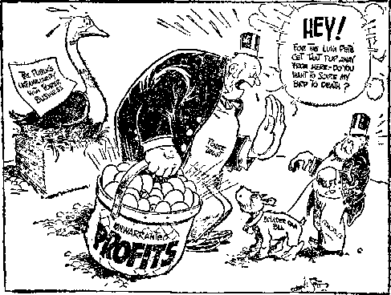
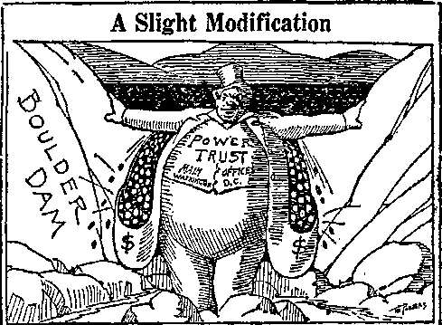
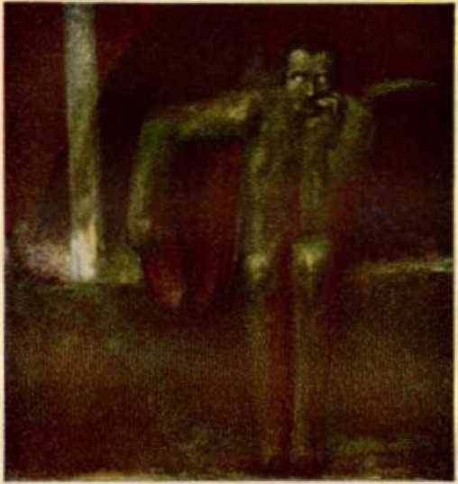
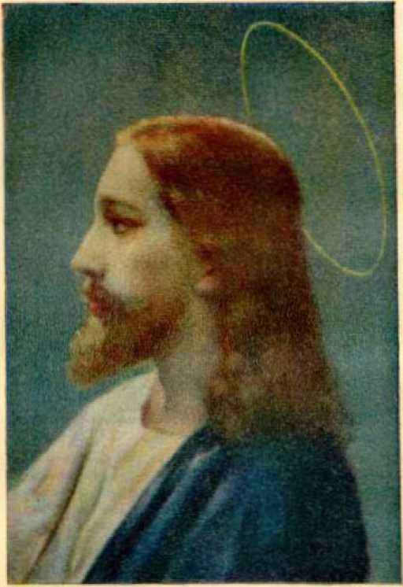
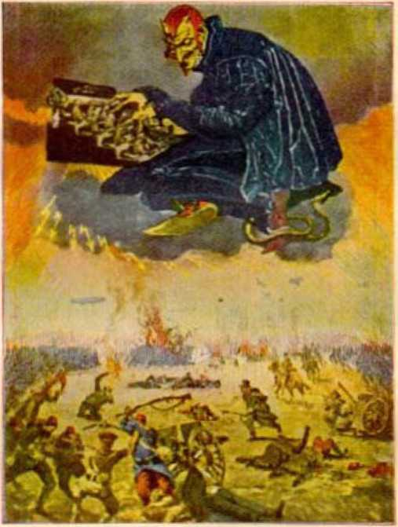
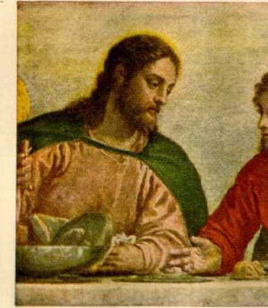
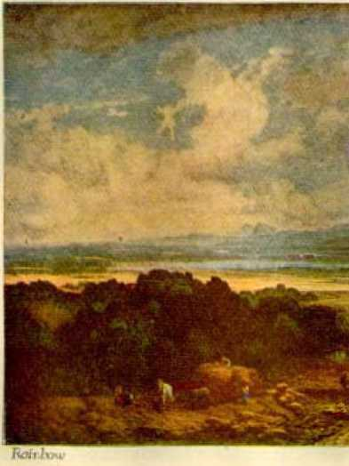
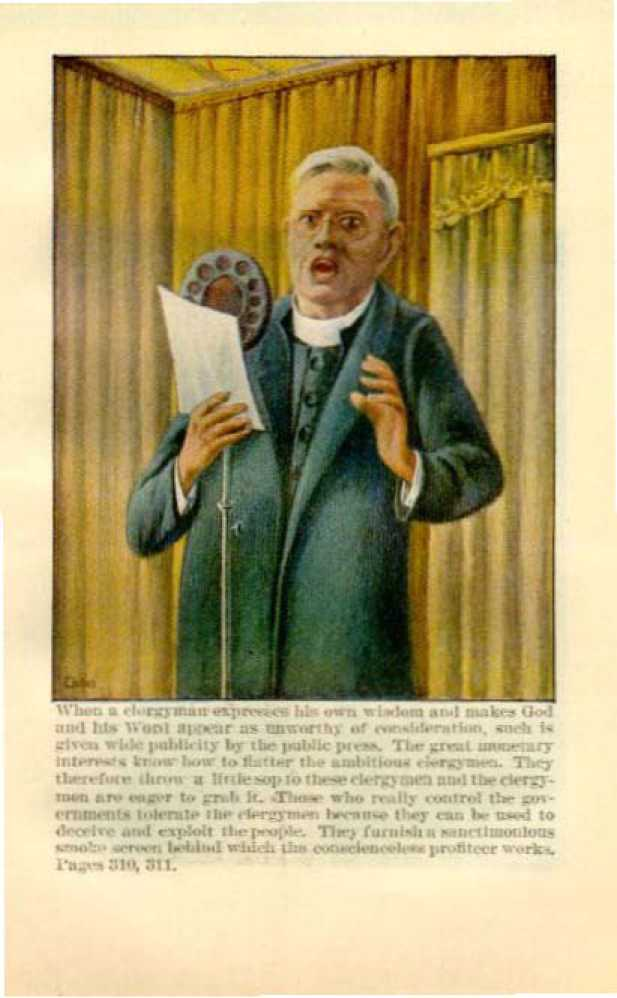
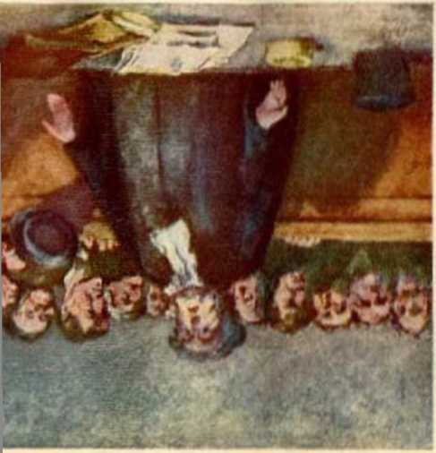

XZXXXXXXXXXXXXXXXXXXXXXTXXXXXXXXXXXXXXXXXXXXXXZXXXXXXXZXXXXXZXX:
GOVERNMENT
ment and manner of
The indisputable evidence showing that the peoples of earth shall have a righteous government explaining the its establishment
By J.
F. Rutherford
Author of
Reconciliation Creation The I larp of Qod Deliverance Where are the Dead? etc.
1,330,000 Edition
Publishers
International Bible Students Association Watch Tower Bible and Tract Society Brooklyn, New York, U. S. A.
London^Toronto, Melbourne, CapeTown, Berne,Magdeburg, etc.
To the
GREAT GOVERNOR OF THE UNIVERSE
Who Doeth All Things Well
This Book Is Dedicated
“Yet have I set my king upon my holy hill of Zion,” (Psalm 2:6) “Say among the nations that the Lord reigneth: the world also shall he established that it shall not be moved: he shall judge the people righteously.” — Psalm 96:10.
Copyrighted 1928 by J. F. Rutherford Made in U, S. A.
THE combined testimony of the world’s greatest statesmen is that the governments of earth not only are imperfect, but generally are corrupt. For centuries men have struggled to establish a good government that would satisfy the desires of the honest. Now it is admitted that all efforts have failed to accomplish such result. There is a reason. Of course Jehovah foreknew and foretold the futile efforts of man. The time is now ripe for the mind of man to be turned to the sober and candid examination of God’s plan for the establishment of a righteous government on earth which will fulfil the legitimate desires of all. What is set forth in the following pages is not the expressed opinion of man. The facts are plainly stated as they exist. Jehovah’s Word is given as authority, which shows the reason for present conditions and outlines the complete remedy for human ills. All men and women of every language and tongue should take the keenest interest in good government. This book will enlighten you because it contains the truth.
The Author
IF YOU have ever been interested in politics, this book will hold your attention. If you desire to see a government that will assure to the people peace, prosperity and happiness, this book will be a joy to your heart. The most complete proof and argument on good government ever written is contained in this book. This extravagant statement is made advisedly, because the proof is from God’s infallible Record, which is now made clear in the light of present-day fulfilled prophecy. It is refreshing and heart-cheering to read it. It is most highly recommended to the people. We confidently expect that its publication will do much good.
The Publisher
Government
[BLANK]
Government
Necessity
THE year 1914 marked the turning point in the affairs of men. Since then, as never before, the people have appreciated the necessity for a stable government. Prior to that date the peoples of the leading nations had been induced to believe that all war was about done. The argument advanced was that commercial interests of the peoples of the various nations were such that no one nation would dare to go to war with another nation. Suddenly, in 1914, the fires of war were lighted; and within a period of time, incredibly short, millions of men were upon the battlefields slaying each other. Just why they were there no one was able to explain to them.
In previous times wars were made between tribes about some real or supposed injury; or between communities because of some religious difference; or between peoples relative to the possession of territory. In the war of 1914 all the leading nations of the earth called Christendom participated, and that without knowing just why. Some of the nations did not actually engage in fighting, but they suffered almost as much as those that did. That was unlike any other war in the history of man.
Every part of every nation involved was required to do its bit. Men and women went to the front. The a men fought while the women drove motor cars, served canteens and nursed the sick and wounded. Fighting was carried on under the ground, on top of the ground, under the sea, on the sea, and in the air; and that continued until millions of men poured out their life-blood. At home men and women together manufactured guns, ammunition, airplanes and other instruments of warfare. The food supply of the various governments was taken over by those in authority, and the peoples were limited in their use of food. Even the babies did their little bit, because their food must be restricted in order that the men at the front might be better supplied. The people were compelled to bring their money and exchange it for the paper obligations of their respective governments. The young men were by law compelled to go to the front and slay their fellow men, while the property of various ones was commandeered for use in war. It was literally a war in which ‘nation arose against nation, and kingdom against kingdom’. For four years it raged with indescribable fury; and then in 1918 the fighting suddenly ceased, and no people or nation had gained a decided victory, and no one was able to state just why the fighting ceased.
Nearly nineteen hundred years prior to the beginning of that World War the terrible conflict was foretold in prophecy. A prophecy can be understood when it is fulfilled and the physical facts fit the prophetic words. The great prophecy uttered by Jesus of Nazareth in 33 A. D. was fulfilled from 1914 to 1918. When the smoke of that war had cleared somewhat, then the sober-minded people began to consider the reason for and the meaning of that war. They are learning something and will continue to learn and will profit by their investigations.
A democracy is a government of the people, by the people, and for the people. The slogan of the World War was: “The war will make the world safe for democracy.” That slogan was adopted and energetically used to induce the people to fight. To that battlecry the peoples of the nations responded. And why? Because they had a great desire for a government that would be administered for and in the interests of the people. They realized the necessity for a stable government in which the rights of the people might be safeguarded.
The peoples of every nation now well know that the ‘democracy’ slogan was a misleading one. The war did not make the world safe for democracy. It did not result in the betterment of any people or nation under the sun. Let it be conceded, for the sake of the argument, that the men responsible for the war and its prosecution did the best they could, still all must agree that the result of the war was and is unsatisfactory. Nearly a decade after the war the leading statesmen of the world freely express their disappointment at the result. Ramsay MacDonald, a member of the British Parliament, voices the sentiment of many other men when he says:
There is no settlement in Europe. There is no peace in Europe. Governments can do nothing. They are afraid to do anything and they stand by and allow things to go from bad to worse.
Soberly viewing the situation existing long after the war, Mr. Lloyd George said:
A new chapter opens in the history of Europe and the world, with a climax of horror such as mankind has never yet witnessed.
Instead of the war’s making the world safe for democracy many of the nations are now ruled by military dictators and the people have no voice in the government. Many of the governments are very harsh and cruel and rule with an oppressive hand. Probably the most benighted and cruel governments are to be found among the little Balkan states. Some of these governments, contrary to the law of God and to the rights of men, have adopted a state religion compelling certain forms of worship. If any citizen who loves God and desires to tell the people of God’s love and kindness toward men makes attempt to teach the same he is at once arrested and thrown into prison. The cruel prison-keepers beat the prisoners with clubs and otherwise ill-treat and abuse them. The accused is not permitted to have a trial by a jury of his countrymen, but is haled before a militaiy court and summarily dealt with. He is punished, not for having done any wrong or injury to his fellow man, but because he has expressed his desire to enlighten his fellow man and to bring him some help. He is punished because the truth that he would tell interferes with the machinations of the oppressive government under which he must live. The people and officials of the more liberal nations are shocked at the cruel and unusual punishment inflicted because of man’s belief and teaching, but they are powerless to render any aid. Each one of these fanatic governments claims the right to punish any one within its borders who dares differ with the state religion concerning the interpretation of God’s Word.
Contemporary with the war and thereafter revolutions broke out which really were expressions of the people of a desire for a better and more liberal government. Moved by a selfish desire the revolutionists have usually made the condition of the people worse, rather than better. Bolshevism rules some nations and people, which is especially a protest against the government under which they have heretofore lived. All who calmly and soberly view developments well know that bolshevism can never result in a satisfactory government of the people. Bolshevism is doomed to certain and complete failure. The same must be said of communism. Such radical movements for the establishment of a government of the people can never bring peace, prosperity and happiness to the peoples of the nations. Many other nations of the world greatly fear bolshevism, and properly so. Any form of government that denies the rights and privileges of some and shows special favors to others is certain to end in disaster. Monarchies have been harsh, cruel and oppressive of the people, but bolshevism and communism are even worse. No government can bring happiness to the people unless it is founded upon honesty and administered in righteousness.
It is said that the government of the United States of America comes nearest of any on earth to being an ideal government. No honest man understanding the conditions in the United States can claim that it is a satisfactory government. True its founders declared that all men are endowed with the inalienable rights of life, liberty and the pursuit of happiness; but this ideal has never been realized by the people. True also that the founders of that government said that all just powers of government are derived from the consent of the people; but now the consent of the people is neither asked nor obtained. For some years after it was founded, there was an attempt to carry into effect the announced principles of government; but never has it succeeded. The fundamental laws of the land declare that the people shall have freedom of speech, the right of peaceable assembly, the liberty of conscience without coercion, and the privilege to worship God according to the dictates of each one’s conscience. These rules of action are ideal, but they are denied daily by those who have and exercise the power of government. The officials of the United States government take a solemn oath to safeguard and protect the interests of the people; but such oath is repeatedly violated by the officials, both high and low.
The three primary branches of the government of the United States are the legislative, the executive, and the judicial. It is well known that fraud and corruption are rampant in every one of these branches. It is true that there are honest men in all these branches of government doing the best they know how; but the honest ones do not predominate, because the dishonest ones control affairs. A member of the United States senate publicly exclaims:
The most important question before the American people is to take the government out of the hands of boodlers, grafters and lobbyists and place its control in the hands of the people.
The public charge goes unchallenged that a high official in the president’s cabinet vigorously enforces the liquor prohibition law against some who are caught, while this same high official himself reaps fabulous sums of money from illegitimate handling of intoxicating liquors. There are two classes who indulge in the violation of the law, to wit, the caught and the uncaught. The weaker ones are caught and examples made of them for show. The stronger and more influential are not caught because there is no desire that they shall be hindered in their wrongful course. It is manifest that the ways of government officials in this respect are not equal.
New York American, April 24, 1928
In the same president’s cabinet another official, whose duty under the law is to ferret out and punish crime, is vigorous and active in the punishment of men who dare exercise their constitutional rights in the freedom of speech, while the same official himself has his hands covered with corruption from bribes received by him that noted criminals might go unpunished. The ways of the government officials in this regard are unequal.
Another cabinet official, sworn to protect and safeguard the property interests of the people, enters into a conspiracy with wicked profiteers to wrongfully deprive the people of their property; and for this he receives large bribes. The ways of this department are unequal.
Conscienceless profiteers by fraud acquire fabulous sums of money, a portion of which they use to corrupt the voters and officials to the end that they may continue to carry on their wicked work. These corrupt and wicked men are really the power of government behind the scenes. The power of government therefore is in the hands of a few men whose god is money. They control conscienceless politicians who pose as statesmen and they are aided and supported in so doing by an organization called the church, and particularly by its clergymen. The government founded as a democracy has been turned into an oligarchy because the supreme power of government now is wielded by these few. The power of these few men has been made doubly strong following the World War. Great corporations called trusts, owned and controlled by a few unscrupulous men, crush out honest commerce, corrupt public officials, and use the so-called organized Christian religion as a screen behind which they carry on their wicked works. The common people suffer, pay the bills, and in vain cry for relief. A member of the United States senate in 1928 in a public address says:
Trusts multiply and the president of the United States does not choose to interfere; monopoly grows fat and the president does not choose to act; combinations are formed and arrogantly pursue their methods under the protection of the government and the president chooses to approve.
The ways of this government are not equal.
To carry on the World War the tax burden of the people was greatly increased. The cost of living was also much increased. Since the war the tax burden has continued and increased, and the cost of living has grown none the less. The reckless administration of the people’s affairs is carried on at great cost and expense with no adequate return to them therefor. A few are favored while the major portion of the people suffer. In this the ways of the government are not equal.
The United States patent office is open to the public. Its records may be inspected by any citizen. Those records disclose that machines have been invented and patented by the use of which the great power produced by the waves of the ocean could be harnessed and made to produce all the heat, light and power the people might require and that at a very low cost. But these machines have been suppressed and not put in use. What would it mean to the people to have such in operation? It would mean that there would be no further need for men to spend their days and nights deep down under the earth digging coal. It would mean that there would be no coal strikes resulting in the starvation of families while millions of other people suffer for the necessity of fuel. It would mean greater contentment for the people and employment of men on top of the earth tilling the soil that food might be produced cheaper for the people in general. It would mean, further, that the gigantic corporations that manufacture gas and electricity and rob the people for the use thereof would have to go out of business or else furnish the people fuel, light and power at a reasonable price. It would mean that the army of men who shovel coal to produce the heat to operate the machines of commerce, would find more congenial employment and more peace and happiness in life. It would mean that the women who stand over the cook-stoves would no longer suffer from intense heat while cooking the family meals. The use of these machines to harness the power of the ocean would mean that all the people could have their homes heated and lighted with electricity, and that at a very cheap rate.
Why are not these machines employed to harness the power to produce these things for man? Because the great and selfish corporate interests that own and operate the coal fields and the oil wells and the gas factories and the electric light plants have such a tremendous influence and power that they can suppress them. And the people suffer.
It is well known that there is a patented device whereby automobiles can be cheaply operated with the use of a very small amount of gasoline, and others that can be operated without gasoline. These inventions have been thrown into the ash-heap because the owners and operators of the great oil companies have succeeded in suppressing them that their own selfish interests might be furthered. The people suffer as a result.
Some time ago there was brought to light an invention by which telegrams can be transmitted over wires very cheaply. The invention permits the transmission of messages over the same wire in opposite directions at the same time and at the rate of approximately a thousand words a minute. To prove that this invention was practical a line of telegraph wires was constructed over a distance of more than one hundred miles and the appliance put in operation. It was exceedingly satisfactory. The invention, however, if employed, would revolutionize the cost of telegraphy ; and the great corporations that now control this method of transmission would be deprived of some of their ill-got gains. They had the power and influence to suppress the use and operation of this invention. And the people suffer as a result.
The government issues a patent to the inventor for these inventions and then stands by and sees a few selfish men deprive the people of the benefits therefrom. In this the ways of the government are not equal.
A member of the president’s cabinet accepts a bribe to commit a wrongful act. The bribe-giver attempts to wrongfully influence a jury to bring about an acquittal of the wrong-doer. Referring to this on February 26, 1928, Arthur Brisbane, a well-known writer in the public press, says:
A certain rich man, accused of bribing a cabinet officer, Is convicted of tampering with a jury and sentenced to six months in jail. The average citizen reads the news and says, “Nonsense, they’ll never put HIM in jail.” Next day’s newspaper announces that the prosperous gentleman plans a trip to Europe, assured by good lawyers he need not worry about the jail for a year, if ever. Had he been poor and convicted of stealing an overcoat, he would be in jail now, and stay more than six months.
The natural resources of the United States of America make it the richest country under the sun. Its broad and fertile fields produce food sufficient to feed the peoples of earth. Much of the soil, however, is idle and not tilled. In February, 1928, a resolution was introduced in the United States house of representatives looking to the relief of the unemployed. At that time it was reported that four million persons in the United States were without employment. There is sufficient land to employ every one of them if conditions were made half-way favorable to compensate them for labor. The selfish, cruel profiteers make it impossible for many to till the soil and even make a living. These great trusts loan money upon the land at a usurious rate. They manipulate the price of the marketable products so that the producer is unable to market his crops at any reasonable price, and is therefore unable to pay the interest on his mortgage; and he loses the land. He becomes discouraged and seeks some other way of making a living. The corporations get the land, and then those who till it become serfs and not owners. The government does not aid the producer. In this the ways of the government are unequal.
A few honest men in Congress attempt to pass a law providing for the irrigation and reclamation of other lands. The opening of such lands to occupancy and cultivation would make it possible for an army of men to engage in farming. Big Business with its ill-got gains controls the legislative body and has power to prevent
the enactment of the irrigation and reclamation scheme; and the people suffer as a result.
New York American, April 24, 1928
Every four years in the United States the people are called upon to select a president. There are two major political parties that put candidates into the field. Both of these parties are controlled by the favored and selfish interests. Candidates for both these parties are named by Big Business, often secretly behind closed doors; and the convention of the people is manipulated thereafter to cause their election. The voters go to the polls and vote; but Big Business wins, regardless of who is elected. Then the government is carried on by and in the interest of a few and against the interests of the majority. It is anything but a democracy.
These are some of the unsatisfactory conditions that exist in the United States of America. There are many more and worse conditions existing. It may be conceded, as claimed, that the United States is the best government on earth. If that is true and it is so unsatisfactory, what can be said for the governments that are less favorable to the interests of the people ?
Without a doubt the British is the strongest government on earth. Among its ruling class there are able men, but these men are imperfect and are influenced and moved like other men. The government is not satisfactory to the British at home. The government is less satisfactory to the people of many of the colonies that go to make up the empire. India is a land ruled by the British government. It is a vast country of a million eight hundred thousand square miles, with a population of upward of three hundred million people. India has never had a satisfactory government. Its people have never been united. The caste system that exists in that land has always produced a wide breach between the rulers and the ruled. Some of the upper caste have started movements for self-government and for freedom from the British empire. This is one of the problems with which the British government has to deal. The British have not established and never can establish a satisfactory government in India. If the British should withdraw and commit all the powers of government to the Indians themselves, the upper caste would grind and oppress the lower strata.
At home the British government has had a great army of unemployed since the war. Many have been the strikes and other expressions of discontent against the government. It can not be said that either the home or the foreign parts of the government are satisfactory.
The peoples of the world are familiar with the conditions existing to some extent at least in their respective governments. Let the entire list be canvassed, from the least to the greatest, and not one government under the sun will be found that is ideal and satisfactory even to the majority of the people under that government. These things are not here said for the purpose of producing discontent; but it is merely a mild statement of the plain facts, that thoughtful men might consider what is the cause and what, if any, is the remedy. If we would deal honestly with ourselves and with our fellow man we shall want to acquaint ourselves with the real facts and dispassionately consider what may be done for the betterment of mankind.
Disarmament
The World War wrought such terrible havoc that the people were anxious to adopt a method that would prevent another great war. Men upon whom the responsibility rested to do something concluded that a league or compact of the principal nations of the world would accomplish the desired result. The league was formed. Many nations entered into that compact, while others declined to enter it; and an effort has been put forth to establish such a relationship between the nations that all controversies may be settled without war. The League of Nations has not bettered the world. It can not better the governments, and it can not prevent war. It has never succeeded in establishing ideal conditions amongst the people on earth, and can not.
Acting in accord with the announced purpose of the League of Nations, conferences have been held looking to the disarmament of the various nations and countries and thus to make war impossible. The United States did not openly enter the League of Nations, but did in conference agree to the destruction of its battleships to the value of five hundred million dollars which had been paid for by the people. Now, after the League has been in existence for nearly a decade, the United States congress has before it a program to expend seven hundred fifty million dollars to construct a more powerful navy than it has ever before had. It is also spending millions of dollars in the construction of fleets of airships that can engage in a warfare of destruction from the air. The disarmament movement has practically collapsed.
Other nations both of Europe and of the Orient are constantly increasing the power of their armies, navies and air fleets. Years after the World War ceased and after the formation of the League of Nations the various nations remain armed, despite the haranguing by the politicians. Big Business will not permit disarmament. A leading magazine writer, discussing the Geneva Conference looking to disarmament and prevention of war, well says:
In theory all the delegates were gathered together to carry out the will of their people. But in fact they could do nothing because the big bosses, for their own reasons, as a result of their own bargains, were agreed that nothing should be done. The hope of Europe for disarmament was denied because the protocol was contrary to the material interests of one great power.
The preparation for another great war continues and the people suffer under the burden. The continued preparation for war is a certain indication that the nations expect to indulge in more war. The man who carries a gun is certain to use it upon what he considers a sufficient provocation. Nations are composed of men all of like passions; and when governments are controlled by selfish and ambitious men and these men arm the governments, the arms are put into use whenever the selfish interests think that they are necessary. The facts show that long after the formation of the League of Nations and the disarmament conferences have been held these conferences have become abortive and the preparation for war goes on. The rulers of the world are in perplexity and in fear of what the future will bring. Some sincere men in public life who would love to see the people in a better condition are at their wits’ end as to what can be done. Expressions by some of these, quoted below, are concurred in by millions of thoughtful persons.
We are living in a kind of fool’s paradise. Under the slogan of preparedness the militarists everywhere are again precipitating a deluge of war.—Fred B. Smith.
Airplanes, poison gas and hatred mixed together are spelling the doom of civilization. America is preparing for war on a scale so colossal that it has no parallel in the history of the world. Our civilization will perish unless we strive for international peace.—Frederick J. Libby.
The next war will last but a few days; with the air and gas attacks which have been planned by headquarters’ staffs, London and Paris will be wiped out in a night.—W. L. Warden, of the London Hail.
I think it is certain that if there be another such war civilization will never recover from it.—Viscount Grey.
I am afraid that unless something intervenes there may be in the world again a catastrophe, but not like the last one. The next war may well destroy civilization unless something or somebody does something.—Lloyd George.
Need of Government
Upon the earth there are divers and numerous nations, small and great. All of the people of all of these nations are made of one blood. The rights of all should be equal. The privileges enjoyed by the people are unequal in each and every government of earth. If there were a world democracy, and men were perfect, the world would be safe for democracy, and then the privileges of all peoples would be equal. It is well known that they are unequal.
Why should the people of Germany fight against the people of America? Or the English fight against the French? And why should people of one nation engage in a deadly conflict against the people of another nation? Is there any just cause or excuse for so doing?
The respective governments of these various nations establish an imaginary line or boundary and endeavor to keep the people of each nation within such boundary. If one journeys from one country to another, he must obtain the consent of the government under which he lives and the approval of the government to which he goes. The government controls the people, and not the people the government.
If a dispute arises between the governing powers or nations, the people or subjects are called upon to bear arms against their fellow man of the other government. Patriotism is invoked to induce the people to fight against each other. Patriotism is wrongfully invoked. Patriotism means love of country and love for the people of that country. Love means an unselfish desire to do good and an effort to put that desire into action. True patriotism therefore should lead the people to endeavor to help each other; and if true patriotism were invoked, there would be no deadly wars between peoples. The peoples being all made of one blood and made to dwell upon the earth, if all were moved by true patriotism they would be unselfishly trying to help each other instead of trying to kill each other. It is the demagogue who waves his arms and appeals to the people to show their patriotism by going to war and slaying each other. As a rule those who make the most noise about patriotism never go to war themselves but slink behind to profit by the spoils at home. When the boys who bear the brunt of the battle return scarred and maimed for life, the profiteers and patriotism-howlers forget these faithful citizens, furnish them with no relief but permit them to drag out a miserable existence during the remainder of their days. True patriotism should at least provide aid, comfort and support for those who have been incapacitated by reason of the performance of service which they have been compelled to perform.
Every thoughtful person sees that after thousands of years of effort on the part of men to establish ideal governments civilization is now about to collapse. Such is the expressed view of the leading statesmen of the world. The peoples of earth have reached a point of dire extremity. That extremity seems to be necessary to cause the people to carefully and earnestly consider the reason for the unsatisfactory conditions and to seek a true remedy. The present condition of civilization compels all thoughtful persons to agree that there is a great need for a stable and just government of the peoples of earth.
A just government is one that is founded in honesty and unselfishly administered in righteousness. The ways of such government must be equal toward all. All honest persons must agree that such a government is of paramount necessity if the peoples of earth are to enjoy peace, prosperity, life, liberty and happiness. In such a government the supreme governing power must center in and be exercised by one who is honest, just and kind.
If the peoples of earth are to receive and enjoy the greatest possible benefits from their government, their minds must find just cause to readily assent to the honesty and righteousness of the governing power exercised over them. When the people see that the governor is righteous and true and is ruling in righteousness, then the inhabitants will learn to do right and to dwell together in peace. It must be conceded by all that the governors of this world have not been satisfactory to man in the past and are not satisfactory at the present.
The purpose here is to prove from indisputable evidence that the supreme governing power exercised over the nations of the world in the past six thousand years has been unrighteous; that the time has come for a great change; and that the beginning of that time of change is marked by the year 1914; that hereafter the governing power over the peoples of earth shall be exercised by One in whom resides supremacy ; and that that governing power shall be exercised in righteousness for the benefit of the people.
Some reading the foregoing will say the statement is fantastic because what is and has been, will ever continue to be. To such the answer is: Up to this time man has failed to establish a righteous government on earth; the governments of the world are now sick unto death; there must be a reason for such condition, and man should attempt to ascertain that reason. It will therefore be worth your while to examine the evidence following and then determine whether or not there is hope for a better government for mankind and an early realization of that hope. If there is reason for such hope, then every honest person should desire to know it. The necessity for an honest and righteous government must be conceded by all. There is a certainty of a righteous government’s being established on earth, and it is to the interest of each one to calmly and dispassionately examine the evidence bearing thereupon, for his own benefit and for the benefit of his fellow creatures.
Supremacy
JEHOVAH God is supreme. From him proceeds all rightful authority. (Rom. 13:1) His Word is true, (John 17:17) He is the great First Cause and is the Creator of heaven and earth. (Isa. 42:5) He made the earth by his power. (Jer. 10:12) He is the Almighty God, which means that there is no limitation to his power. (Gen. 17:1-3; 35:11) He is therefore the Most High above all.—Ps. 91:1; Eph. 4:10.
Jehovah God is just. He deals justly and his determinations are always right, (Ps. 89:14) “He is the Rock, his work is perfect; for all his ways are judgment: a God of truth and without iniquity, just and right is he. ’ ’ (Deut. 32:4) He is a just and mighty God besides whom there is none other. (Isa. 45:21) Being absolutely just he can do no wrong and therefore could not show special favor to some at the expense and rights of others. In him there is no partiality.—James 3:17.
Jehovah God is wise. His wisdom is perfect. In wisdom he created the heavens and the earth and all things therein. (Pss. 104:10-24; 136: 5; Prov. 3:19) He is the source of wisdom.—Prov. 2: 6, 7.
Jehovah God is love. (1 John 4:16) Perfect unselfishness is expressed in all his actions. In God is found the complete expression of unselfishness. God hates that which is evil, and particularly pride, lies, a
30 false witness, and the hand that sheds innocent blood, and that which is oppressive. (Prov. 6:16-19; Ps. 97:10) All the ways of the Lord God are true and right. All of his ways are equal. (Ps. 33:4) “His work is honourable and glorious: and his righteousness endureth for ever. He hath made his wonderful works to be remembered: the Lord is gracious and full of compassion.”—Ps. 111:3, 4.
The four primary attributes of Jehovah God are, therefore: power, justice, wisdom and love. These attributes always operate in exact harmony and for the ultimate benefit of all of his creation.
The supreme power of control over the governments of earth always has been invisible to man and always will be. The entire organization is termed “world”. There is an invisible part of the world, and there is a visible part; and the invisible exercises the supreme power. “World” means men organized into forms of government under the supervision of an invisible overlord, which overlord exercises the power of control. A spirit being is not visible to human eyes. (John 3:6) Jehovah God is the great Spirit invisible to human eyes. (2 Cor. 3:17; 1 Tim. 6:16) While Jehovah God is supreme, and in him dwells all rightful power and authority, yet from time to time he delegates power and authority to his creatures. Such delegated power, to be properly used and exercised, must be exercised in harmony with the will of Jehovah God. If exercised contrary to the will of God it is wrongfully exercised. These unalterable truths stated in the foregoing paragraphs must be considered in connection with the cause of unsatisfactory governments of earth and the remedy therefor.
God created man, whom he called Adam, a perfect creature. That perfect man’s invisible ruler was Jehovah God, his Creator. To that man God gave dominion over the earth and over its animal creation. By accepting these favors and blessings there was an implied covenant on the part of man to be obedient to God’s commandments. Jehovah God appointed an overlord for man, to wit, his son Lucifer, a spirit creature invisible to man, and designated in the Scriptures as one of the “morningstars”. (Job 38:7) Jehovah God delegated to Lucifer the power and authority over perfect man to be man’s overlord; but that delegated power and authority, to be rightfully exercised, must be exercised in strict harmony with God’s will, and the governor must be loyal to Jehovah God. The divine arrangement required man to be obedient to God’s laws and also required Lucifer to be obedient thereto. Both Lucifer and perfect man knew that such was required of them. Both knew that God had announced the penalty of death to be inflicted upon man should he wilfully violate God’s law. (Gen. 2:17) Lucifer had an ambitious desire to have man all to himself that he might receive the homage and worship from man and that he might be like unto and equal to the Most High. He represented to Eve that the stated death penalty for a violation of God’s law was not true. He induced Eve to violate that law. Through Eve Adam was led to violate God’s law. This wrongful act called down upon Adam the penalty of death. God must be consistent and vindicate his own law. By the wrongful act of Lucifer and man’s violation of God’s law man was alienated and separated from God. (Gen. 3:3-19) Man therefore lost his dominion and his right to life and was expelled from his perfect home. Thereafter Lucifer was designated by four names, Dragon, Satan, Serpent and Devil, which names signify that he is a devourer, the enemy and opposer of God, a liar and deceiver, and the slanderer of God and all who try to do right, —Rev. 20:1-3.
When one has a throne, that signifies that he is invested with certain power and authority. It is written concerning Lucifer, who has since been called Satan the Devil: " For thou hast said in thine heart, I will ascend into heaven, I will exalt my throne above the stars of God: I will sit also upon the mount of the congregation, in the sides of the north: I will ascend above the heights of the clouds: I will be like the Most High.” (Isa. 14:13,14) This scripture proves that Lucifer had a throne and was therefore clothed with certain power and authority. Having received this power and authority from Jehovah God he would continue to exercise it until deprived thereof by him who granted it. The Scriptures further prove that his authority was over man, who was then in Eden the garden of God, and that such authority was delegated by Jehovah. ‘‘Thou art the anointed cherub that covereth; and I have set thee so: thou wast upon the holy mountain of God; thou hast walked up and down in the midst of the stones of fire. Thou was perfect in thy ways from the day that thou wast created, till iniquity was found in thee.”—Ezek. 28:14,15.
These scriptures prove that all supreme power resides in Jehovah God; that God delegated to Lucifer the power and authority as overlord of man; that Lucifer was and is invisible to man; that Lucifer
afterward became Satan and is designated under that and the other names applied to him; and that he would continue to exercise his delegated power and authority until God withdraws or takes it away from him.
To be sure God could have withdrawn all power and authority from Satan immediately upon his deflection and not have permitted him to further influence man. His wisdom directed otherwise. Man had willingly turned away from his great loving Creator and had lost his right to live and his right to dominion. Would man now seek to return to God’s favor, or would he prefer to yield to the influence of Satan? The great issue from that time forward became: Who is supreme, Jehovah God or Satan the Devil? God would give man the opportunity to choose between himself, the Righteous One, and Satan, the Evil One. Adam chose to yield to Satan the Devil. All of his children were born in sin and shapen in iniquity and therefore alienated from God by reason of Adam’s wrongful act. (Ps. 51:5; Rom. 5:12) Some of Adam’s descendants, however, chose to obey and serve God. Abel, Enoch and Noah were of those who thus desired righteousness. The majority of men Satan led in the way of opposition to God.
Now the question is, Who is responsible for the governments of men that have existed and now exist upon the earth? That question can best be answered by a brief examination of the leading governments that have been upon earth. The facts show that with but two exceptions none of these have been God’s governments and that the invisible control over them has been exercised by Satan the Devil. It is true that at all times there have been a few men who have desired to be obedient to God, but those have always been decidedly in the minority. Satan by fraud and deception has led many to believe that at least part of the governments of this world have been God’s governments, and hence to charge Jehovah God with the responsibility therefor. Seeing that God is the possessor of almighty power, that he is just and right, that his wisdom is perfect, that he is love, it follows that any government which God would establish would be consistent with himself, because God can not be inconsistent, nor can he deny himself. (Mal. 3:6) If the facts show that the governments have been founded and conducted contrary to God’s way, then that of itself would be proof that God is not responsible for such governments and that he is not the author thereof.
Governments
Strictly speaking, a prince is the son of a monarch or potentate or king. Adam was not a king, but he was the son of the great God; and Adam was therefore a prince. He was given dominion over all the earthly works of God’s hand, but the title of king was not bestowed upon Adam. That title is properly applied to one having rulership over his fellow creatures. Adam was not given rulership over his fellow creatures. No one prior to the flood is designated in the Scriptures by the title of king.
God permitted man to choose his own course. Satan and his emissaries corrupted almost all the people of earth and at the time of the flood the wickedness of man was great in the earth and every imagination of his heart was only evil continually. The one exception at that time was Noah and the immediate members of his household.—Gen. 6:1-10.
After the flood the people who dwelt on the plains of Shinar were organized into a city or government, and over them Nimrod was made king. That was the beginning of earthly governments. (Gen. 10:10) The name of that kingdom or government was Babylon. It was the organization of men into a form of government created and built up in defiance of God, and upon it God showed his disapproval. (Gen. 11:1-9) This alone proves that the invisible ruler of that kingdom or government was Satan the Devil and that Satan is the one who inspired its organization. Satan put Nimrod before the people as one greater than Jehovah God; and he was hailed by the people as “Nimrod, the mighty hunter before the Lord”. (Gen. 10:9) This proves that Jehovah was named among the people, but he was named in derision and was counted less than Nimrod. Under the supervision and direction of Satan, Nimrod, in defiance of the law of God’s covenant, slew animals and defiled the earth with their blood and thereby gained for himself a great name. (Gen. 9:3-5) Doubtless Satan saw to it that the people were made acquainted with the fact that Nimrod was going in a way contrary to God’s covenant and that God could not prevent him from so doing. Nimrod was therefore given a name greater than that of Jehovah; hence he is called “the mighty hunter before the Lord”. The word before in this sentence has the meaning of superior to. Nimrod’s fame was such that he was made king. That was the beginning of kingdoms or governments on earth with Satan as the invisible overlord.
The spirit of rulership then began to grow in the minds of men, and other companies of people were organized into cities or governments each having a king. (Gen. 14:1-9) That Satan the Devil was the invisible overlord of those governments is made plain by the fact that the people indulged in devil worship. They worshiped the Devil and the fallen angels and objects set up by the evil one.
Early in the history of man following the flood the government of Egypt was organized. The influence and power of that nation grow until it dominated the other kingdoms of the earth. Egypt was the first world power; that is to say, it was the first earthly government that exercised superior power over all the other governments of the earth. The invisible ruler of Egypt was Satan, and Egypt was therefore his organization. This is made certain by the fact that the government did not recognize and serve Jehovah God. When the king was in trouble he called upon magicians to aid him. (Gen. 41: 8) God showed his favor to the Egyptians through his servant Joseph, and at that time the king was kind to Joseph. The government of Egypt did not recognize and worship Jehovah as God. When Joseph was dead there arose another king over Egypt, who knew not Joseph nor served God. (Exod. 1:8) The Egyptians oppressed those who claimed to serve God. When God sent Moses to make request of the king of Egypt that the Israelites be permitted to depart, the king of Egypt said to him: “Who is the Lord [Jehovah], that I should obey his voice?” (Exod. 5:2) This alone is proof conclusive that Egypt was under the invisible influence and control of Satan the Devil and that it was Satan’s organization. Then God slew all the first-born of the Egyptians and destroyed Egypt’s army. This is further proof that the government of Egypt was Satan’s government. In fact Egypt, being the first world power, symbolically stands for the Devil’s organization through all the ages.
Assyria was a nation or government which grew until it became a dominant world power. It followed second in order. Satan was the invisible god or ruling power over that nation. The king and others of the government worshiped Nisroch, an idol set up as the representative of the Devil. The king of Assyria reproached and openly defied Almighty God. He brought a great army and stationed it before the walls of Jerusalem and threatened the Jews because they worshiped and served Jehovah God and because they would not pledge allegiance unto the Assyrian king. Then God slew the Assyrian army: “And it came to pass that night, that the angel of the Lord went out, and smote in the camp of the Assyrians an hundred fourscore and five thousand: and when they arose early in the morning, behold, they were all dead corpses. So Sennacherib king of Assyria departed, and went and returned, and dwelt at Nineveh. And it came to pass, as he was worshipping in the house of Nisroch his god, that Adrammelech and Sharezer his sons smote him with the sword.” (2 Kings 19: 35-37) This is also proof that the Assyrian government was not Jehovah’s government but was set up as Satan’s organization and existed under his supervision and control.
Babylon, although being the first government organized by Satan, was not the first world power. It was third in the list of world powers. That Babylon was set up as Satan’s government from its inception is shown from the Scriptures; that it continued to be Satan’s organization, over which he was the invisible overlord, is further shown by the facts that the king of Babylon worshiped images and compelled the people so to do. (Dan. 3:1-6) Belshazzar the king of Babylon reproached God and worshiped the Devil and devil images.—Dan. 5:3, 4.
Then followed the world power of Medo-Persia, which also had for its invisible overlord or ruler Satan the Devil, who was assisted by his aides the evil spirits. (Esther 1:13; Dan. 10:13) 'The next world power in order of time was Greece, the invisible overlord and ruler of which was Satan the Devil. The people ignored Jehovah God and worshiped images and many false gods, of which Satan the Devil was the chief. —Dan. 10:20; Joel 3:6; Acts 17:16.
Then followed the government or world power of Rome, which was an idolatrous government, the invisible god or overlord of which was Satan the Devil. Rome was the power that dominated the nations of the earth when Jesus the Son of God was on earth. It was at that time that Satan laid claim to rulership of all the kingdoms of earth, and that claim Jesus did not dispute. (Matt. 4:8, 9) Furthermore, Jesus referred to Satan as the “ruler of this world”. (John 12:31; 14: 30, Rotherham) In corroboration of this, Paul wrote under inspiration and said that Satan is the god (invisible ruler) of the nations and kingdoms of this world.—2 Cor. 4: 3, 4.
In all of these world powers, nations and governments, there appear three distinctive elements as the visible rulers or representatives of the invisible overlord. These three are the commercial, the political, and the religious classes. The controllers of commerce, who hold the greater amount of material wealth, claim and enjoy special privileges. They exercise a controlling influence. Their love for money is greater than their love for righteousness and justice. They have been at all times exceedingly selfish. Active men must be provided to conduct the affairs of government. These have been designated by the title of professional politicians or statesmen. They have at all times yielded to the power and influence of the holders of wealth and have become the representatives of the classes rather than of the people.
Man is so constituted that he will worship; and Satan, knowing this, has at all times seen to it that a state religion or formalistic worship was established amongst the people. The leaders in the religious system have been known as priests or clergymen. They being the weaker, the stronger power has seen to it that the religious element has kept in step with the commercial power; and even many religionists that started to follow in the way of righteousness yielded to the influence of Satan, exercised through the holders of greater material wealth, and have fallen easy preys of the Devil’s government. Therefore it is written in truth: “For the love of money is the root of all evil; which while some coveted after, they have erred from the faith, and pierced themselves through with many sorrows.” (1 Tim. 6:10) That such things proceed from Satan the Devil is further made manifest by the admonition given to the lover of righteousness, thus: “But thou, 0 man of God, flee these things; and follow after righteousness, godliness, faith, love, patience, meekness. ’ ’—1 Tim. 6:11.
What was true in the days of Jesus and Paul is true of and concerning all governments of this world. Satan has been the invisible overlord or ruler of all of such governments. Had Jehovah God, by exercising his supreme power, supervised and controlled the governments of the world, those governments would have been administered wisely, justly, and in righteousness, and unselfishly for the benefit of the people. The fact that the history of all of these world governments shows that great injustice has been practised against the people, that the governments have not been wisely administered, that special favors have been shown to a few while the major portion have been downtrodden and oppressed, proves that the invisible ruler of these nations has been Satan the Evil One.
Exceptions
The Seilptures disclose two exceptions to the Satanic control of the governments that have existed on the earth. At all times God has had some men on earth who have believed on his name and who have worshiped and served him. Among these are Abel the son of Adam, Enoch, Noah and Abraham. While Satan was the god or invisible overlord of Babylon and coexisting governments, there was at that time a people over whom Melchizedek was king or ruler. Melchizedek was different from all other kings of his time. He was the king of Salem, which means “king of peace”. He is called “king of righteousness”, which shows that he was counted righteous in God’s eyes because he believed and served Jehovah God. Melchizedek was not subject to the king of Babel or any other contemporary monarch. He was “priest of the Most High God”, which shows that he exercised whatsoever authority he had by the direction of Jehovah God.—Gen. 14:18; Heb. 7: 2.
Abraham believed God and obeyed him. Four allied earthly kings, of which Satan was the overlord, seized Lot the son of Abraham’s brother and carried him away. Abraham had three hundred eighteen personal servants; and he took these, together with his three neighbors, and pursued these four victory-flushed kings, engaged them in battle, and defeated them. He rescued Lot and brought him back, together with all his goods and the members of his household. It was on that occasion that Melchizedek ministered unto Abraham and blessed him and said: “Blessed be the most high God, which hath delivered thine enemies into thy hand.” (Gen. 14:20) This is proof that Melchizedek was righteous in God’s eyes and that Jehovah God gave Abraham the victory. If God is supreme in power, and Melchizedek was priest of the Most High God, why did not Melchizedek exercise his divinely-given power and overthrow the kings over which the Devil ruled? The answer is that it was not God’s due time or purpose to then destroy Satan’s power. God provided the kingship of Melchizedek as a picture or type foreshadowing the time coming when he would take control of all earth’s affairs through his King or Chief Officer.
Here in the Scripture we have the first suggestion that God would anoint a King to rule over this earth, whose kingdom would not be any part of Satan’s organization. It is the Apostle Paul who tells us that Melchizedek holds this typical significance, being “made like unto the Son of God”, Jesus Christ, God’s anointed King. (Heb. 7:3) Melchizedek had no successor either as priest or as king. The priesthood of the children of Israel and their kings were not of the Melchizedek order. His was a higher rank than the Hebrew kings and priests, and this is proven by the fact that Abraham paid tithes unto Melchizedek and received blessings at his hand.—Heb. 7:1-21; Zech. 6:13.
The natural descendants of Abraham were organized into a government. This was the other exception to the organization over which Satan has been the god. Abraham was never styled a king, however. He is called a patriarch, which means a forefather or parent. (Heb. 7: 4) Abraham recognized Melchizedek as a priest or officer and servant of the Most High God and therefore paid tithes unto him. Abraham did not mimic the kings or rulers round about him but recognized Jehovah God as his ruler. He observed that God rebuked and reproved earthly monarchs because they were under the direction of Satan. He believed that the day would come when the Most High God would set up a kingdom of righteousness on earth, and by faith seeing that day when God’s anointed One would reign he rejoiced.—John 8:56.
By the hand of Moses God delivered the natural descendants of Abraham from Egypt and brought them to the foot of Mount Sinai and there organized them into a nation. Jehovah God was their ruler. God called the Israelites Jeshurun, which means upright nation, because they were God’s people chosen for himself and for his own good purposes. “He [Jehovah God] was king in Jeshurun.”—Deut. 33:5.
In Egypt God made a covenant with the Israelites, and when he led them to Mount Sinai he confirmed and inaugurated that covenant. At that time he said to them: “Now therefore, if ye will obey my voice indeed, and keep my covenant, then ye shall be a peculiar treasure unto me above all people: for all the earth is mine: and ye shall be unto me a kingdom of priests, and an holy nation. ’ ’—Exod. 19: 5, 6.
For a time the Israelites obeyed Jehovah God and he led them and blessed them and there was no strange god among them. Then “Jeshurun”, once upright before God, became evil and forsook God and fell away to the Devil. “They provoked him to jealousy with strange gods, with abominations provoked they him to anger. They sacrificed unto devils, not to God; to gods whom they knew not, to new gods that came newly up, whom your fathers feared not. Of the Rock that begat thee thou art unmindful, and hast forgotten God that formed thee.”—Deut. 32:16-18.
The people of Israel ceased to be God’s people and were cast away from him. From that time Satan was the god or invisible ruler of the entire world and all the peoples and nations thereof. Every nation and government on earth since then has been dominated by the subtle and wicked influence of Satan. This is true, even though few people know that fact. It is also true that in all these nations there have been a few men of good intention who have striven to better their fellow man and whose efforts have failed. The kingdoms and governments of this world have been cruel, harsh and oppressive upon the people. Every government of the world has thus been dominated by Satan, even though the rulers and the people did not understand or believe it. He has blinded the minds of the people to God and turned their minds away from the Lord God and has thus continued to hold control over the nations of the earth. One of the strongest proofs that this statement is true is the fact that evil has been rampant in all these governments. It could not be truly said of any of those governments that such is an upright government in which there is no evil. The very best government of the world is far from upright.
Recently ex-Emperor Wilhelm of Germany has said of and concerning the government of the United States of America that ‘it stands at the head of the list of governments, which place it has gained through its ideals, and therefore the American government is master of the world’. At the very same time a member of the United States senate, who is on the inside and who speaks knowingly, has this to say about the United States government:
The government is in the hands of boodlers, grafters and lobbyists; that the individual rights of the people are disregarded and trampled upon; that a system of wicked espionage is carried on; that the homes and places of business of citizens are daily invaded in violation of the fundamental law of the land; that power is concentrated in the hands of a few to the detriment of the people; that the selfish and powerful interests employ the forces of the government to build up special privileges and circumscribe the individual’s opportunity; that in 1921 the president of the United States was selected by a few selfish men or their representatives who consorted with Harry M. Daugherty, who formulated and executed a conspiracy of robbery and theft of the property of the people; that Andrew J. Mellon, one of the richest men in America, was made the head of the United States treasury and ex-officio chairman of the Federal Reserve Board, and in that position of power has exercised a controlling influence over the financial policies of the nation and credits of the people; that the law forbids the appointment of a man to the position of head of the treasury department who is engaged in trade; that contrary to this law Mellon was appointed and at that time was a director in sixty-eight great banks, railroads, and business corporations, ahnost every line of human endeavor from the control of the aluminum trust to the manufacture of whiskey; that it was Mellon who with his kinsman organized the scheme to raise two million dollars to corrupt the voters in the election of a United States senator; that Albert B. Fall was at the same time at the head of the Interior department of the government; that the president of the United States signed an illegal order turning the oil that belonged to the people over to Fall; that Fall accepted bribes from conspirators, did their bidding, and corruptly transferred to them vast oil fields which belonged to the people; that corrupt lobbyists maintained their offices in the national capitol, openly advertised their influence, and carried on a propaganda to deceive and corrupt the legislative body and to mislead and misrepresent the people; and that by the wrongful enactment of laws and by the manipulation of the law the people who produce are required to sell their products in a market fixed by the special and selfish interests, the commercial power, and to buy what they need at unnatural and unjust prices.
These are just some of the evils that prevail in the United States government, which is said to be the most nearly ideal of all governments of earth. It must be manifest to all reasonable minds that these evils do not proceed from the great Jehovah God. They are mentioned here for the purpose of showing that the nation or government of the United States is not a Christian nation and that Jehovah is not the god of that nation. The United States government is conducted by imperfect men who are under the influence and control of the invisible ruler, Satan the Devil. This is absolutely true, whether they know it or not. ‘ 'No man can serve two masters. ’' (Matt. 6:24) These men can not serve a wicked government that oppresses and does injustice to the people and at the same time serve God. It is authoritatively written: “Know ye not, that to whom ye yield yourselves servants to obey, his servants ye are to whom ye obey; whether of sin unto death, or of obedience unto righteousness?” (Rom. 6:16) God is not responsible for any unrighteous government. If Satan is the invisible ruler of the United States government, which is claimed to be the most nearly ideal, then what can be said about the other governments of earth?
If Jehovah God is supreme could he not prevent Satan from exercising evil control over the governments of earth and make it possible for the people to have an upright government? He could do so, and that is exactly what he is now about to do. The purpose here is to lay the facts before the people that they may see what is now taking place and what will be the ultimate result for their good. Attention is called to the evils that rule the world in order to convince the people that Jehovah God is not the god of the nations of earth.
If Jehovah God is supreme and all the nations are under the influence and control of Satan, does not that prove that Jehovah God is responsible for all evil in the governments of earth? No. It does not so prove. God is supreme. But for centuries God has not exercised his supreme power to compel men to obey him and to do right. He has not restrained Satan in the exercise of his power because it was not due time to remove the power from him. He has at all times had some witnesses in the earth to tell the people concerning the truth and has then permitted the people to take their own course.
But why should God permit Satan to exercise his evil power over the governments of the people and thereby entail upon them so much suffering, pain and sorrow ?
Man was created perfect, with the privilege of choosing to obey God and live or to disobey and die. God announced his law concerning man. He appointed Lucifer man’s overlord. Lucifer defied God, challenged his word, and reproached his name, and Adam followed Lucifer. God permitted Lucifer (now Satan) to go on in his wicked way until the due time to vindicate the word and name of Jehovah and to demonstrate His eternal supremacy.
God could have killed the evil one or removed his power; but had he done so the opportunity for man to choose between good and evil would have been absent. At all times God has placed before men evidence of his own goodness in order that those who desire to know and to do right might walk in the way of right. Mel-chizedek, priest and king, was an example of one who followed goodness and was a witness to the goodness of God. Even then most of the people preferred to follow their evil tendencies and to yield to Satan’s influence. When God organized the nation of Israel the first law that he gave to them was: ‘1 Thou shalt have no other gods before me.” (Ex. 20:3) That law was given for the benefit of the people. God would teach them that if they would ever enjoy the blessings of life, peace, and happiness, they must depart from the evil one and must know and obey the great Jehovah God. He would have them know that the sufferings of man have been because of the disloyalty of Satan and the disobedience of man and that blessings to man could come only by loyalty and obedience to God. Had God compelled obedience of man and not permitted man to come in contact with evil, then man would have been deprived of choice between good and evil. The opportunity for a test of man’s loyalty and devotion to righteousness would have been absent.
God set up a model government with the Israelites and gave them an opportunity to obey him. Thereby he would teach them, and through them all the peoples of earth, that to know and to obey God means life and peace and joy. When that people forsook God he then withdrew his protection from them and permitted them, with all other peoples of earth, to take their own course. Many peoples of earth have desired a good government and have put forth their best endeavors to obtain such, but all their efforts have failed. They have learned little or nothing by their experiences under arrogant, cruel and oppressive rulers. The people look up to and make heroes of their oppressors and disregard the Word of God. The history of every government and nation of earth is written in human blood unjustly shed and the peoples of every nation and government have suffered, and the people now must know the reason therefor. That reason has been and is because of the evil influence of Satan the Devil, the invisible overlord and ruler of the nations of the world.
Let it be stated with the strongest emphasis that mention is here made of the cruelty and wickedness of the governments of earth, not for the purpose of causing rebellion against those governments, but for the sole purpose of advising the people that the invisible ruler of these nations and governments has been and is Satan the Devil; and for the further purpose of advising the people that their relief must come by turning themselves to Jehovah God and learning and obeying his laws. Without doubt there are many men in these various governments of earth that have a sincere desire to see the conditions of the people bettered. They labor under the misapprehension, however, that man himself can bring about that betterment. They are wholly ignorant of the fact that the invisible ruler or god of the world is Satan the Devil. The fact that he has influenced the minds of men and turned them away from truth and righteousness is ignored by them. Millions of people on earth are even ignorant of the existence of the Devil and are ignorant of God’s purposes concerning the establishment of a righteous government on earth. That ignorance has been caused in large measure by the clergymen who have not taught the truth that Satan is the invisible ruler of the world. Many of these clergymen are willingly ignorant; but, whether willingly ignorant or not, they have not taught the people God’s Word concerning the common enemy of man. On the contrary, they have taught the people that the leading nations of the earth are Christian and that these nations are properly called the representatives of God. They should have known better. The just, wise, loving and all-powerful Jehovah God would have a just and wise and beneficial government for the people. The fact that the governments are to the very contrary, that they are oppressive and that the people suffer thereunder shows that there is an evil influence exercised over them. God has permitted the nations and peoples to go on in the evil course they have chosen, abiding his due time to vindicate his name; and in his due time he brings to their attention the truth that they may have a chance to be recovered and to receive the blessings that he has in store for those who obey him. It is written by one of his prophets: “Blessed is the nation whose God is [Jehovah].” (Ps. 33:12) It is well known that the nations and peoples of the earth are not blessed now, and we know that the nations do not recognize Jehovah as the great God. In fact, few if any of the officials of the governments of earth even know to what the name Jehovah refers.
Now, after many centuries of laborious effort on the part of man to establish a satisfactory government, the people see that the governments of earth not only are unsatisfactory but are unrighteous. The people must now learn the truth of and concerning the influence that has caused the governments of this earth to be harsh and oppressive and unjust. The Lord’s time has come for them to learn. There will be some in positions of authority that will read these lines and then make an effort to suppress that which is here stated, that the people may not know it. That of itself will prove the cruel influence being exercised by Satan. But the Lord will see to it that the people now have a chance to receive the truth; and blessed is the man or men who take it upon themselves to aid the people in understanding the truth. Let those who oppose take fair warning that God will not permit the people longer to be kept in ignorance!
Seeing that Jehovah God is supreme, can he exercise his supreme power to restrain Satan and set up a righteous government for the blessing of the people? Yes! And that is what he will do. The people must now be able to see that man has not the ability nor the power to establish a righteous rule upon earth. They must see that some supernatural power must intervene in man’s behalf. God’s due time is at hand when this power shall intervene to establish righteousness.
Mclchizcdck was priest of the Most High God. (Gen. 14:18) Most High means that God is above all. To Abraham God said: “I am the Almighty God: walk before me, and be thou perfect. ’ ’ He did not compel Abraham to obey, but he advised Abraham of his supremacy and then invited Abraham to walk before the Lord in righteousness and receive his approval. This establishes the rule that God purposes that mankind shall in due time have a full and complete lesson in righteousness, that he may choose to do that which is right and receive God’s approval and favor.
Concerning the great Jehovah it is written by his prophet: “Behold, the nations are as a drop of a bucket, and are counted as the small dust of the balance: behold, he taketh up the isles as a very little thing. All nations before him are as nothing; and they are counted to him less than nothing, and vanity. It is he that sitteth upon the circle of the earth, and the inhabitants thereof are as grasshoppers; that stretcheth out the heavens as a curtain, and spreadeth them out as a tent to dwell in; that bringeth the princes to nothing: he maketh the judges of the earth as vanity. To whom then will ye liken me, or shall I be equal ? saith the Holy One. Hast thou not known ? hast thou not heard, that the everlasting God, the Lord, the Creator of the ends of the earth, fainteth not, neither is weary 1 ’ ’—Isa. 40:15,17, 22, 23, 25, 28.
The Scriptures establish beyond any question of doubt the supremacy of Jehovah. The fact that he is all-powerful does not at all mean that he is responsible for the evil of this world. He has not restrained the wicked from prosecuting their works, but will do so in his own due time, thereby demonstrating to all people that he is righteous. When the people do so learn and appreciate the goodness of God, they will have their desired blessings. By a knowledge of God, and obedience to him, the people will be taught righteousness.
Will Almighty God ever establish a just and righteous government for the people 1 and will he restrain Satan the evil one that he may not interfere with the operations of a righteous government? Yes. The proof is now abundant that he will do that very thing. The proof set forth in the following pages will enable the searcher of truth to see that 1914 marks the turning point in the affairs of man for man’s betterment. The interests of all the peoples of earth are alike because God made all of one blood to dwell upon the earth. (Acts 17:26) Let the peoples of earth then cease from strife and controversy, lay aside all prejudices and, with a singleness of purpose to learn and know the truth, give diligence to the examination of the facts before them, which facts are now made plain in the light of the Word of God.
The evidence shows that Jehovah God is the Supreme One and that he is just, wise, loving and allpowerful. Necessarily then, it follows that no righteous government of the people can be established except it be established in the manner God has ordained. What reason is there to expect that God will establish a righteous government for the people?
CHAPTER III
Promised
JEHOVAH has promised that he will establish a righteous government on earth and that man shall benefit therefrom. He has promised that such government shall be established in honesty and administered in justice and equality toward all. His promise is that it shall be a government of peace and prosperity and that it shall stand for ever.
Jehovah never fails in a fulfilment of his promise. The period between the time of making the promise and the time of its fulfilment may seem long to man, but in his own due time God will faithfully perform all that he has promised. (Josh. 23:14; 1 Kings 8:56; Isa. 40:26) In order that those who call upon him may have complete confidence, God says to them: “So shall my word be that goeth forth out of my mouth: it shall not return unto me void; but it shall accomplish that which I please, and it shall prosper in the thing whereto I sent it.” (Isa. 55:11) “I have spoken it, I will also bring it to pass; I have purposed it, I will also do it. ’ ’—Isa. 46:11.
A promise may be stated in plain terms or words; or a promise may be implied by the course of action taken by the one having power and authority to make and execute promises. In both of these ways God has given promise to establish on earth a righteous gov-65 ernment for the blessing of the people. His Word is true, and is given for the enlightenment of men that man’s faith may be fully established in God.—2 Tim. 3:16; John 17:17.
Direct Promises
Having complete faith in Jehovah as the great God in whom is all power and wisdom, Abraham left his native land and journeyed to a strange country in obedience to God’s command. God said to Abraham: “And I will make of thee a great nation, and I will bless thee, and make thy name great; and thou shalt be a blessing: and I will bless them that bless thee, and curse him that curseth thee; and in thee shall all families of the earth be blessed.’’ (Gen. 12:2, 3) These words can be construed to mean only that God purposes to establish a nation of righteousness for the blessing of all the families of the earth and this he will do in his own due time. Later the Lord said to Abraham: “I am the Almighty God. , . . And I will make thee exceeding fruitful, and I will make nations of thee, and kings shall come out of thee.” (Gen. 17:1, 6) These words can mean nothing less than God’s expressed purpose of establishing upon earth a government for the benefit of men, over which Jehovah God must reign as the great Supreme Power.
Jehovah then showed his purpose to delegate the active exercise of the governing power to One in full harmony with himself and who would obey his orders. Therefore God inspired Jacob on his death-bed to prophesy: “The sceptre-shall not depart from Judah, nor a lawgiver from between his feet, until Shiloh come; and unto him shall the gathering of the people be. ” (Gen. 49:10) This is a promise that he would delegate the right to rule to Shiloh and unto him should the gathering of the people be. “Shiloh” means tranquil one and peaceful one, and therefore must mean that the government God will establish by and through Shiloh will be a government of peace and righteousness. God can use any one whom he may choose to give utterance to a prophecy for him. He caused Balaam to prophesy concerning earth’s ruler: “And his king shall be higher than Agag, and his kingdom shall be exalted. . . . There shall come a Star out of Jacob, and a Sceptre shall rise out of Israel, and shall smite through the princes of Moab. . . . Out of Jacob shall come he that shall have dominion, and shall destroy him that remaineth of the city.” (Num. 24:7, 17, 19, margin) From this prophecy no other reasonable conclusion is possible than that in God’s due time he will place his king upon the throne, that he will clothe him with all power and authority to establish a righteous government, and that he will destroy the evil rule of Satan over the people.
After God had used Moses to serve as a visible deliverer of the Israelites from Egypt, he caused Moses to prophesy: “I will raise them up a Prophet from among their brethren, like unto thee, and will put my words in his mouth; and he shall speak unto them all that 1 shall command him. And it shall come to pass, that whosoever will not hearken unto my words which he shall speak in my name, I will require it of him.” (Deut. 18:18, 19) The conclusion to be drawn from this prophecy is that Moses was a type of the One whom God will make the ruler over all the earth and who shall exercise righteously the power and authority conferred upon him by Jehovah, and therefore the kingdom to be established must be God’s kingdom. This is a guarantee that the government will be righteous.
The holy spirit means the power of God. It is holy because it is complete and is exercised by the Holy One. It is invisible to man, yet the result of the operation thereof is observed by man. God can exercise his invisible power upon the mind of any creature whom he may desire to use. In times of old he put his holy spirit upon men who were called prophets, or seers; and these men spoke the words which God willed them to speak. The prophets were wholly devoted to God; and, as the apostle puts it, they spoke as they were moved upon by the spirit of Jehovah. (2 Pet. 1:21) Therefore the statements made concerning the coming government, and made by the holy prophets, are the statements from Jehovah himself. Among these holy prophets was Daniel. By the mouth of Daniel God caused a brief history of the world powers to be given, and then caused Daniel to say: “And in the days of these kings shall the God of heaven set up a kingdom which shall never be destroyed: and the kingdom shall not be left to other people, but it shall break in pieces and consume all these kingdoms, and it shall stand for ever.”—Dan. 2: 44.
Kingdom and government mean the same thing; and therefore when the scriptures refer to the kingdom which God will establish, they mean that righteous government which other scriptures state shall be established by him. The Lord declared that by the mouth of two or more witnesses all things should be established. It pleased him to give two lines of testimony concerning the establishment of his righteous government, one direct and the other implied.
Implied Promise
God organized Israel into a nation. His primary purpose in so doing was to foreshadow the establishment of his lasting government, which he had promised through his holy prophets. In his dealing with the Israelites it is clearly seen that God implies a promise to set up a righteous government for men on the earth. With the Israelites God made a covenant, and as a part thereof he set forth a code of laws by which the Israelites were to be governed. Those things foreshadowed a better government to come. (Heb. 10:1) To Israel God was making known his purposes to establish a perfect government amongst men. All things that happened unto them were types or “en-samples” for the special benefit of, and to be understood by, the people on earth at the end of the world who should then be honestly seeking to understand the truth. That time has arrived; and therefore what happened to the nation of Israel is now of special interest to the seekers for truth.—1 Cor. 10:11.
Isaac had two sons, whom he named Jacob and Esau. According to the will of God the birthright descending from the father to the son was to be had by Jacob, even though he was the younger. (Gen. 25:23) The sons were twins, but Esau was born a few moments before Jacob. Esau was in line to re-eeive the special benefits from Jehovah, but he sold his birthright because of his selfishness. God foreknew he would do this; hence the arrangement that Jacob should have the birthright. Esau pictured or foreshadowed a class of people having access to the favor of God but who sell the same because of their selfish desire to have the approval and the plaudits of men. Esau therefore represents a part of Satan’s organization including the so-called Christian nations of this world, and particularly the professed Christians of those nations who have called themselves by the name of the Lord and yet have turned away from him and his promises that they might have a part in the governments of this world of which Satan is god. Esau persecuted Jacob, and therefore he foreshadowed the persecution that professed Christians have heaped upon those who really represent the Lord. Esau and Edom mean the same one. (Gen. 36:1) The Edomites formed a government and had governors or kings over them long before the Israelites had a king. “And these are the kings that reigned in the land of Edom, before there reigned any king over the children of Israel.” (Gen. 36:31) The Edomites were not Jehovah’s people, but were a part of the Devil’s organization, because they were organized and came under the influence of Satan as the invisible ruler. Likewise there have been, and are now, many nations and peoples on the earth calling themselves by the name of the Lord but preferring to set up their own kingdoms and governments and become a part of Satan’s organization. The Edomites, the descendants of Esau, were the cousins of the Israelites. The Edomites therefore followed the course of the other nations round about in having a government and king over which Satan was the overlord.
Isaac and his faithful son Jacob followed Abraham’s meek and lowly course. They recognized Jehovah as their ruler. In due time God changed the name of Jacob to that of Israel, and he was ever thereafter known as the father of the nation of Israel. When God organized the Israelites into a nation there was no king over them save Jehovah God. (Deut. 33: 5) To God they would look for their law and guiding rules of action. At Mount Sinai God gave the Israelites the law by which they were to be governed. The opening statement of that law is: “I am Jehovah thy God who have brought thee forth out of the land of Egypt, out of the house of servants. Thou shalt not have other gods besides me.” (Exod. 20:2-4, "Rotherham) The manifest purpose of this law was to teach the Israelites, and through them all mankind, that Jehovah is the only true God, from whom proceeds life and happiness, and to follow other gods means sorrow and ultimate destruction. By giving them this law there was an implied promise that God in his due time would establish a righteous government amongst the peoples of earth.
The Sabbath
Among other provisions of the law given Israel was that which governed the sabbath day. "Remember the sabbath day, to keep it holy. Six days shalt thou labour, and do all thy work: but the seventh day is the sabbath of the Lord thy God: in it thou shalt not do any work, thou, nor thy son, nor thy daughter, thy manservant, nor thy maidservant, nor thy cattle, nor thy stranger that is within thy gates: for in six days the Lord made heaven and earth, the sea, and all that in them is, and rested the seventh day: wherefore the Lord blessed the sabbath day, and hallowed it.” (Exod. 20: 8-11) "Six days may work be done; but in the seventh is the sabbath of rest, holy to the Lord: whosoever doeth any work in the sabbath day, he shall surely be put to death. Wherefore the children of Israel shall keep the sabbath, to observe the sabbath throughout their generations, for a perpetual covenant. It is a sign between me and the children of Israel for ever: for in six days the Lord made heaven and earth, and on the seventh day he rested, and was refreshed.” (Exod. 31:15-17) Understanding the meaning of these scriptures shows clearly an implied promise on the part of Jehovah to establish a righteous government amongst men.
Two extreme views have been taken and expressed concerning the law of the sabbath day. One of these erroneous views expressed by the clergymen is summed up by one of their number in the following words:
God claims the Sabbath for himself in a very unique, distinctive way as a day of rest and worship. He again and again commands you to spend its hours in the conservation of your spiritual power in the exercise of public and private worship. To spend this holy day in pleasure or unnecessary secular labor is to rob God. We have got to be careful how we take the hours of the Sabbath for secular study or work, for God will surely bring us to judgment concerning the matter. Church attendance is a definite obligation, a debt which we owe to God.
The other extreme and also erroneous view is stated by one who knows not God and who ridicules and reproaches God because of the law of the sabbath. His words show he is induced so to do by reason of the clergy’s misrepresenting God. After quoting the law and the penalty attached for its wilful violation, and reproaching God for inflicting the severe penalty of death, the writer of the erroneous view says:
In spite of manifold texts like this there are persons who protest that they love this bloody, barbarous, tribal God of the Jews.
Satan has inspired both of these extreme and erroneous views. Satan would have the people believe that the law as expressed to the Jews at Sinai applies to all peoples of earth. The clergy, after quoting the death penalty as set forth in the above law for a violation of the sabbath day, teach the people that the only way for them to escape the penalty for violation of the sabbath law and the only way to pay their debt to God is to refrain from work on Sunday and attend some man-made organization which these men call the church and there listen to some self-conceited man “utter vain knowledge, and fill his belly with the east wind’’. (Job 15:2) The extreme and erroneous view expressed by the clergy produces agnostics and infidels, and causes them to take the other extreme view of the sabbath as above expressed.
In the first place, the sabbath day enjoined by God’s law is not the Sunday now observed by the nations of the world. The Jewish sabbath day was the seventh day of the week and corresponds with Saturday as shown in the present day calendars. Therefore the clergy have the wrong day, even if they were interpreting the law properly. In the second place, the clergy are not properly applying the law. The law never did apply to non-Jews; and when Christ came and died upon the cross, he put an end to the law, nailing it to the cross.—Col. 2:14
The apostle refers to the Jewish sabbath da,y when he says: “Let no man therefore judge you in meat, or in drink, or in respect of an holy day, or of the new moon, or of the sabbath days.” (Col. 2:16) With Christians every day is the same, and what is wrong to be done on one day is wrong to be done on any other day; likewise that which is proper to do one day is proper on other days.
The extreme view as expressed by the agnostics is induced by Satan in order to turn the mind of men away from God and to cause men to despise God. Many men, possessing a high sense of justice, have been turned away from God by the misrepresentation of his law made by the clergy. Thus Satan uses both classes to reproach Jehovah.
If it be known and borne in mind that what happened to the Jews in connection with the law covenant was for the purpose of foreshadowing things future to happen, and which things are to be understood by those living at the end of the world, then the whole matter becomes clarified. When the apostle under inspiration writes that ‘the law was a shadow of good things to come’ we may know that it had a far different significance from that which is given by either of the extreme views above expressed.-Heb. 10:1.
By establishing the sabbath day with his chosen people the Jews, God gave an implied promise of establishing a government of righteousness for the ben-
TU Dr id Ftattf SjkA
T»m> «M|i|Xiu> jxnr*r of rtnitrol otv** the fon’mmmts of mrth nl«a)> ha* teen tavbdbie to *mh, six I alaaya will lie. P«‘ mill* oepanlmthwi la I-~|>--I “»arkl'. Tlierr t> »n i» Tl<dl>U (mH uf Iha »>-rld arxj there b a vteiMe |>art ; »tnl the Ltirlvllile viwft4w» Ttw >u|.rvTW power. 1‘miiv 31.
Th*- ImtU tbwi *Jtxl ibvt* laid to roler-hip of al!
the kiuphicix of tb< world. Je»u« dhl hot <Hnput*r tltal eUlm. Ih fort. tUrnn »u» thru ifer aw I ut l!>r whole world. The I^rML UMM j<f'<jxrwil to Je>oj> that lie Would abRente UM) turn <nrr Iha rulmhlp of the world lo Je»n» |irvrhhd Jean* w<h|M worablp th* Lteril. tML
CKon •■u^lCTQT'-TJ
No <tUnT wnwoable numHnsHi Is ]hh41i<o Itou that In Goel's iJW llmr Im* WlH Jut-’ l:j Uli .* »;-> i:‘ ■ ln-oria . . , «ilh . . atHtalkj :,H !>js. . ■ -» 1 'iiiTlt, l*u=c ST*
Ti> • i i ixdort* himI £•»'• « • inml* (,l ( ».m notli belli • •ml.
hMi i ”1 •»|'| v l.|«l 11" pet plc. Evrij iiLVeriinirm of tLi world Im* thus b«w diml nan-1 l»y Patau, ewn thmitfti tlv ri-HI •«<! tlM> I>?o|.l* did not in «l«-r-tnnil or bl'ljon It. H.. I um blliMhtl Hie Diimh of i!••• popt. t- <lm. and turned niln«h «W fn»»i lht» Urd <•««! utii Iuim tllW» «mUnuo | !•• h'dd omt.ol uwr -lit riaiio-w of 'Io enrth. On*» i f UK? Btn«w«< plttufN tluit thb* KilU-4»M»t »• tm? In I ho (nr: Unit In N bifii rntn|ni.it h» nil of Hmm* gi x». tlHliMllM. I c»uld n»t t<* triy MM hi of uny of Lu-m. co’-vninu'iiln tluit «udi 1« tin «|»-rljrlil uoxcriiiiwii' lu wlilehthcn* in no rvU Tin* wiy bwt :ot-erntrad »f the vorld b fur from uprltfhi. L*uga -Kn
tire S'tv^k
CowiiLitiufl
m|iijni-ii linn ftirniulkru or ri'ii^bsii cutlet! HnL "1 |>i'M Ihjl re-lllirl'jn" nr n iz.I i'lirl ■ .imlly", . nd Hu it:’..rt 11_. un-tionn uiv deHiiiiiHieii ns "I’hrisiinu riiniiiii^'' \n.......
i]ii'>r' nations urr I'hi'isrk-ii mirnniB. .|i-.’- In |iinin merits suld! '.My kiutidmu in i,-.r nf rli!> world.; niy 1;1i.tril>-ui In fullin'.'— .Tnhn IM ;iG, J':K“ ItitK
Dm id tin r>‘
efit of man and that that government would be one of peace and rest. God had finished his creation of things pertaining to the earth by the creation of man, and on the seventh period called a day (but which periods of time were each actually seven thousand years in duration)* he rested from his creative work. That does not mean that during the period of rest God would be idle or inactive, but it means that God ceased from his creative work with the creation of man. During the seventh day or period of time he would afford an opportunity for his creatures to prove their proper appreciation of the Creator, and to prove this by showing faithfulness and loyalty to God. At the beginning of the seventh day or period of time Lucifer rebelled and caused the rebellion of man. God could have ended the rebellion there by destroying Lucifer and man, but he chose to wait for the full maturity of his plan. God would now teach the Jews of his purpose to restore man to himself and that this would take place at the end of the seventh day; and therefore the seventh day is a day of rest, or sabbath. The word “sabbath” means rest. His immediate purpose in giving the Jews this law was to establish their belief or faith in him, so that they would know that man’s relief can come only from God and would come in his due time, and that they must by faith wait for it. By the law of his covenant with them he said in substance: ‘The seventh day of the week shall be to you a day of rest; the seventh year shall be to you a year of rest; the sabbath year, or cycle of seven times seven, or the forty-ninth year, shall be a year of rest to be followed on the fiftieth year by a jubilee. At the •See Creation.
jubilee year everything that any Jew lias lost must be restored to him. ’•—Lev. 25:1-16.
God stated his purpose in establishing the sabbath period when he said: “Ye shall not therefore oppress one another; but thou shalt fear thy God: for I am the Lord your God. Wherefore ye shall do my statutes, and keep my judgments, and do them; and ye shall dwell in the land in safety.”—Lev. 25:17, 18.
The emphasis must be laid upon the words stated: “lam the Lord your God. ” God would have the Jews know that he is the great Almighty One upon whom man must depend for his blessings. They must know that in order to receive the blessings they desire they must completely separate themselves from Satan’s rule. By keeping the sabbath they would show their faith and confidence in God and would trust him. By giving them the sabbath or rest period there is a clearly implied promise on God’s part to give rest and restoration to those who shall exercise complete faith in him and that this he would do in his own good time. Paul says that the purpose was to establish faith in God and that the Jews did not profit by the law concerning the sabbath because of their lack of faith or belief.
The statement of the law of the sabbath or rest period should have been good news or gospel to the Jews, and had they trusted God it would have been good news or gospel to them. Paul says that this good news God caused to be preached to the Jews, but that the Jews did not profit thereby because they had not faith. (Heb. 4:2) Had the Jews believed God and obeyed him, they would by faith have seen a day coming when God would bless them according to the promise that he had made to Abraham; and thus believing they would have rested in faith and patiently waited for that time. Their father Abraham had such faith, and rested in faith and rejoiced in the coming of that day and waited for it patiently. (Heb. 11: 8-14) By keeping the sabbath day as commanded the Jews would in substance have said: ‘Jehovah is our great God and Ruler. We have absolute faith and confidence in him; and we will show that faith and confidence by obeying his law, which we can obey. We have confidence that in his own due time he will give his people complete rest and all the blessings that he has promised.’
But why should God inflict the severe penalty of death upon those who refuse to obey the sabbath day law ? This is the question the agnostic asks, and being unable to see a reasonable cause he reproaches God. He says it was so small a thing for which to receive so severe a penalty. He asks: ‘Was working on the sabbath day so heinous a crime against one’s fellow man that it would warrant death?’ The answer is, It was not a heinous crime against their fellow man. Their fellow man was not involved. It was a small thing indeed to keep the sabbath day by refraining from work, and therefore it could easily have been kept by the Jews. It was a very small tiling for God to ask them to do. Likewise it was a small thing for God to ask Adam and Eve not to eat certain fruit in the garden of Eden. In both instances the wrong lay in the fact that there was a wilful violation of God’s law. It was the act of disobedience which constituted the wrong. It was a violation of an agreement the Jews had made with God in the covenant, and therefore showed a laek of faith in God and lack of loyalty to him. If the Jews would not learn to trust God in small things, how would they trust him in greater things? The lesson that God would teach them was that disobedience on the part of Lucifer and Adam had brought trouble upon all; that wilful disobedience shows a disposition to go in the way of Satan the Devil and to obey him rather than God; that those who go in the way of Satan must ultimately suffer death: and this he would teach them by inflicting the penalty of death for a wilful violation of his law. If God had required the Jews to do something they could not do, and then put them to death for failing to do it, that would appear more reprehensible than requiring a small thing. When it is remembered that the purpose of the law was to serve as a teacher for the Jews, then it is readily to be seen that they must be punished for a wilful violation of it. The lesson God was teaching the Jews was for their benefit and through their experience for the benefit of all men. The infliction of the death penalty was equivalent to saying to the Jews: ‘If you follow Satan death will be the result; if you obey me you will get life. ’ No penalty therefore could have been proper except the death penalty. Since the Jews and all other men were born into the world without a right to life, and are therefore sinners, it was no injustice to them to inflict the death penalty.—Rom. 5:12.
When Jesus was on earth he emphasized the rule when he said: “This is life eternal . . . [to] know thee, the only true God.” (John 17:3) Paul states that the law covenant was given as a teacher to the Jews and that obedience was the lesson of first importance. (Gal. 3:24) This lesson they could learn only by faith in God. The lesson of first importance for all of God’s creatures to learn is that a wilful disobedience to God is to follow in the way of Satan and die, and that faith in and obedience to God lead to life.
Choosing the King
The fact that Jehovah God provided for a king over his chosen people Israel is clearly an implied promise on the part of God that in his due time he would provide a governor and a ruler that would rule in righteousness for mankind. But of course such king over Israel would be chosen and set over them in God’s due time, and any attempt to run ahead of the Lord would be displeasing to him. (Deut. 17:14-18) “Rest in the Lord, and wait patiently for him. . . . For evildoers shall be cut off: but those that wait upon the Lord, they shall inherit the earth. Wait on the Lord, and keep his way, and he shall exalt thee to inherit the land: when the wicked are cut off, thou shalt see it. ’ ’—Ps. 37: 7, 9, 34.
These scriptures state God’s rule to be that he would have his creatures know that the way to receive his approval and blessings is to be obedient to him in each step they take. The Jews showed a lack of faith in God and an unwillingness to wait upon him. He was the mighty God who had delivered them and had protected them for many years. He was their invisible Ruler. God had made Samuel a judge amongst them. The elders of Israel called upon Samuel and said: “Make us a king to judge us like all the nations.” Their request displeased Samuel because he knew it was contrary to God’s way, and he placed the matter before the Lord. “And the Lord said unto Samuel, Hearken unto the voice of the people in all that they say unto thee: for they have not rejected thee, but they have rejected me, that I should not reign over them. ’'—1 Sam. 8: 7.
All the nations round about had kings or visible rulers, and the invisible ruler of all these nations was Satan the Devil. The leaders in Israel were not willing to wait upon the Lord, but they wanted a visible king like the other nations. God permitted the Jews to have their own way, that he might teach them the lesson that only by his kingdom could their blessing come.
Saul, of the tribe of Benjamin, was selected by the Israelites by lot. (1 Sam. 10:18-23) Samuel the prophet assembled the people and said to them: “Now therefore behold the king whom ye have chosen, and whom ye have desired!” (1 Sam. 12:13) Although the Jews had run ahead of the Lord, yet the Lord told them that if they would be obedient to his law both the people and the king would have his favor. (1 Sam. 12:14,15) Both the people and Saul, whom they had selected as their king, disobeyed God, thereby showing a lack of faith in him. God therefore withdrew his favor and rejected Saul. “And Samuel said, Hath the Lord as great delight in burnt offerings and sacrifices, as in obeying the voice of the Lord? Behold, to obey is better than sacrifice, and to hearken than the fat of rams. For rebellion is as the sin of witchcraft, and stubbornness is as iniquity and idolatry. Because thou hast rejected the word of the Lord, he hath also rejected thee from being king.” (1 Sam. 15:22, 23) Sani became a worshiper of the Devil and the people also turned to idolatry.—1 Sam. 16:14; 28:1-16 ; 1 Kings 21: 26; 2 Kings 17:12.
The Israelites, who were God’s chosen and professed people, foreshadowed the professed people of God during the Christian era. Within that period of time God has taught his professed people that he will set up a government of righteousness for men, and this he will do in his own due time by and through his Anointed One at his second coming. The elders and leaders, otherwise called clergymen, amongst the professed people of God, like the leaders of Israel, have refused to wait upon the Lord but have attempted to set up the kingdom in advance of his time. They join hands with the commercial and political rulers of the earth in the formation of earthly governments, particularly the League of Nations; and the latter they hail as a special expression of God’s kingdom for men on earth. Like Saul and the Israelites, they have turned to devil worship and have become a part of the Devil’s organization, which is called Babylon; and their organization "is become the habitation of devils, and the hold of every foul spirit, and a cage of every unclean and hateful bird”. (Rev. 18:2) The clergy, like Saul, have turned to spiritism and have led their flocks in the way of Satanic worship. This came to pass because of their unwillingness to wait upon the Lord and obey his commandments, and thereby they have shown a lack of faith in him.
In his own due time Jehovah God selected and anointed David, of the tribe of Judah, to be king over his chosen people. (1 Sam. 16:6-13) In so doing God gave an implied promise that in his own due time he would establish a righteous government in earth by and through the One whom David foreshadowed. This implied promise is exactly in line with the direct promise God had given by the prophecy of Jacob. (Gen. 49:10) David was an imperfect man, to be sure, because he was a son of Adam. (Ps. 51:5) But David was faithful and obedient unto God, and for this reason God was pleased with him. Because of ■ David’s loyalty and faithfulness God said of him : “I have found David the son of Jesse, a man after mine own heart, which shall fulfil all my will.” (Acts 13:22) Jehovah God so appreciated David’s faithfulness and obedience that he made David to be a type of the Messiah whom he would make ruler over all the nations of the earth. The name David means beloved, and he foreshadowed the beloved One of God who is both the Savior and the Ruler of men. God so arranged it that the coming Mighty One should descend from the line of David, and provided that such Mighty One should sit upon his throne for ever and should be the Head of Zion, God’s organization. “If thy children will keep my covenant, and my testimony that I shall teach them, their children shall also sit upon thy throne for evermore. For the Lord hath chosen Zion: he hath desired it for his habitation.” (Ps. 132:12, 13) After David had served for some time as king, God spoke to him by his prophet and said: ‘‘I will set up thy seed after thee, which shall proceed out of thy bowels, and I will establish his kingdom.”—2 Sam. 7:12.
Solomon, the son of David, was chosen by the Lord to be ruler over all Israel. God bestowed upon Solomon unusual honor. Thus God gave his implied promise that in his due time he would establish a righteous government for the people on earth by and through the One whom Solomon foreshadowed and that such Ruler should be the recipient of God’s unusual favor and his greatest honor. “And the Lord magnified Solomon exceedingly in the sight of all Israel, and bestowed upon him such royal majesty, as had not been on any king before him in Israel. ’ ’—1 Chron. 29: 25.
The name Solomon means “the peaceful one”. His reign was marked by peace, wisdom, riches and glory, “Moreover, the king made a great throne of ivory, and overlaid it with the best gold.” (1 Kings 10:18) His throne was of ivory covered with pure gold; and the vessels of his house, even the vessels out of which he drank, were gold. “So king Solomon exceeded all the kings of the earth for riches and for wisdom. And all the earth sought to Solomon, to hear his wisdom, which God had put in his heart. ” (1 Kings 10; 23, 24) “And Solomon reigned over all kingdoms from the river unto the land of the Philistines, and unto the border of Egypt: they brought presents, and served Solomon all the days of his life. ’ ’—1 Kings 4: 21.
Thus God, by bestowing great riches and wisdom upon Solomon and by making his reign one of peace and prosperity, gave his implied promise that in due time he would establish a government on earth amongst men and that the ruler thereof, his anointed One, he would clothe with power and wisdom and riches and glory beyond that of any other. The Scriptures having plainly stated that the things that happened unto Israel foreshadowed better things to come, we know that the reign of Solomon foreshadowed the government of righteousness, prosperity and blessings that shall come. When Jesus was on earth and was being opposed by the Pharisees, who constituted the clergy of that time, he said to them: “The queen of the south shall rise up in the judgment with this generation, and shall condemn it: for she came from the uttermost parts of the earth to hear the wisdom of Solomon; and, behold, a greater than Solomon is here, ’ ’—Matt. 12:42.
Undoubtedly Jesus there referred to himself as the greater than Solomon and therefore identified himself as the One whom Solomon foreshadowed. On another occasion Jesus declared that there was a time coming when Satan, the ruler of this evil world, shall be cast out and that when he (Jesus) would be lifted up to his position of power and glory, which Solomon foreshadowed, then he would draw all men unto him. (John 12:31, 32) Thus he identified himself as the Shiloh long promised by the mouth of God’s prophet. —Gen. 49:10.
The two outstanding kings of Israel were David and Solomon, because they were chosen by the Lord Jehovah and anointed by him. By and through his chosen servant they were designated as “the anointed of the Lord”. Because those kings ruled by the authority of Jehovah it was said of them that they sat upon the throne of the Lord. “Howbeit the Lord God of Israel chose me before all the house of my father to be king over Israel for ever: for he hath chosen Judah to be the ruler; and of the house of Judah, the house of my father; and among the sons of my father he liked me, to make me king over all Israel: and of all my sons (for the Lord hath given me many sons) he hath chosen Solomon my son to sit upon the throne of the kingdom of the Lord over Israel. Then Solomon sat on the throne of the Lord as king instead of David his father, and prospered; and all Israel obeyed him. ’ ’—1 Chron. 28: 4, 5; 29: 23.
God permitted the government of the Israelites to run its course and to fulfil the purpose for which he permitted it. Not one of Israel’s rulers was perfect, of course. They were imperfect men whom the Lord used to make pictures of better things to come. By his dealing with the Israelites God clearly demonstrated to them and to all people that in order to be pleasing to God both the rulers and the people must be obedient and faithful to God. Such obedience and faithfulness he requires, not for the purpose of any benefit or profit to himself, but to teach mankind that to go contrary to God and follow in the way of Satan leads to death, and that faithfulness and obedience to God lead to life and happiness. The time draws near when God will restrain Satan and all the workers of iniquity. He will vindicate his word and his good name, and by and through his kingdom teach all willing ones of humanity the way to life.
Israel’s government was not intended to be a permanent institution, but was organized to teach the people and to foreshadow the grander and better thing to come. Only from this standpoint is it possible to understand and appreciate God’s laws to them and his dealing with them and his ultimate overthrow of that nation.
Following Solomon’s reign the government of Israel rapidly declined. At times an honest man in the office of king tried to rally the people to faithfulness unto God but did not fully succeed. The first king of Israel was demanded by the people contrary to the will of God. The last king of Israel reached the limit or fulness in idolatry and wickedness. Therefore God said of them: “I gave thee a king [Saul] in mine anger; and took him [thy king, Zedekiah] away in my wrath. ’ ’—Hosea 13:11.
The types and shadows had been made whereby God had given his implied promise to establish a government upon earth for the benefit of man. The experiences of the Israelites show the complete inability of man to establish a righteous government so long as Satan the invisible ruler exercises influence and power over man. The government of Israel having shown the disposition to yield to the wicked influence of Satan, and its rulers having reached a fulness in wickedness, God announced the decree for its overthrow: “Therefore thus saith the Lord God, Because ye have made your iniquity to be remembered, in that your transgressions are discovered, so that in all your doings your sins do appear; because, I say, that ye are come to remembrance, ye shall be taken with the hand. And thou, profane wicked prince of Israel, whose day is come, when iniquity shall have an end, thus saith the Lord God, Remove the diadem, and take off the crown; this shall not be the same: exalt him that is low, and abase him that is high. I will overturn, overturn, overturn it; and it shall be no more, until he come whose right it is; and I will give it him.”—Ezek. 21:24-27.
By this decree God again gave his direct promise that in his due time he will establish a government on earth for men and give the rulership thereof to him "whose right it is” to rule. After Zedekiah’s dethronement the Jews never had another king. Because that kingdom was typical and had served its purpose the Jewish nation as such never has been reestablished, and never will be. The Jews, however, will be restored to their homeland and will be under the rulership of him whom David and Solomon foreshadowed.
During the time of the Jewish polity God raised up a number of faithful and true men who as God’s mouthpieces prophesied in his name. God’s coming government for man was the highest theme of all of these holy prophets. They looked forward to the future time when there should be born a man child descending from the tribe of Judah and through the line of David and of whom Moses was a type. Isaiah prophesied as to the time of the birth of that Mighty One; and with a prophetic vision of his greatness, of his government and of his power, said: "For unto us a child is born, unto us a son is given, and the government shall be upon his shoulder; and his name shall be called Wonderful, Counsellor, The mighty God, The everlasting Father, The Prince of Peace. Of the increase of his government and peace there shall be no end, upon the throne of David, and upon his kingdom, to order it, and to establish it with judgment and with justice, from henceforth even for ever. The zeal of the Lord of hosts will perform this. ’ ’—Isa. 9:6, 7.
The Prophet Jeremiah testified that Jehovah God is the King of Eternity and that he would express his wrath against the nations under Satan’s supremacy, and that they would not be able to abide his indignation,—Jer. 10:10-12, margin.
The Prophet Ezekiel told of the return of the Jews to their own land, of the resurrection of the dead, and how a government would be established, and how the people would come under the rule of the mighty Messiah whom David foreshadowed. “And David my servant shall be king over them: and they all shall have one shepherd: they shall also walk in my judgments, and observe my statutes, and do them.”—Ezek. 37: 24.
The Prophet Obadiah foretold the time coming when Satan’s organization, particularly the governments of Edom and all that Edom foreshadowed, should be destroyed; and how God’s organization, pictured by Mount Zion, would be God’s appointed way for salvation, deliverance, government and blessing of the people.—Obad. 1, 21.
Nehemiah and Ezra were godly men in Israel, and their devotion to God and their works in his name are recorded in the books of the Bible bearing their names.
The work which they did under the direction of Jehovah foreshadowed the restoration work that God will do by and through his righteous government, over which Messiah shall exercise power and rule.
Habakkuk prophesied concerning the great battle of Armageddon against Satan and his forces of evil and in which Satan’s organization shall fall never to rise again; and how God’s Anointed One shall receive and bless the people.—Hab. 3:1-13.
Zechariah foretold the final assault of the Devil’s organization against the people of God and how the Lord would gain the victory for his people and establish his righteous government over all the earth, through which government the people shall be blessed. —Zeeh. 14:1-10.
God’s prophet Malachi closed the prophecies of the Old Testament. He prophesied concerning the preparation for the government of righteousness; how God would send his Anointed One to his own people and gather them together; and how he would overthrow the Devil’s government and his power in opposition to the government of righteousness. He describes this government and its Governor under the symbol of the Sun of righteousness rising with healing in its beams to help and bless all who hear and obey the rule of that government.
The Apostle Peter being moved by the power of the holy spirit spoke to the effect that all the prophets had foretold God’s coming government and that under such all the obedient ones of earth should be blessed and restored to a condition of perfection and happiness and the evil ones cut off.—Acts 3:19-24.
What then can be said against all this array of prophetic testimony? Familiar with the words of the prophets, of course all believing ones of Israel would be looking forward to the coming of the Messiah that should rule over them. (Luke 3:15) The testimony therefore is overwhelming that God by the mouth of his prophets directly promised the establishment of a righteous government on earth; and that by his dealing with the Israelites he indirectly made promise of the same thing and the blessings that should follow. In view of the unchangeableness of God’s promises, and of the certainty that they shall be kept, where is the man that believes God who can doubt that such government will be established on earth in God’s due time? There is furnished an abundance of competent evidence for the complete establishment of the faith of those who believe. The man so believing will proceed with the keenest interest to the examination of the proof showing God’s preparation for the establishment of a righteous government upon earth for the benefit of mankind.
Preparation
JEHOVAH granted his son Lucifer lordship over man. Lucifer therefore was a prince. From and after the time of the rebellion of Lucifer his rule over men became wrongful and therefore without right. The only way that he could rule rightfully would be to rule in exact harmony with Jehovah God and continue loyal to God. Zedekiah, the last king of Israel, “sat upon the throne of the Lord,’’ for the reason that he was a successor to David. When he yielded to the wicked influence of Satan Zedekiah’s rulership was wrongful and therefore without right. With the dethronement of Zedekiah God expressed his determination to permit the rightful rulership of man to be overthrown until the coming of him “whose right it is”. Thereafter all rulership of the peoples and nations has been by permission of God in that he did not interfere therewith; but such rulership has not been by right proceeding from Jehovah. He has permitted man to take his own course and has not restrained the Devil from exercising influence over man.
Although Babylon was the beginning of earthly governments, the invisible ruler of which was Satan, its elevation to the position of a world power was delayed until the star of Assyria had set. At the time that Babylon arose to the position of a world power 85
Satan there became “the god of this world”, meaning that his invisible rulership extended to all the nations and peoples of earth. Before that there were peoples organized by Jehovah’s authority, but from that time forward there was no organization in earth of which Jehovah was the invisible ruler. Melchizedek’s kingdom had fulfilled its purpose as a type. The government of Israel was done; and since there was no government in actual operation and in opposition to Satan, and Babylon being the dominating government of earth, it became the most important government of earth. To its first emperor Daniel said: “Thou, O king, art a king of kings: for the God of heaven hath [suffered it to be] given thee a kingdom, power, and strength, and glory.” (Dan. 2:37) Up to that time God had placed before the peoples of earth sufficient evidence to prove his own supremacy. He had particularly manifested his supreme power in the overthrow of the world powers of Egypt and Assyria. With the overthrow of the king of Israel God would permit the Gentile peoples, that is to say the nonJews, to take the lead and put forth their best endeavors to set up a government and to prove whether or not they could establish a desirable government without the aid of Jehovah God. The Gentile world power, beginning with Nebuchadnezzar the first emperor of Babylon and its king, had a golden opportunity. God saw to it that sufficient evidence was given to its ruler that he could choose to obey Jehovah if he desired rather than to yield to Satan. Babylon went the wrong way and fell.
Babylon being the foremost power of the world, and having the greatest favor bestowed upon it, and the most favorable opportunity of establishing a government, foreshadowed or represented “Christendom”, which embraces those nations of earth that claim to be Christian but which in fact form a part of Satan’s organization. The nations called Christendom have had the greatest opportunity of any nations on earth. These nations have made advancement in material matters and in worldly knowledge but have forgotten God and served the Devil. These nations, as the evidence heretofore set forth proves, have failed to establish a desirable government for man. The fall of Babylon foreshadowed the fall of “Christendom”, together with all other' parts of Satan’s organization. Beginning with the world power Babylon, God gave the Gentile nations a free hand by refraining from interfering. He numbered the days of Babylon (Dan. 5: 26) ; and he also numbered the days of the Gentile supremacy in the earth, which period of time is designated in the Scriptures as the “times of the Gentiles”. (Luke 21: 24) The Gentile or non-Jewish governments of earth have therefore never been governments representing the Lord Jehovah, nor have any of these governments or rulers ruled by divine right. They have existed or ruled by sufferance; which means that God has tolerated them and by a negative consent has permitted these governments to exist. During all that time God has had his witnesses in the world to testify concerning his goodness, and those men who have desired to learn of him and follow his way of righteousness have had opportunity to do so. God has awaited his own good time when he would bring forth his loyal Son, whose right it is to rule, and to that Son the right shall be given and his rule shall be by divine right. He is the King and the first One that will rule the world by divine right. It is of importance to man, in order that his faith may be established, that he definitely determine the lineage of this mighty Ruler.
Lineage
The Scriptures leave no room for doubt as to who shall be the rightful Head of all earthly government, which government shall be set up in God’s own due time. The truths concerning that great government were written expressly for the benefit of those who search out the truth, that these might have their faith firmly established and have a sure foundation for the hope of a righteous government. (Rom. 15:4) To such God has furnished his Word as a lamp or light to guide the course of action taken by those who want to serve him.—Ps. 119:105.
Shortly following the flood Noah, by God’s direction, uttered a prophecy foretelling the blessing of his sons Shem and Japheth, particularly the blessings concerning Shem. “And he said, Blessed be the Lord God of Shem; and Canaan shall be his servant. God shall enlarge Japheth, and he shall dwell in the tents of Shem; and Canaan shall be his servant.’’—Gen. 9:26, 27.
Melchizedek is the first one mentioned in the Scriptures as a man who ruled any people by divine right. Undoubtedly he was of Shem’s line, and it is quite probable that Shem and Melchizedek were one and the same person. Shem was living at the time Abraham met Melchizedek and paid tithes to him. (Gen. 11:11) Abraham was a descendant of Shem. (Gen. 11:12-26) To Abraham God said: “I will make nations of thee, and kings shall come out of thee.” (Gen. 17: 6) Based upon these prophetic parts of the Record it is certain that he who should receive the right to rule would descend from the line of Shem and through Abraham.
Jacob was a grandson of Abraham. God changed Jacob’s name to that of Israel. Then God caused this prophecy to be written: “There shall come a Star out of Jacob, and a Sceptre shall rise out of Israel. . . . Out of Jacob shall come he that shall have dominion, and shall destroy him that remaineth of the city.” (Num. 24:17, 19) Jesus said of himself: “I am the root and the offspring of David, and the bright and morning star. ’ ’—Rev. 22:16.
Judah was a son of Jacob, concerning whom a special prophecy was written: " The sceptre shall not depart from Judah, nor the ruler’s staff from between his feet, until Shiloh come; and unto him shall the obedience of the peoples be.” (Gen. 49:10, R. 7.) The descent of the rightful ruler of earth therefore must be through the line of Judah. The name Judah means praise. (Gen. 29:35) “Judah, thou art ho whom thy brethren shall praise.” (Gen. 49:8) The Mighty One whom Judah foreshadowed is called “the Lion of the tribe of Juda”. (Rev. 5:5) This shows that the Mighty One foretold would praise Jehovah God and he in turn would be praised for his faithfulness and loyalty to God and his praise should arise from all creation in God’s due time.—Phil. 2: 5-11.
After the death of Joshua leadership was given to Judah, (Judg. 1:1, 2) “For Judah prevailed above his brethren, and of him came the chief ruler; but the birthright was Joseph’s.” (1 Chron. 5:2) “Judah is my sceptre [symbol of authority]. ’ ’—Ps, 60: 7, R. V.
Caleb was of the tribe of Judah; and at the division of the land in Palestine Caleb received as his inheritance the mountain of Hebron. (Josh. 14:12-14) “Mountain” is a symbol of a government or kingdom. In that division of the land the tribe of Judah as a whole received a tract of land which bordered on Mount Seir, the latter being a symbol of the Devil’s organization of earth. (Josh. 15: 8-10) This would indicate that the Devil’s organization would extend up to the beginning of the government of Jehovah ruled by him whose right it is to rule, which ruler should descend through the line of Judah.
Jesse was of the tribe of Judah. It was Jesse’s son David whom Jehovah anointed as king over Israel. (1 Sam. 16:13,14) To David the Lord said: “And it shall come to pass, when thy days be expired that thou must go to be with thy fathers, that I will raise up thy seed after thee, which shall be of thy sons; and I will establish his kingdom. But I will settle him in mine house and in my kingdom for ever: and his throne shall be established for evermore.” (1 Chron. 17:11,14) To Solomon the son of David, God said: “And if thou wilt walk before me, as David thy father walked, in integrity of heart, and in uprightness, to do according to all that I have commanded thee, and wilt keep my statutes and my judgments: then I will establish the throne of thy kingdom upon Israel for ever, as I promised to David thy father, saying, There shall not fail thee a man upon the throne of Israel.” (1 Kings 9:4, 5) That both David and Solomon foreshadowed the real Ruler is made clear by the words of the prophecy: “Of the increase of his government and peace there shall be no end, upon the throne of David, and upon his kingdom, to order it, and to establish it with judgment and with justice, from henceforth even for ever. The zeal of the Lord of hosts will perform this.” “And in mercy shall the throne be established; and he shall sit upon it in truth in the tabernacle of David, judging and seeking judgment, and hasting righteousness.” (Isa. 9:7; 16:5) That David foreshadowed the rightful Ruler and his coming righteous government is just as certain as day and night.—Jer. 33: 20, 21, 25, 26.
In the year 606 B. C., with the overthrow of Zed-ekiah the last king of Israel, there was a breach made in the line of rulers over Israel, God’s chosen people. Through his prophet God foretold a day coming when he would close up this breach and bring into power earth’s rightful Governor and that that Ruler would be of the line of David. “In that day will I raise up the tabernacle of David that is fallen, and close up the breaches thereof: and I will raise up his ruins, and I will build it as in the days of old. ’ ’—Amos 9:11.
Mount Zion is a symbol of God’s organization, of which organization earth’s rightful Governor must be the Head. In line with the foregoing prophecies it is written: “Moreover, he refused the tabernacle of Joseph, and chose not the tribe of Ephraim; but chose the tribe of Judah, the mount Zion, which he loved. And he built his sanctuary like high palaces, like the earth which he hath established for ever. He chose David also his servant, and took him from the sheepfolds.”—Ps. 78:67-70.
Bethlehem was small among the families of Judah, but God chose it as the place of the birth of the rightful Ruler of earth and foretold that through his prophet: “But thou, Beth-lehem Ephratah, though thou be little among the thousands of Judah, yet out of thee shall he come forth unto me that is to be ruler in Israel; whose goings forth have been from of old, from everlasting.” (Mic. 5:2) Bethlehem was the home of Jesse and the home of David, who was anointed by Jehovah as the king over Israel; and Bethlehem is often called the city of David.
Mary, the virgin of the house of David, conceived a Son by the power of the holy spirit of God. (Luke 1: 27-29) God sent his angel from heaven to inform Mary that she should be the mother of the promised One whom the prophets of God had foretold: “And the angel said unto her, Fear not, Mary: for thou hast found favour with God. And, behold, thou shalt conceive in thy womb, and bring forth a son, and shalt call his name JESUS. He shall be great, and shall be called the Son of the Highest: and the Lord God shall give unto him the throne of his father David.” — Luke 1:30-32.
The Scriptures therefore trace the lineage of Jesus in an unbroken line from Shem, from Abraham, from Jacob, and from the tribe of Judah, and through David, God’s anointed king over his people. In due time the son of Mary, who God announced through his angel should be called Jesus, was born at Bethlehem as foretold. On that memorable occasion the holy angels of heaven bore testimony to his identity. The special messenger whom God delegated to give witness said: “And, lo, the angel of the Lord came upon them, and the glory of the Lord shone round about them: and they were sore afraid. And the angel said unto them, Fear not: for, behold, I bring you good tidings of great joy, which shall be to all people. For unto you is born this day, in the city of David, a Saviour, which is Christ the Lord. ’ ’—Luke 2 -. 9-11.
The Apostle Peter, moved by the power of the holy spirit, testified that Jesus Christ is the One whom God foretold as him “whose right it is” to be the ruler of earth. “Men and brethren, let me freely speak unto you of the patriarch David, that he is both dead and buried, and his sepulchre is with us unto this day. Therefore being a prophet, and knowing that God had sworn with an oath to him, that of the fruit of his loins, according to the flesh, he would raise up Christ to sit on his throne; he, seeing this before, spake of the resurrection of Christ, that his soul was not left in hell, neither his flesh did see corruption.”—Acts 2:29-31.
His Anointing
From the time of his birth until he reached the age of thirty years very little is said about Jesus. At that age he had reached his majority, and there his work in the earth began. He proceeded immediately to John and requested John to baptize him in the waters of the Jordan.
Anointing is a symbol of delegated power and authority. When Jehovah would signify that he had conferred authority upon David as king he caused his prophet to anoint David with oil. (1 Sam. 16:13) “I have found David my servant; -with my holy oil have I anointed him.” (Ps. 89: 20) “And Nathan said to David, Thou art the man. Thus saith the Lord God of Israel, I anointed thee king over Israel, and I delivered thee out of the hand of Saul. ’ ’—2 Sam. 12: 7.
Wherever the Scriptures speak of “the Lord’s anointed” that term almost exclusively refers to the ruler or governor. (Ps. 2:2,- Lam. 4:20) The titles Messiah and Christ mean “the Anointed One”. The title is used particularly with reference to rulership. Daniel the prophet spoke of Messiah, or the Anointed One, as “the Prince” or ruling One. (Dan. 9:25) The Jews so understood the term Messiah to mean ‘He who should rule’. The Jews were looking for a king or ruler who should relieve them from the Roman yoke and establish a just and righteous government. When some of the faithful Jews had learned from John concerning Jesus and had seen Jesus they spoke to their brethren and said: “We have found the Messias, which is, being interpreted, the Christ” (the Anointed [One], margin). (John 1:41) God’s prophet testified that the Anointed One is the rightful Ruler of the earth: “I saw in the night visions, and, behold, one like the Son of man came with the clouds of heaven, and came to the Ancient of days, and they brought him near before him. And there was given him dominion, and glory, and a kingdom, that all people, nations, and languages, should serve him: his dominion is an everlasting dominion, which shall not pass away, and his kingdom that which shall not be destroyed. ’ ’—Dan. 7:13, 14.
The baptism of Jesus in the waters of the Jordan symbolically testified that he had agreed to be entirely submissive to the will of Jehovah God. Thereafter he was anointed by Jehovah with his spirit and power. God there announced his approval of Jesus. “And Jesus, when he was baptized, went up straightway out of the water: and, lo, the heavens were opened unto him, and he saw the spirit of God descending like a dove, and lighting upon him: and, lo, a voice from heaven, saying, This is my beloved son, in whom I am well pleased.” (Matt. 3:16,17) The Scriptural proof is that his anointing showed that he was clothed with power in due time to destroy the wicked organization of the Devil. “How God anointed Jesus of Nazareth with the holy [spirit] and with power; who went about doing good, and healing all that were oppressed of the devil: for God was with him.” (Acts 10:38) “He that committeth sin is of the devil; for the devil sinneth from the beginning. For this purpose the Son of God was manifested, that he might destroy the works of the devil.”—1 John 3: 8.
At the time of the anointing of Jesus God conferred upon him the authority and power to be God’s Priest and Prince. He was there appointed to the office of Priest and Prince for ever after the order of Melchiz-edek. (Ps. 110:4; Heb. 6:20; 7:17) Let the fact be kept in mind that Melchizedek was a priest upon his throne. As a priest he was a servant of the Most High, and therefore the Most High’s special officer; and as a prince he was a ruler or king acting by authority from the Most High. Melchizedek was a type of the great Ruler who shall rule the world by divine right and authority. It was at the time of the anointing of Jesus that the authority to be King or Ruler was conferred upon him.
The anointing of Jesus carried with it the power and authority and obligation to tell the people who would hear, of and concerning the government that God would erect and how the people could be relieved from Satan’s rule. Shortly after his anointing at the Jordan he said in the presence of the Pharisees and people: " The spirit of the Lord is upon me, because he hath anointed me to preach the gospel to the poor; he hath sent me to heal the broken-hearted, to preach deliverance to the captives, and recovering of sight to the blind, to set at liberty them that are bruised, to preach the acceptable year of the Lord.” (Luke 4:18, 19) On that occasion he was quoting from the Prophet Isaiah, who had foretold what should be done by the Anointed of the Lord when on earth. (Isa. 61:1-3) He stated on that occasion that on that day he began the fulfilment of that prophecy. “From that time Jesus began to preach, and to say, Repent: for the kingdom of heaven is at hand.” (Matt. 4:17) During the three and one-half years of his ministry that followed, Christ Jesus emphasized the fact of God’s kingdom or government of righteousness that should be established for the benefit of man.
Temptation
There must be a preparatory work concerning himself as earth’s rightful Ruler. At the very outset of his work Jesus was subjected to great temptation or test. He had been forty days and nights in the wilderness without food. It was at the end of those forty days of fasting that the temptation came to him. Why had he gone to that place? The Scriptures answer:
‘'Then was Jesus led up of the spirit into the wilderness, to be tempted of the devil.” (Matt. 4:1) To be sure, it was the spirit of Jehovah that led Jesus into the wilderness, because he had agreed to do Jehovah’s will and was being led by the power of Jehovah. But why should Jehovah God even permit his beloved Son to be beset by Satan the Devil and subjected to temptation ? Briefly, the answer is that Jesus by withstanding this temptation or trial might prove his loyalty and faithfulness to God. To be tempted means to be put to a test. Jehovah had anointed his Son Jesus to be King or Ruler, and before permitting him to reign God would prove his Son by a severe test. Jesus had always been loyal and true to his Father, but now he was anointed to be God’s great Prince and King to rule the world, and God would prove his Son by actual experience. The purpose of Satan, of course, in placing the temptation before Jesus was to induce Jesus to break his agreement with Jehovah, which would have resulted in his (Jesus’) own destruction. If Jesus would break his agreement with God to be obedient to him, he would die and of course would not take the office of Ruler over the world. If Jesus would prove his faithfulness and loyalty to God under the test, he would prove himself entirely worthy to be trusted with the great authority and power as Ruler of the world. Therefore God permitted the enemy Satan to apply the test, and God saw to it that that test resulted to his own praise and glory.
The subtle and wily enemy Satan put the temptation before Jesus. He knew that Jesus, having fasted for forty days, was hungry. He said to him: “If thou be the Son of God, command that these stones be made bread.” The reply of Jesus was: “It is written, Man shall not live by bread alone, but by every word that proeeedeth out of the mouth of God.” Moses had in substance said the same thing to the Israelites, that their life depended upon faithfulness in the keeping of their covenant with God. (Deut. 8:3) Jesus was holding firmly to that rule. He resisted the Tempter and proved his faithfulness to God.
Satan, knowing that God had anointed Jesus to be Ruler, and knowing the opposition that Jesus would have amongst the Pharisees, thought to entrap Jesus by inducing him to perform some daring and spectacular feat. He thought to appeal to his pride. The enemy therefore in substance said to Jesus: 'Why don’t you go up on the temple and jump off into the valley? God’s angels will bear you up so that you won’t be hurt; and the people, seeing this miracle, will be convinced that you are more than an ordinary man and they will more readily support you.’ That proposition was seductive, diplomatic, politic and cruel. Jesus replied: " Thou shalt not tempt the Lord thy God.”
The Devil then and there laid claim to rulership of all the kingdoms of the world. Jesus did not dispute that claim. In fact Satan was then the god of the whole world. The Devil then proposed to Jesus that he would abdicate and turn over the rulership of the world to Jesus provided Jesus would worship the Devil. Had Jesus done so, he would have shown his disloyalty and unfaithfulness to God and would have been destroyed. His reply to Satan was: " Thou shalt worship [Jehovah] thy God, and him only shalt thou serve. ’ ’
In this great test Satan had lost. Jesus had won, and God had proven his Son to be loyal, faithful and true. (Matt. 4:1-10; Luke 4:1-13) Then the Devil left Jesus for a season. Never during the three and one-half years that Jesus was on earth did Satan miss an opportunity to try to entrap Jesus and destroy him. The temptations that he put before him were divers and numerous and were advanced in a subtle and wily manner. Through them all Jesus proved his full devotion to his Father. This was a part of the preparatory work for rulership.
Persecution
An attempt was made to kill Jesus even before Mary gave birth to the babe. Satan was behind that attempt. Then an attempt was made by Herod to have the child Jesus destroyed, and to carry out his purposes he caused all the children of Bethlehem of two years and under to be killed. (Matt. 2:16) The master mind of Satan arranged that scheme for the destruction of the child. When Satan found that he was unable to turn Jesus away from his course of righteousness and complete devotion to his Father, then he instituted a system of cruel persecution against him. God eould have prevented it, but he permitted it. '
From and after the day of Enos, when the people under Satan’s supervision in derision and mockery called themselves by the name of the Lord, Satan continued to reproach God. When Jehovah sent his beloved Son into earth and anointed him to be King or Ruler, then Satan heaped upon the Son the reproaches which he had heaped upon the Father. It is written: “I am become a stranger unto my brethren, and an alien unto my mother’s children. For the zeal of thine house hath eaten me up; and the reproaches of them that reproached thee are fallen uponme.”-Ps. 69:8,9.
Jesus was born a Jew subject to the terms of the law covenant with the Jews. God sent him to the Jews to do a work in connection with his coming government, and particularly to inform the Jews thereof. The leaders of Israel, to wit, the clergy and the principal ones of their flocks, led the persecutions against Jesus; and Satan was the super-mind behind it all. There were some faithful Jews who acknowledged Jesus as the Anointed One of God, and to them was extended God’s special favor: “He came unto his own, and his own received him not. But as many as received him, to them gave he power to become the sons of God, even to them that believe on his name.” (John 1:11, 12) The others put forth their best efforts to make his existence burdensome and to destroy him. These experiences of Jesus were in exact accord with what had been prophesied of and concerning him. “He is despised and rejected of men; a man of sorrows, and acquainted with grief: and we hid as it were our faces from him; he was despised, and we esteemed him not.”—Isa. 53: 3.
‘ Jesus was perfect, holy, harmless and without sin, and he did harm to no one. The fact that he was despised and persecuted is proof that Satan the Evil One was causing the persecution and for the reason that Jesus was anointed to be the Ruler of the world. Jesus had a message of special importance to the Jews that would be beneficial to them. They were his brethren and he came to help them. Satan induced them to despise and reject and persecute him. Bear in mind always that those men whom Satan used to lead the persecution against Jesus, and who caused him great sorrow and suffering, were the clergymen of that time, who claimed to be the representatives of God. This proves that the clergymen and the principal of their flock were the sons of the Devil and not the sons of God. Jesus plainly told them that they were of the Devil.—John 8: 43, 44.
Jesus was “a man of sorrows and acquainted with grief”; and one reason was that he saw men who claimed to represent his Father, but who were daily misrepresenting him and slandering his holy name, and were heaping ignominy upon Jesus because he came from God and represented him on earth. Those instruments of Satan hated Jesus without a just cause or excuse for so doing. “They that hate me without a cause are more than the hairs of mine head: they that would destroy me, being mine enemies wrongfully, are mighty: then I restored that which I took not away.”—Ps. 69:4.
God through his holy prophets had repeatedly told the Jews of the coming of the One whom Moses and David foreshadowed. Now Jesus had come in fulfilment of these prophetic utterances. He furnished ample evidence for the leaders of Israel to know that he was God’s Anointed. These Jewish clergymen were familiar with the law of the prophets, and yet they continued to persecute Jesus and laid upon him all manner of reproaches. They accused Jesus of being a glutton and a winebibber and a sinner because he drank and ate according to his needs and because he showed some kindness to publicans and sinners. (Matt. 11:19) Because Jesus relieved some of the people of their sufferings, which the Devil had caused to come upon them, by casting out demons, the clergy accused Jesus of being the chief of devils. (Matt. 12:24) They accused him of blasphemy because he told them the truth concerning himself which they should have known by reading the prophecies. (John 10: 33) Then Jesus spoke a parable to the clergy, which parable was in fact a prophecy and was to the effect that Jehovah had planted a vineyard and entrusted it to the Jews, particularly the loaders in Israel; that Jehovah had sent his prophets to them and they had beaten and stoned and killed them ■ and that now at last he had sent to them his Son, and when they saw the Son these evil-minded men had said: ‘Let us kill him and seize the inheritance.’ (Matt. 21:33-41) To be sure Satan induced this persecution of Jesus by and through the clergy, and Jesus was telling them that they were so doing. Satan could use the clergy because they had forsaken God and had yielded to the invisible rulership of the Devil. They preferred the approval of men and enjoyment of the little power they had to being faithful to God. Although they claimed to represent God, they were in truth the representatives of the Devil, as Jesus told them; and because he told them the truth they sought to kill him.
For more than three years the relentless persecution of Jesus continued, and at the end of his earthly ministry the representatives of the people of Israel, to wit, the clergy, profiteers, and politicians, entered into a conspiracy to have Jesus put to death. (Matt. 26: 3-5) Carrying out that conspiracy they caused the arrest of Jesus, brought forth false witnesses, held a session of court contrary to their own law, compelled the accused to give testimony against himself contrary to their law; and without any true evidence and without any just cause or excuse Jesus was convicted, sentenced, and then put to an ignominious death by being hanged upon the cross. He died as though he was a sinner. The prophet had written the words that were in Jesus’ mouth: “Thou hast known my reproach, and my shame, and my dishonour: mine adversaries are all before thee. Reproach hath broken my heart; and I am full of heaviness: and I looked for some to take pity, but there was none; and for comforters, but I found none.”—Ps. 69:19, 20.
Could not Jehovah God have prevented the persecution and suffering and ignominious death of his beloved Son? To be sure Jehovah could have, because he is almighty: his power knows no limitation. Why then did the Almighty God permit his Son to be persecuted and thus to suffer ?
Obedience
The inspired writer answers the question: “Though he were a Son, yet learned he obedience by the things which he suffered.” (Ileb. 5:8) Again God would emphasize the importance of obedience. In the days of Saul God had said through his prophet: “To obey is better than sacrifice, and to hearken than the fat of rams. For rebellion is as the sin of witchcraft, and stubbornness is as iniquity and idolatry.” — 1 Sam. 15:22, 23.
God had anointed his son Lucifer to be a covering cherub, and that son had proven unfaithful and disloyal. God had now anointed his beloved Son Jesus to be the Head of the great government of righteousness which he would establish; and before he would exalt him to the high position of actual rulership God would prove his beloved Son by permitting him to be subjected to the most severe trials. The persecutions that were heaped upon him afforded the opportunity for him to learn obedience. By these experiences Jesus did learn obedience and proved his worthiness to be fully and for ever entrusted with the work before him. Jesus was so thoroughly devoted to his Father and to the work set before him that he said: “I can of mine own self do nothing.” (John 5:30) That did not mean that he had no ability to do, but that his covenant with Jehovah would permit him to do nothing contrary to God’s holy will. Thus he emphasizes the lesson God would teach all of his intelligent creatures: that obedience is of the greatest importance. Those who fail to obey fall to the influence of the evil one, and their stubbornness in refusing to obey orders is lawlessness that leads to devil worship. This rule’s being so thoroughly and completely established in the experience of Jesus in preparing him for his exalted position is conclusive proof that God will require obedience of every one whom he exalts. To this end it is written: “Humble yourselves therefore under the mighty hand of God, that he may exalt you in due time: for God resisteth the proud, and giveth grace [favor] to the humble [obedient] . ’ ’—1 Pct. 5: 6, 5.
Paul under inspiration states that Jesus did not seek to grasp more than was intended for him nor did he take a course contrary to God’s will. He was willingly submissive to his Father’s will, and knowing that no trials and persecutions and sufferings could come to him without his Father’s permission, he gladly submitted thereto. It brought upon him great suffering and sorrow and it led to an ignominious death. But by all these experiences he learned to be obedient, and because he thus learned obedience Jehovah exalted him to the highest place in the universe. “Have this mind in you, which was also in Christ Jesus: who, existing in the form of God, counted not the being on an equality with God a thing to be grasped, but emptied himself, . . . being made in the likeness of men; and being found in fashion as a man, he humbled himself, becoming obedient even unto death, yea, the death of the cross. Wherefore also God highly exalted him, and gave unto him the name which is above every name; that in the name of Jesus every knee should bow, of things in heaven and things on earth and things under the earth, and that every tongue should confess that Jesus Christ is Lord, to the glory of God the Father. ’ ’—Phil. 2: 5-11, R. V.
Death and Resurrection
Jesus was put to death on the cross, was taken down from the cross and buried, and on the third day God raised him up out of death. Forty days thereafter Jesus ascended into heaven. As King or Ruler of God’s righteous government will Christ Jesus, the Anointed One, be visible or invisible to men ? He will be invisible, because he was put to death as a man and raised out of death a spirit. (1 Pet. 3:18) Human eyes can not behold a spirit. To man a spirit being is like the wind. Man can see the effects of the wind and can hear it and feel it; but he can not, by the exercise of the human sense of sight, see the wind itself. That is in substance what Jesus told Nicodemus concerning spirit beings. (John 3:5-8) Jesus was born of the spirit at his resurrection out of death. He afterwards appeared to his disciples in human form and in different bodies. Manifestly the body for each appearance was created for the purpose. He did not appear, however, at any time in his glorious spirit body. Paul came the nearest of any one to seeing his glorious body. Paul saw only the reflection of the light therefrom, and the brightness of that light exceeded the brightness of the sun at midday. (Acts 9:3; 26:13) This is exactly in harmony with what Jesus said to his disciples concerning men of the world seeing him: “Yet a little while, and the world seeth me no more.”—John 14:19.
Seeing that the Logos, the Son of God, was originally a spirit and that his life was thereafter transferred to human, that he became a man, and that he died as a man and was raised from the dead as a spirit being, and it being true that he will exercise his power as ruler while a spirit being, could he have become the Head of the righteous government that God will establish and rule it without ever having come to earth ? Yes, he could have become the invisible ruler without becoming a man; but had he done so his rulership would never have resulted in the complete and full blessing of mankind. Why then did Jesus become a man, and why did he die ?
The Ransom
The purpose was to ransom or redeem the human race and to make it possible for man to become perfect mentally, morally and physically. To understand the relationship that the death and resurrection of Jesus bear to his rulership enables the student to see some of the wonderful expressions of Jehovah’s loving-kindness toward man. The proper answer to the1 foregoing can illuminate the matter. The sending of Jesus to earth as a man by Jehovah, the death and resurrection of Jesus, all were a part of God’s preparatory work for the great government that shall result in the eternal blessings of the human race.
Jehovah’s human creature Adam was a perfect man. His wilful disobedience to God’s law brought upon him the sentence of death and expulsion from his perfect home in Eden. The perfect man and his perfect wife had no offspring. After man was under the sentence of death and after he had been expelled from Eden he begot and his wife gave birth to their children. Adam and Eve, being under the sentence of death and undergoing that sentence, were of course imperfect; and the natural result was that their offspring came into existence as imperfect creatures. These children were born in sin, because anything imperfect can not keep God’s law perfectly but will transgress it, and sin is the transgression of God’s law. (1 John 3:4) The recompense or wages of sin is death. (Rom. 6:23) It follows then that all of the children of Adam wore born sinners. (Rom. 5:12) They were all ‘born in sin and shapen in iniquity’.
(Ps. 51: 5) The ultimate destiny of all would therefore be destruction, which is death.
God purposed to redeem or ransom man from death and the grave, and he gave his word that this should be done. (Hos. 13:14) Being absolutely just God could not reverse his own judgment and forgive man and release him. The infraction of the law which Adam committed demanded a perfect human life. If another perfect man would willingly take Adam’s place in death as Adam’s substitute, and thus meet the demands of the judgment, then God could with consistency release Adam and his offspring from the judgment and its effects. But there was no man who could even redeem himself, because of his own imperfection; and of course he could not give himself as a ransom for his brother. “None of them can by any means redeem his brother, nor give to God a ransom for him.”—Ps. 49: 7.
The disloyal son of God, Lucifer, now called Satan the Devil, was really the first who started sin in action. God’s purpose is to take away Satan’s lordship over man and institute a righteous government in the place and stead thereof and to give that government to one in full harmony with himself. God loved man and purposed to recover him. The perfect man was his creature; and he would give imperfect man an opportunity to be fully recovered. God would place in the hand of his beloved Son the Logos the government of righteousness that he would proceed to establish for man’s benefit. To the end that mankind might benefit fully therefrom, however, man must first be ransomed or redeemed from death and the grave. By willingly being made a man, and then willingly suffering death that God’s purposes might be carried out, his beloved Son would prove beyond possibility of a doubt that he would be for ever loyal and faithful to God and would carry out God’s righteous purpose.
His beloved Son was the great delight of Jehovah. (Prov. 8:30) God is entirely unselfish, which means that God is love. He would deny himself, however, the delight and daily communion with his beloved Son in order that he might recover man and at the same time prepare his beloved Son for the most exalted position of rulership. Therefore God, to carry out his purposes and because of his love for humankind, sent Jesus to earth to die in behalf of the sinful race. “For God so loved the world, that he gave his only begotten Son, that whosoever bclicvcth in him should not perish, but have everlasting life. For God sent not his Son into the world to condemn the world; but that the world through him might be saved.” (John 3:16,17) God would first save the human race from destruction and then establish with man a righteous government, that mankind might be fully restored to the condition of perfection and fully enjoy that perfect government.
When Jesus was thirty years of age he was a perfect man in every respect and fully qualified to become the ransomer of man. At that age he expressed his full desire to do the will of God his Father. Therefore Jehovah entered into a covenant with his beloved Son, which is the ‘covenant by sacrifice’, the carrying out of which would lead to the sacrifice of the man Jesus in order that he might take the place of Adam in death. That covenant was fully performed. Jesus said that he came to earth to give his life a ransom to the end that mankind might live. (Matt. 20:28;
John 10:10) The death of the perfect man Jesus therefore provided the exact corresponding price, to wit, a perfect life for a perfect life which Adam had been compelled to give up because of sin. Jesus became a man that God’s purpose to redeem man might be carried out. He was made a man for the tasting of death, and by giving his life he became a ransom for all. (Heb. 2: 9; 1 Tim. 2:3-6) If Adam and his offspring are to profit by the death of the perfect man Jesus, then Jesus as a man must remain dead for ever. This is true because the perfect man Jesus became a substitute in death for the perfect man Adam and the benefit thereof results to Adam and his offspring.
But why should Jesus die an ignominious death? Adam was a wilful sinner and was driven from Eden because of sin. Whoever would provide the ransom price for Adam must take his place as a sinner and although being holy and without sin must die like a sinner. The manner of the death of the Redeemer was fixed in the penalty imposed upon the wilful sinners of the Jewish nation. It was written in the Jewish law: “Cursed is every one that hangeth on a tree.” (Deut. 21:23) The death of Jesus upon the cross or tree removed that curse from the Jews. Jesus was holy, harmless and without sin, and indeed he must be in order to provide the ransom price; yet he must take the place of the sinner in death, and to that end he must die as a transgressor. Concerning him it is written: “But he was wounded for our transgressions, he was bruised for our iniquities: the chastisement of our peace was upon him; and with his stripes we are healed. ... He hath poured out his soul unto death: and he was numbered with the transgressors; and he bare the sin of many.” (Isa. 53: 5, 12) The value of the life of the perfect man Jesus poured out in death as a sinner must be presented in Jehovah’s court to constitute an atonement for sin, or a sin-offering, on behalf of man.
His Resurrection
Why did God raise Jesus out of death a spirit? (1) Because he was loyal and faithful even unto death (Phil. 2: 5-11) ; (2) in order that Jesus might have access to heaven and there present the value of his human sacrifice as a sin-offering to make atonement for the sins of man; and (3) that he might in God’s due time assume the high office of Ruler or Governor over all the nations of earth.
Jesus the beloved Son had been put to the test; he had been tempted by the Devil and proved faithful; he had been persecuted and had remained loyal to God; he had been unjustly accused and condemned to an ignominious death; and amidst all he had been absolutely loyal and faithful to his Father. He went to the death of ignominy with not even an unfaithful thought. God rewarded his faithfulness and thereby for ever established the rule that God will reward those who love him and who are faithful to him. — Ps. 31:23.
Had Jesus been raised out of death as a man the ransom price would have been of no value. If not raised at all God would need to appoint some one else to present the value of the sacrifice in heaven as a sin-offering. To Jesus was granted that honor and therefore he entered heaven itself, there to appear in the presence of God on behalf of those who believe. There he appeared to put away sin by the sacrifice of himself.—Heb. 9:24, 26
God appointed his beloved Son Jesus to be Ruler of his coming righteous government. Had Jesus remained dead for ever he could never have filled that office. God raised him up as the great Prince or Ruler, that in due time he might carry out his purpose of establishing his righteous government. When he raised him up God committed into the hand of his beloved Son all power in heaven and in earth and clothed him with immortality, that he can never die; and gave to him the keys of death and hell, which means the power in due time to abolish death and the grave and to fully set man free.—Matt. 28:18; Rev. 1:18.
Waiting
When Jesus was raised from the dead and ascended into heaven, if he was then King why did he not at once establish the government of righteousness and begin his reign? Because it was not then God’s due time. When he ascended on high he was commanded by Jehovah to wait: “The Lord said unto my Lord, Sit thou at my right hand, until I make thine enemies thy footstool.” (Ps. 110:1) In corroboration thereof Paul wrote: “But this man, after he had offered one sacrifice for sins for ever, sat down on the right hand of God; from henceforth expecting till his enemies be made his footstool. ’ ’—Heb. 10:12, 13.
♦A full discussion of the philosophy of the ransom and sin-offering will be found in the book Creation, chapter VII.
The preparation for the establishment of God’s righteous government was not yet complete. In the meantime Satan would continue to be the invisible ruler of the world oppressing the people. At the same time some men under adverse conditions could avail themselves of the opportunity to prove their love and devotion to God and thereby maintain their integrity. During that further period of preparation for the establishment of God’s righteous government Jesus must wait and not begin his operations against Satan to oust him from his rulership. In his own good time God would put the enemy Satan under Jesus’ feet. In that work his beloved Son, as Priest and King, would act aS his Chief Officer. But the Son would take no action against Satan to destroy his rule until God should direct him so to do. Until that due time God through Christ would be selecting from amongst men those who would manifest a desire to follow in the footsteps of Jesus and who under the test would prove their love and loyalty and faithfulness unto God. It is written that there must ‘be taken out from amongst mon a people for his name’ and that this must be done before the establishment of the righteous government and the beginning of the reign of the great King whom David foreshadowed.-Amos 9:11; Acts 15:14-17.
Place of Government
Is that righteous government over which Jesus Christ the Anointed will preside to be in heaven or in earth? Will that government be visible to man, or will man feel and see the good effects thereof ? Christ, upon whose shoulder the government shall rest, is a spirit. He now is and ever will be invisible to man.
The government will be for the benefit of man; and therefore its operations, by and through the official representatives of Christ, will be visible to man. It will not be the privilege of men to behold with the human eyes the glorious Ruler; but men will see the representatives of that heavenly government on earth and will observe the righteous operation of that government. Men will know the effects of that government and will be blessed under it. The words kingdom and government mean the same thing. Jesus taught his disciples to pray to God: “Thy kingdom come. Thy will be done in earth, as it is in heaven,” (Matt. 6:10) The governing power will be in heaven, where God’s will shall be done; and the operation of the government shall be on earth, where the will of God will likewise be done. The government must be a reality which will fully and completely establish righteousness amongst men.
“Within You”
An erroneous view is held by many concerning the nature and place of the government or kingdom of righteousness, as well as concerning its operation. That erroneous view is due to the subtle influence of Satan the enemy. Many clergymen have taught the people, and yet teach them, that the kingdom or government of God is in the heart of man. The statement of their position is in substance this: That Christ when he was on earth established his kingdom in the hearts of men; that, since that time, when man hears of Christ and becomes a Christian the kingdom of God is set up in the heart of that man and from that time forward the man must develop a character that is consistent with God’s kingdom: that this process of conversion and of establishing the kingdom in the hearts of men must go on until all the world will have the kingdom planted in their hearts; that the work of the denominational churches is to convert the peoples of the world and bring them into the church and thereby establish the kingdom in the hearts of the people.
It should be at once apparent to all reasonable persons that Satan is the author of this erroneous view. Satan well knows that man is imperfect and can not by his own efforts establish a perfect government. He knows that the human heart is desperately wicked because of imperfection and sin. He knows that if he can keep that class of people who are reverential busy in developing what they call “character” and in trying to convert the world he can thus keep the minds of such entirely away from God and his purpose for a righteous government and for the blessing of mankind.
In support of the above-mentioned erroneous view concerning the kingdom the clergy cite the words of Jesus, to wit, “for, behold, the kingdom of God is within yon.” (Luke 17:21) Based upon this scripture the clergy say: ‘These words of Jesus prove that he established the kingdom within the hearts of men at the time he was here, and that it is the duty of Christians to put that kingdom in other men’s hearts, and that in no other way will the kingdom be established.’
But note particularly to whom these words of Jesus were spoken. If we are to support the conclusion above stated by the clergy, then we must find that Jesus spoke these words to some men who were in harmony with himself. Surely he would not establish his kingdom in the hearts of his enemies. The clergy should have read this scripture more carefully and should have observed its context.
The words spoken by Jesus, as above quoted, were spoken by him to the Pharisees, who were at that very time opposing Jesus and trying to entrap him. If the clergy’s conclusion is correct, then it must be agreed that Jesus established his kingdom in the hearts of these Pharisees. If the kingdom was set up in the hearts of the Pharisees, then it would be anything but righteous. Jesus had already told those men that they were children of the Devil, their father, and that his will they did. (John 8: 43, 44) It is unbelievable that God’s kingdom would be planted in the hearts of the Devil’s children. Jesus had previously told these same men that they were fools, liars, hypocrites, oppressors of the people, and that they and the principal ones of their flocks were deceivers of the people and had taken away the key of knowledge from the people; that they had not sought to enter God’s kingdom themselves, and that they were hindering and preventing the people from understanding the meaning and purposes thereof. (Luke 11:40-54) It is impossible to believe that God would establish his kingdom in the hearts of such wicked men. For the same reason we must know that it is impossible for modern Pharisees or clergymen to have a part in the kingdom of heaven, because they seek their own selfish glory and repudiate God’s Word. For the same reason we may know that God has not set up his kingdom in the hearts of these clergymen or any other men who are part and parcel of the Devil’s organization.
Had the clergymen studied the Scriptures they could have readily known that Jesus did not say that the kingdom is in the hearts of those who profess him. They have wrested this scripture and misapplied it and thereby deceived millions of honest people. There are millions of people on earth today who believe, because taught by the clergy, that the only kingdom of God that will ever be established is that which is set up in the hearts of men. This is a wicked deception born of Satan and promulgated by his representatives. Let it be borne in mind that God’s kingdom is a righteous government. The Lord Jesus expressly told the Pharisees that they could not be of that kingdom but that all privilege of being in that kingdom should be taken away from them and given to a nation bringing forth the fruits thereof. (Matt. 21:41-45) Let the people understand therefore that the teaching of the clergymen to the effect that the kingdom of God is in the hearts of men not only is false, but is a wicked deception practised by Satan and his emissaries to deceive the people concerning God’s true kingdom,
Neither did the Lord Jesus say that the kingdom of God was within the hearts of his faithful followers. In the Scriptures the word “kingdom” has different meanings. Sometimes the word is used to mean “realm”, “reign.” (Ezra 7:13, 23; Jer. 28:1; Dan. 6:3, 28) It also means the one charged with the responsibility of carrying on the government. Consider now the circumstances under which Jesus uttered these words: “The kingdom of God is within you,” and this will throw some light upon the matter. The occasion was this: The Pharisees went to Jesus and made demand upon him that he express to them his view of the time and coming of God’s kingdom. In harmony with their unrighteous practices they were trying to entrap Jesus. They did not want to learn from him for the good of the people. They were too self-centered to learn for themselves. The attitude of the Pharisees before the people was like this: ‘We are the only ones who understand the Scrip, tures, ’ said they. ‘We know what the prophets have said about the coming of the Messiah the King. You watch us, and listen to what we say. We will announce the kingdom in due time and then you will say, Here it is, or there it is. ’ They were blind to the truth because of their own selfishness and ambition. Being very impressed with their own importance they expected that in answer to their question Jesus would make some statement that would convict himself. They were hunting evidence against him. Hence they went to him and demanded that he show them when the kingdom would come. Jesus knew their thoughts, and he knew their false attitude assumed before the people, and he answered their demand and said: " The kingdom of God cometh not with observation: neither shall they say, Lo here! or, lo there! for, behold, the kingdom of God is within you.” (Luke 17:20,21) The marginal rendering of this text in the Authorized Version is this: “The kingdom of God is among you.” Rotherham renders the text the same way. Another translator renders the text: “The reign of God is now in your midst.” {Moffatt) In a footnote of the Emphatic Diaglott, commenting upon this text, the translator says: “Basileia here refers to the person to whom the title and honor of king belonged, rather than to his territory or kingdom. Prof. Whiting, an able Hebrew and Greek scholar, says, this clause in the 21st verse ought to be rendered ‘the king is among you’.”
What Jesus really said and meant was this: ‘The kingdom will not come with outward show, as you have expected it would come. Your desire is to make a great show before the people and to shine in that kingdom. You will not be able to do so. In fact, you will have no part in the kingdom. I am the One anointed of God for the kingdom, and I am now in your midst.’ Jesus was then the anointed King of God; and he was telling those Pharisees a truth that they would have known had it not been that their minds were blinded by their selfish devotion to the Devil’s organization. The period of time elapsing between the anointing of Jesus and the actual beginning of his reign, is long. The Devil has seized upon this fact, together with the misapplication of the above scripture cited in support of the erroneous theory, to cause the people to believe that no government of righteousness would ever be actually established upon this earth.
Jesus appointed seventy of his followers and sent them out as his representatives and told them to go from house to house to speak to the Jews “and say unto them, The kingdom of God is come nigh unto you”. (Luke 10: 9, 11) What he meant was that he, Jesus, had come to the Jews and that these seventy men were sent to them as his representatives and in his name and there was being offered to them the privilege of accepting him as God’s Anointed One, and that therefore the kingdom had come nigh unto them. He used the word kingdom with the same meaning with which he used the word when he spoke to the Pharisees in referring to himself as God’s Anointed One. The kingdom did come nigh unto the Jews, and almost all of them rejected him as God’s Anointed One. Again, when Jesus said to them: “The kingdom of heaven is at hand,” he referred to himself as the Ono anointed to be the Ruler over the righteous government.
The clergy today, following the same false theory of the ‘kingdom within you’, have induced themselves and their followers to believe that God will never establish any other kingdom on earth than what is now here. When their attention is called to the Scriptural proof and the physical facts in fulfilment of prophecy concerning Christ’s second presence and the establishment of the government of righteousness, they reply exactly as the apostle foretold they would reply: “Where is the promise of his coming [kingdom] ? for since the fathers fell asleep, all things continue as they were from the beginning of the creation.” Then adds the apostle: “For this they willingly are ignorant of.”—2 Peter 3: 4, 5.
The clergy today refuse to embrace the kingdom themselves and refuse to teach it to the people; and by their false teaching and their course of action they keep many away from the kingdom and from the understanding thereof. They go further than this and persecute those who humbly try to instruct the people concerning God’s righteous government that he will establish for their benefit. God’s great work, however, of preparing for his kingdom goes majestically and grandly on.
Covenant for a Kingdom
Jehovah made a covenant to establish a government for the benefit of man. It appears from the Scriptures that when God is about to perform a great work in which his creatures have some direct connection he makes a covenant concerning the same and carries out his work according to the terms of that covenant.
David, the man whom God anointed as king over Israel, proved his zeal for God’s house. He had brought up the ark of the covenant from the house of Obed-Edom and placed it in the tent or tabernacle on Mount Zion. At that time David himself dwelt in his. own house built of cedar wood. Sitting there in ease and in comfort he called to him Nathan the prophet of the Lord and said: “See now, I dwell in an house of cedar, but the ark of God dwelleth within curtains. And Nathan said to the king, Go, do all that is in thine heart; for the Lord is with thee.” (2 Sam. 7:2, 3) David had a desire to build a house for the Lord, wherein the ark of the covenant might rest. He had a loving zeal for the Lord God and his cause. God knew David’s thoughts and therefore directed Nathan the prophet to go to David and deliver a message, as it is written: “And when thy days be fulfilled, and thou shalt sleep with thy fathers, I will set up thy seed after thee, which shall proceed out of thy bowels, and I will establish his kingdom. He shall build an house for my name, and I will stablish the throne of his kingdom for ever. I will be his father, and he shall be my son. If he commit iniquity, I will chasten him with the rod of men, and with the stripes of the children of men. ’ ’—2 Sam. 7:12-17.
It appears therefore that David’s care for the Lord’s interest, and his loving zeal for the Lord, was the basis for the covenant which God made with David. Himself a prophet, David in his last hours prophesied and said: “The spirit of the Lord spake by me, and his word was in my tongue. The God of Israel said, the Rock of Israel spake to me, He that ruleth over men must be just, ruling in the fear of God. And he shall be as the light of the morning, when the sun riseth, even a morning without clouds; as the tender grass springing out of the earth by clear shining after rain. Although my house be not so with God; yet he hath made with me an everlasting covenant, ordered in all things, and sure: for this is all my salvation, and all my desire, although he make it not to grow. ’ ’—2 Sam. 23: 2-5.
Concerning that covenant that God made with David it is further written: " Howbeit the Lord would not destroy the house of David, because of the covenant that he had made with David, and as he promised to give a light to him and to his sons for ever.” (2 Chron. 21:7) “I have made a covenant with my chosen, I have sworn unto David my servant, Thy seed will I establish for ever, and build up thy throne to all generations. And the heavens shall praise thy wonders, O Lord: thy faithfulness also in the congregation of the saints.” (Ps. 89:3-5) “The Lord hath sworn in truth unto David; he will not turn from it; Of the fruit of thy body will I set upon thy throne.”—Ps. 132:11.
The Scriptures make it plain that the covenant God made with David is an everlasting covenant. Through his Prophet Jeremiah he said; “If ye can break my covenant of the day, and my covenant of the night, . . . then may also my covenant be broken with David my servant.”—Jer. 33: 20, 21.
Salt is used symbolically to represent faithfulness in keeping an agreement. When used in connection with a covenant it seems to say: ‘This covenant shall be faithfully kept and diligently preserved for ever.’ (Lev. 2:13; Num. 18:19) Concerning the covenant with David it is written: " Ought ye not to know that the Lord God of Israel gave the kingdom over Israel to David for ever, even to him and to his sons by a covenant of salt ? ’ ’—2 Chron. 13: 5.
The Scriptural proof is clear beyond a doubt that the seed of David mentioned by the prophet of God is Christ Jesus the beloved Son of God. When God’s messenger told Mary that she would be the mother of the blessed One he said: “He shall be great, and shall be called the Son of the Highest: and the Lord God shall give unto him the throne of his father David: and he shall reign over the house of Jacob for over; and of his kingdom there shall be no end.” —Luke 1: 32, 33.
Jesus is designated as “the Lion of the tribe of Juda, the Root of David”. (Rev. 5:5) The words of Jesus himself show that he is the offspring of David and at the same time David’s Lord. (Matt. 22: 42, 45) Jesus Christ is “the firstborn of every creature”. (Col. 1:15) Concerning this Mighty One God’s prophet wrote: “Also I will make him my firstborn, higher than the kings of the earth. My mercy will I keep for him for evermore, and my covenant shall stand fast with him. His seed also will I make to endure for ever, and his throne as the days of heaven.” (Ps. 89:27-29) And again the prophet said of and concerning Jesus: ‘‘Thou art fairer than the children of men: grace is poured into thy lips: therefore God hath blessed thee for ever. Thy throne, 0 God, is for ever and ever: the sceptre of thy kingdom is a right sceptre. I will make thy name to be remembered in all generations: therefore shall the people praise thee for ever and ever.”—Ps. 45: 2,6,17.
Where the inspired writer in the New Testament places an interpretation upon that which is written in the Old Testament scriptures, that interpretation must be taken as absolutely true and correct. This is an invariable rule to be followed. The Apostle Paul, writing concerning Jesus Christ, the beloved and glorified Son of God, placed an interpretation upon the words of the prophet, applying the same to Jesus: ‘‘But unto the Son he saith, Thy throne, 0 God, is for ever and ever: a sceptre of righteousness is the sceptre of thy kingdom. Thou hast loved righteousness, and hated iniquity; therefore God, even thy God, hath anointed thee with the oil of gladness above thy fellows. ’ ’—Heb. 1: 8, 9.
Concerning the government of righteousness to be established by Jehovah, and the One whom God would place at the head of that government, the prophet wrote: ‘‘And in mercy shall the throne be established; and he shall sit upon it in truth in the tabernacle of David, judging, and seeking judgment, and hasting righteousness.” (Isa. 16:5) Concerning the same matter the same prophet wrote: ‘‘Incline your ear, and come unto me: hear, and your soul shall live; and I will make an everlasting covenant with you, even the sure mercies of David.” (Isa. 55: 3) It is therefore definitely established by the Scriptural proof that the everlasting covenant which God made with David finds its complete fulfilment in Christ Jesus. David was a type of Christ, the beloved One of God. The everlasting covenant, therefore, between Jehovah God and his beloved Son is that the Son shall have life, immortality, a throne, a crown, and a kingdom or government.
The everlasting covenant above mentioned by the prophets could not be applicable to Jesus until Jesus became the seed of David, within the meaning of the Scriptures. It was at the Jordan, at the time of the consecration and begetting of Jesus, that he became David’s seed. From that time all of the prophecies of the everlasting covenant enured to Christ Jesus. After Jesus was raised from the dead that everlasting covenant was confirmed unto him. This is made sure by the words of the inspired apostle: “And we declare unto you glad tidings, how that the promise which was made unto the fathers, God hath fulfilled the same unto us their children, in that he hath raised up Jesus again; as it is also written in the second psalm, Thou art my Son, this day have I begotten thee. And as concerning that he raised him up from the dead, now no more to return to corruption, he said on this wise, I will give you the sure mercies of David. Wherefore he saith also in another psalm, Thou shalt not suffer thine Holy One to see corruption. For David, after he had served his own generation by the will of God, fell on sleep, and was laid unto his fathers, and saw corruption: but he, whom God raised again, saw no corruption.’’-Acts 13:32-37.
This Scriptural proof shows that the everlasting covenant, even the sure mercies of David, is really between God and his beloved Son Christ and those who become his associates. God took away the diadem and the crown from Israel’s king at the overthrow of Zedekiah and stated that he would not give it to another until he comes whose right it is. That crown when placed upon the head of the One whose right it is would be represented by pure gold, for the reason that gold is symbolic of things divine; and since the right proceeds from Jehovah, the Divine One, the crown is placed upon the head of him who is anointed to things divine. Of Jesus Christ, the Anointed of God, the prophet wrote: “For thou preventest him with the blessings of goodness: thou settest a crown of pure gold on his head.”—Ps. 21: 3.
When Jesus was about to die he prayed to his Father that he might have the glory of life that he had enjoyed with Jehovah before the world was. He asked no honor above that in consideration of the zeal and faithfulness he had shown. God granted his request for life and gave him even more because the covenant involved more. “He asked life of thee, and thou gavest it him, even length of days for ever and ever. His glory is great in thy salvation: honour and majesty hast thou laid upon him. For thou hast made him most blessed for ever: thou hast made him exceeding glad with thy countenance.”—Ps. 21:4-6.
Furthermore the prophet concerning him said: “Thou wilt prolong the king’s life [by breaking the bonds of death] ; and his years as many generations. He shall abide before God for ever. ’ ’—Ps. 61: 6, 7.
It necessarily follows that the covenant was a guarantee of life and immortality to Jesus because of his faithfulness unto God in the performance of the covenant. The everlasting covenant with Jesus was therefore for life, immortality, a throne, a crown and a kingdom. When he was about to finish his earthly course' he said to his disciples that his Father had covenanted with him for a kingdom and that he would covenant with them also for a kingdom.—Luke 22: 29, 30, Diaglott.
This statement, together with other Scriptural proof, shows beyond a question that Jesus is the One by whom the everlasting covenant is fulfilled, and that in his unselfishness toward his faithful followers he covenants and agrees to take them into the kingdom with him. This is also a part of the preparation looking to the setting up of the government of righteousness for man.
Associates with Jesus
Near the end of the earthly ministry of Jesus he told his disciples that he was going away. “Simon Peter said unto him, Lord, whither goest thou ? Jesus answered him, Whither I go, thou canst not follow me now; but thou shalt follow me afterwards.” (John 13:36) Jesus then said to his disciples: “I go to prepare a place for you. And if I go and prepare a place for you, I will come again, and receive you unto myself; that where I am, there ye may be also.” (John 14:2, 3) A little later Jesus prayed, and his prayer shows that those faithful disciples were no part of the Devil’s organization. He said to God in that prayer: “I have given them thy word; and the world hath hated them, because they are not of the world, even as I am not of the world. I pray not that thou shouldest take them out of the world, but that thou shouldest keep them from the evil. They are not of the world, even as I am not of the world.”—John 17:14-16.
Jesus had committed to these faithful men a work to do relating to the preparation for the new government of righteousness; and this is proven by his words: “As thou hast sent me into the world, even so have I also sent them into the world.” (John 17:18) Then he prayed not only for these faithful eleven but for all others who might believe during the day of preparation for the new government: “Neither pray I for these alone, but for them also which shall believe on me through their word; that they all may be one; as thou, Father, art in me, and I in thee, that they also may be one in us: that the world may believe that thou hast sent me.”—John 17: 20, 21.
God had anointed Jesus to be the invisible Ruler of the world, and it is manifest from his words above quoted that he desired these faithful men to be associated with him in that rulership. The ‘oneness’ surely means that Jehovah God is the great King and Ruler, that Jesus Christ is the King to rule in the name of Jehovah, and that those who would be madg one with him and his Father would have some part in that government of righteousness and therefore be one with God and with Jesus.
“Sure Mercies of David”
In harmony with the foregoing the prophet wrote: “Incline your ear, and come unto me; hear, and your soul shall live; and I will make an everlasting covenant with you, even the sure mercies of David.” (Isa. 55: 3) If mercy, as used in this text, means undeserved forgiveness shown toward the imperfect creature or erring one, then that part of the text could not refer to Jesus Christ; because he was always perfect and did not commit any errors, and no mercies were shown to him. Those who are called from amongst imperfect men to be made associates with Christ Jesus must receive mercies, because they are imperfect and often commit error; and they have the promise of forgiveness and mercy from God through Christ Jesus. —1 John 1:9; 2:2.
The rendering of the above words of the prophet in the Authorized Version does not make the matter as clear as some other translations. The Septuagint renders that part of the text “the gracious promises of David, which are faithful”. Rother ham renders the same portion “the lovingkindness to David wellassured”. The associates of Jesus are a part of himself and therefore are included in the name of David the Beloved One. Often the Scriptures refer to these imperfect ones as a part of the Beloved One. On this point the prophet says: “0 God, thou knowest my foolishness; and my sins are not hid from thee.” (Ps. 69:5) The same psalm, verses 7 to 9, shows that the words of verse 5 refer to The Christ, the Beloved of God, and of course apply to the body members or associates of Jesus Christ. When the Prophet Isaiah says: "I will make an everlasting covenant with you, even the sure mercies of David,” manifestly the thought is the extraordinary goodness of Jehovah which Jehovah delights to show to his Beloved. Such goodness and loving-kindness is like mercy, in that it is not exacted by the demands of justice. It follows then that “the sure mercies of David” mean the extraordinary goodness which Jehovah bestows upon those whom he justifies, brings into the body of Christ, and anoints with his spirit.
God’s prophet says: “Ho, every one that thirsteth, come ye to the waters, and he that hath no money; come ye, buy, and eat; yea, come, buy wine and milk without money and without price. Wherefore do ye spend money for that which is not bread? and your labour for that which satisfieth not ? Hearken diligently unto me, and eat ye that which is good, and let your soul delight itself in fatness. Incline your ear, and come unto me: hear, and your soul shall live; and I will make an everlasting covenant with you, even the sure mercies of David. ’ ’—Isa. 55:1-3.
Manifestly these words of the prophet apply to the Beloved of God during that period of time when the gospel is preached as an invitation to men to hear and believe and become associates with Jesus Christ.
God through his prophet marks out the course that must be taken by those who would have a part in the everlasting covenant of David and be the recipients of God’s mercies. The prophecy begins with the exclamation inviting the attention of those who might have a hearing ear. The prophet takes his stand as at Pentecost, and his words down through the period of sacrifice ring out: “Ho! every one that thirsteth, come ye to the waters.” Jesus commanded that the gospel should be preached to all nations, which means to both Jew and Gentile. (Matt. 28:19) This is not a call, as many have erroneously construed it, to convert all the individuals of the nations of earth; but it is a call for the selection of those who shall be brought into the everlasting covenant and made associates with Jesus Christ.
On the great day of the feast Jesus stood and cried, saying: “If any man thirst, let him come unto me, and drink. He that believeth on me, as the scripture hath said, out of his belly shall flow rivers of living water.” (John 7:37,38) These words of invitation began to have an application at Pentecost. That this invitation was to be extended to those who would believe on the Lord Jesus Christ and follow him is shown by the further words of Jesus: ‘‘But whosoever drinketh of the water that I shall give him shall never thirst; but the water that I shall give him shall be in him a well of water springing up into everlasting life.” (John 4:14) The application of the words of God’s prophet is to those who thirst, who are seeking after God if haply they might find him, and who have a sincere and honest desire to come into harmony with God.
The prophet continues: ‘‘Come ye, buy, and eat; yea, come, buy wine and milk without money, and without price.” (Isa. 55:1) How could one buy without money and without price? Evidently this refers to the fact that on the basis of man’s justification by faith in the shed blood of Christ Jesus Jehovah accepts such an one and then by begetting and anointing ushers him into the wealth of the divine house of eons. The price of partaking of the Lord’s divine good things is the sacrifice of all the justified one has. But this justification came to him without any expense on his part. It is charged to the account of Jesus. It is therefore without money and without price from one’s natural self. The one who is thus justified and accepted by the Lord, and who thus buys without money and without price, is invited to eat, to buy wine and milk, and partake thereof. Manifestly the wine and milk refer to something joy-inspiring and that which brings riches. The conclusion therefore is that the wine and milk refer to the precious promises that are given to the spirit-begotten and anointed ones and to the joys of serving the Lord, which is the fruit of the true vine.—John 15: 8.
The second verse of the prophecy reads: "Wherefore do ye spend money for that which is not bread? and your labour for that which satisfieth not ? Hearken diligently unto me, and eat ye that which is good, and let your soul delight itself in fatness.” (Isa. 55:2) Many theories claiming to lead to life have been offered to man. The adversary, through his agencies, has placed before the people many alluring things. Many who have sought the way of life have been deceived by the subtlety of the Evil One. Therefore the prophet asks: "Wherefore do ye spend money for that which is not bread?” It was Jesus who said: "I am the bread of life.” No one can get life by partaking of any other. The invitation then is to the one who seeks the Lord, to hearken diligently and to eat the bread of life and delight in the fatness that shall result therefrom. In harmony with this the psalmist, as God’s mouthpiece, said: "Hearken, 0 daughter, and consider, and incline thine ear; forget also thine own people, and thy father’s house; so shall the king greatly desire thy beauty; for he is thy Lord; and worship thou him. ’ ’—Ps. 45:10, 11.
It is the ones who partake of Christ, forsake all things of the world and give themselves wholly to God, trusting in the merit of Christ, that have the opportunity for life on the divine plane. Jesus said: “Verily, verily, I say unto you, He that heareth my word, and believeth on him that sent me, hath everlasting life, and shall not come into condemnation; but is passed from death unto life.’’—John 5:24.
This has really been the gospel that has been preached by the faithful witnesses of the Lord during the Christian era. The message has pointed out Christ Jesus and him crucified. It has afforded the opportunity for those who had an earnest desire to know and do the Lord’s will to turn away from the world and seek the Lord and follow in Jesus’ footsteps. As a logical sequence of taking this course God through his prophet says: “Incline your ear, and come unto me: hear, and your soul shall live; and I will make an everlasting covenant with you, even the sure mercies of David.” (Isa. 55: 3) The sure mercies of David, or the extraordinary goodness of Jehovah, then become available to all who make a full consecration to do God’s will. Being begotten and anointed they are taken into the covenant which guarantees to them, if they are faithful, that they shall be made partakers of the divine nature, be made like unto the Lord Jesus Christ; be joint-heirs with him, and be associated with him, in his kingdom; sit with him in his throne; and for ever be recipients of God’s choicest blessings.
The Apostle Peter tells that Christ Jesus is the Chief Corner Stone laid in Zion and that his true associates are living stones built up into him as members of Zion. It is made plain by the Scriptures that Zion is God’s organization or holy government or governing class. “For the Lord hath chosen Zion; he hath desired it for his habitation. This is my rest for ever: here will I dwell; for I have desired it.” — Ps. 132:13, 14.
God sent Jesus to the Jews and gave them the first opportunity to become associated with his beloved Son in Zion. The clergy of the Jews rejected and persecuted Jesus and caused the people or nation to reject him. Addressing the Jewish clergy Jesus quoted the words of the prophet, telling them that he is the Chief Corner Stone of Zion, which precious Stone they had rejected, and then added: “The kingdom of God shall be taken from you, and given to a nation bringing forth the fruits thereof.” (Matt. 21: 43) This is conclusive proof that the Jewish clergy can never’ have any part in God’s righteous government.
Peter, addressing the faithful associates of Jesus, said: “But ye are a chosen generation, a royal priesthood, an holy nation, a peculiar people; that ye should shew forth the praises of him who hath called you out of darkness into his marvellous light; which in time past were not a people, but are now the people of God; which had not obtained mercy, but now have obtained mercy. ’ ’—1 Pet. 2: 9, 10.
These are the ones, according to the words of the Apostle Peter, that are living stones built up as members of Zion. The Prophet Isaiah, continuing to address those that are invited to become associates with Christ Jesus in his government, says: "Behold, thou shalt call a nation that thou knowest not; and nations that knew not thee shall run unto thee, because of the Lord thy God, and for the Holy One of Israel; for he hath glorified thee.” (Isa. 55:5) The word " thou ”, in the above text, applies to Zion or that " holy nation” of which Christ Jesus is the Head and which calls the other nations over which Christ shall rule. During his reign, however, all nations may properly be called one nation.—Isa. 55: 5, R. V.; Acts 17: 26.
The nations of earth have not known Zion nor what Zion signifies. When the nations and peoples come to know that Zion is God’s organization, and that their blessings come from Zion, of which Christ is the Head, then, as the Prophet Isaiah says, "nations that knew not thee shall run unto thee because of the Lord thy God.” They shall “come to Zion with songs” of joy upon their lips; and they will be seeking the way to come into harmony with God and receive his blessing, and will learn that it comes from Christ, the Head of Zion. The people will learn that God has glorified those whom he has taken into the covenant, and that Zion is his instrument to bear blessings to the people. This scripture shows clearly that the prophecy, opening with the exclamation, "Ho! everyone that thirsteth, come,” is not addressed to "whosoever will”, and is not applicable to the millennial reign of Christ, but is addressed to those who have an ear to hear, to those who have the faith of Abraham during the time of sacrifice, which is the “acceptable time’’ of the Lord.
The work of preparing for the righteous government continues over a long period of time and until Christ Jesus receives the command from his Father to begin operations against Satan the evil one and to set up his own righteous government. Who will be associated with Christ Jesus in that righteous government? How can these be identified? What are the requirements for men to be associated with Christ in that glorious government? What are the qualifications for official position therein?
Identity and Qualifications
JEHOVAH God chooses those who shall be associated with his beloved Son in his government of righteousness. (1 Thess. 2:12) It was God who anointed Jesus to be King. (Acts 10:38) “Now he which stablishcth us with you in Christ, and hath anointed us, is God.” (2 Cor. 1: 21) It follows then that the associates with Jesus can be identified only by the rules which God has made; also that the qualifications of those associates must be determined by and according to the Word of God alone.
Seeing that the government which Jehovah will establish is a righteous government; that his government will rest upon the shoulder of his beloved and righteous Son; and that it is the will of Jehovah that there shall be taken from amongst men some who will be associated with Jesus in that government; then we must know that those associates will be prepared exactly in accord with the rules God has made governing his kingdom. There are millions of persons on earth who claim to be Christians and who expect to be associated with Christ in heaven but who will not be there. They have been mistaught, and therefore misled, by the clergy. The Scriptures definitely set forth that those to be associated with the Lord Jesus in the kingdom of God will be but a small number.
Speaking to his disciples concerning that government Jesus said: “Fear not, little flock; for it is your Father’s good pleasure to give you the kingdom.” (Luke 12:32) The royal family or officials of the government of righteousness will be but a small flock or company. The required qualifications of these are laid down in the Scriptures. The Bible shows that there will be a great multitude who will be given life as spirit beings but who will not be of the royal family, These will be considered in a subsequent chapter.
Religion
All nations and peoples practise some land of religion. They have been led to believe that such is necessary to insure their future well-being. Religion means an outward form or ceremony of worship practised by the people and by which they indicate their belief in the existence of a supreme power or a supreme being. He who worships God in spirit and in truth does not need to perform any outward ceremony. The only worship with which God is well pleased is that which is true and sincere and which is devoid of formalism. (John 4:24) God hears those who worship him in secret, and he rewards them openly. (Matt. 6:18) The church of God is that class of people who come to God with the sincere desire to serve him and whom he takes out and separates from the world. This company is called the ecclesia, or taken-out class, or church. God organized his church with Christ Jesus as the Head thereof. (Col. 1:18; Eph. 1:22, 23) There was no formalism in the early church. After the apostles had died the clergy came to the fore. The clergy were selfish and ambitious and desired to impress the people with their own importance. The Devil saw to it that they were guided to seize the church organization and use it for a selfish purpose.
The pagans had a formalism or religion. Following the rule of the pagans, selfish and ambitious men in the church organized a system of formalism which they called the Christian religion. A number of the stronger nations of the world have adopted this formalism or religion called the “Christian religion” or “organized Christianity”, and therefore these nations are designated as “Christian nations”. Among such nations are the United States, the British Empire, and others. The term “Christian nation”, as applied to such nations, is merely in name only. None of these nations are Christian nations. God never intended that Christians should rule this evil world. Jesus in plain words said: 'My kingdom is not of this world; my kingdom is future.' (John 18:36) Satan is the god of this world, and therefore the nations of the world can not properly be designated as Christian nations. There is no such thing as a Christian religion, because true Christianity is not a religion.
Christianity
Christ Jesus is the Head of true Christianity. He is the Anointed One of God to be the Ruler over God’s kingdom of righteousness. All who become Christians in truth and in fact are anointed of God’s holy spirit by and through Christ Jesus the Head of God’s organization. Before one receives an anointing from God he must believe that Jehovah is the true and only God and that Jesus Christ is his beloved Son and Redeemer and Savior of man; and he must manifest that belief by making a full consecration to do God’s will. He must then be justified, or made right with God; which means that God judicially determines that because of his faith and consecration he is right with him. The man must then be begotten as a new creature in Christ and receive the anointing or official designation to a place in God’s organization. The politicians and profiteers and the influential men who form the chief ones of the congregations of so-called “organized Christianity”, together with the clergy or nobles thereof, do not even claim to have made a consecration to do God’s will. Therefore these were never justified and never begotten and never anointed, and could not be properly called Christians. In fact the most of modern clergymen deny the Bible and entirely repudiate the blood of Christ Jesus as the redemptive price for man. This precludes them from being called true Christians.
Christianity has been, and is now, wofully misrepresented and misunderstood by many. The misrepresentation has been caused by the evil influence of Satan exercised upon men and practised by Satan’s representatives. The misunderstanding by the people has been and is due to the fact that they have been misled. Many have been led to believe and to understand that God has for centuries been making a desperate effort to get men into heaven in order to save them. That is not true. The clergy have told the people that all they have to do in order to be saved is to believe on Jesus Christ; but they have left the people in the dark as to what constitutes belief. A mere men-tai conception that Jesus is the Son of God is not belief within the meaning of the Scriptures in order to be saved. Satan the Devil believes that much. (Jas. 2:19) No one can believe the truth unless he hears the truth • and if he is told that which is not the truth there is no basis for true belief. (Rom. 10:10-15) If a man really understands and believes the truth, that man will prove his belief or faith by what he does. Otherwise stated, true faith or belief leads to action in exact harmony therewith.—Jas. 2:14, 24.
The Scriptures show that Satan is the god of this world; that Christ Jesus is the Savior of man; that God through him will establish a righteous government for the benefit of men; and that he who will be associated with Christ Jesus in that government must be conformed to or be made like the Lord Jesus Christ. (Rom. 8: 29) If a man knows and really believes the truth he will get on the Lord’s side and be for the Lord wholly and completely and not try to serve two masters by serving the Devil’s organization part of the time and at the same time claiming to be a Christian. The two things do not go hand in hand. "No man can serve two masters.”
Seemingly the clergy have proceeded upon the theory that God needs them and can not get on without them. Feeling their own importance they reason that other men should look up to them and give them honor. Many others who are not clergymen but who profess to be Christians manifest a like disposition. They appear before the people and assume an air of great gravity and delight to make a show of their learning and supposed wisdom. They are puffed up and impressed with their own greatness and insist on being exalted in the eyes of the people. Jesus is the perfect pattern, and all who please God must follow the course that he took. The proud forget that Jesus did not come to earth to exalt himself. He said: “Whosoever exalteth himself shall be abased.” (Luke 14:11) Jesus did not put forth an effort to receive honor and glory from men. He did not even seek glory for his faithfulness in the performance of his covenant. He asked God for only what he had previously enjoyed. (John 17: 5) Jesus came to the earth to do his Father’s will, and that he did. Every one who will be associated with Christ Jesus in his government must do the same thing. Many claim to be followers of Christ. They call upon his name and assume to represent him but Jesus says they will never get into the kingdom. “Not every one that saith unto me, Lord, Lord, shall enter into the kingdom of heaven; but he that doeth the will of my Father which is in heaven. ’ ’—Matt. 7: 21.
Many professed Christians have the thought that the purpose of becoming a Christian is to get to heaven, and to there have an easy time for ever. The salvation of man is particularly for humanity on earth. Heavenly glory is for those who prove themselves worthy of the kingdom, who have made a full consecration, and who are taken into the covenant by sacrifice. Many who claim to be Christians have failed to see this point. Go into a company of professed Christians who claim to have made a full consecration to the Lord and propound to them this question: Why did you make a consecration unto God? One will answer the question in this manner: ‘I made a consecration in order that I might get life and go to heaven. I wanted to be saved and God was anxious to save me. Now if only I can be real good and get to heaven I shall be satisfied. If only I can get in the back door and find some small place, then all will be well with me.’
It is true that God will cause the truth to be testified to all in order that all may have an opportunity for life; but such is not the reason for calling the Christian, and therefore not the reason for consecration during the period of sacrifice. God has never tried to get any one into heaven. Heaven is the reward that the Christian receives after the faithful performance of his mission while on the earth.
Another answers: ‘I made a consecration that God might take me to heaven there to shine in his presence. My mission therefore since making a consecration is to develop a sweet and beautiful character; and as soon as that is accomplished God will take me to heaven. I am anxious, of course, to go home, and for this reason I am diligently striving to develop such character as is required. In order to develop that character I must appear to be very pious and speak with great gravity. When I attend a function of the congregation I must wear a long coat and a long solemn face. I must appear on the platform with great solemnity, and in the presence of the congregation bow my head in solemn and silent prayer that they may see how much I am like the Lord. When I speak or pray aloud I must assume a certain carefully-studied, prayerful voice. When the meeting is ended I must rush down to the door and shake hands with the common people in order to show that I possess a beautiful and sweet character. I must thus have fcl-lowship with them. If before me there have been some great men in the church, I must honor them and give them credit for what they taught because some day I shall expect the people likewise to honor me and give me credit for what I teach.’
The one who blindly pursues such a course does not realize that he is playing squarely into the hands of the Devil. He does not realize that he is trying to have fellowship with the Lord and at the same time is having fellowship with the Devil. The apostle declared that this is a course impossible to pursue to the satisfaction of the Lord.—1 Cor. 10:20, 21.
Another answers: ‘I made a consecration; and I am trying to live a good Christian life in order that I may go to heaven and sit with Christ Jesus on the throne to judge the world. I am practising judging now that I may do well the work of judging when I get to heaven. I have been called to that high place; and my mission while on earth is to deeply meditate upon various questions and to assume an air of grave dignity befitting one who shall judge the world, that my character may be duly prepared and polished so that I can reflect the glory of the Lord when I get on the heavenly bench. ’
Like the others, this one is blinded to God’s real purposes. He has not understood nor appreciated why God has called him, and therefore has not understood and could not properly perform his mission as a Christian while on the earth.
Seemingly only a very few have appreciated what it means to be called unto the kingdom of God. The call to that exalted place is only after one has been begotten of and by the will of God. The call of and by Jehovah is a summons to the one who has been begotten to the discharge of a particular or specific duty. It is an invitation to enter into training for a specific purpose; it is a designation to the performance of official duties. If the one called proves his loyalty and faithfulness while on the earth, then ho shall enter upon the high and responsible duties of the heavenly mission of the Christian. Therefore the consecration of the real Christian is for the purpose of affording him an opportunity to prove his loyalty and his faithfulness to God. In order to prove his loyalty and faithfulness he must do the will of God while on earth, and must do it joyfully.
God never called any one for the purpose of giving him a chance to develop a beautiful character. Had he wanted only beautiful characters he would have selected the angels, who have always been beautiful. Of course a Christian called to the heavenly calling must follow a course of righteousness and purity; but every sensible person knows that it is impossible to develop himself to perfection in thought, word, and act.
Paul was one called or invited to the kingdom. He said: " God is faithful, by whom ye were called unto the fellowship of his Son Jesus Christ our Lord.” (1 Cor. 1:9) Fellowship really means partnership. It means an association of one with another in a specific duty or work. After Jesus consecrated himself at the Jordan God called him to fill the great executive office of Priest and Ruler in his kingdom. Thereafter God condescended to call other men to participate with the Lord Jesus Christ in that great office and work. That means to have fellowship or partnership with Christ Jesus his beloved Son. These are called to take a similar course to that which Jesus took. (1 Pet. 2: 21) The real purpose then of a Christian’s making a consecration and being called is that he might be trained, prepared and qualified to share with Christ Jesus in his kingdom.
Qualifications
Meekness is one of the qualifications of those who make progress toward the kingdom. When Jesus came and offered himself to Israel as king he came in meekness. (Matt. 21:5) To his disciples he said: “Learn of me; for I am meek and lowly in heart.” (Matt. 11:29) He was not puffed up nor impressed with his great importance. He appreciated the fact that he was God’s representative. Why is meekness a necessary requirement or qualification? God through his prophet answers: “The meek will he guide in judgment, and the meek will he teach his way.” (Ps. 25:9) Pride is the very opposite of meekness. One who has been favored of the Lord and then becomes proud and haughty is wicked in the sight of the Lord. Concerning such God says: “The Lord lifteth up the meek: he casteth the wicked down to the ground.” —Ps. 147:6.
To be meek means that one does not think more highly of himself than he ought to think. (Rom. 12:3) He always keeps in mind that whatsoever he has is not by reason of his own greatness but everything worth while is a gracious gift to him from God. Jehovah is the Giver of every good and perfect gift. —Jas. 1:17.
The poor in spirit are those who do not feel exalted in their own minds but who walk in meekness and in love before the Lord. Jesus said: “Blessed are the poor in spirit: for theirs is the kingdom of heaven. ’ ’ (Matt. 5:3) One of the qualifications therefore is to be meek. Again he said: " Suffer little children, and forbid them not, to come unto me; for of such is the kingdom of heaven.” (Matt. 19:14) A little child is meek and teachable, and if being properly trained it is obedient. These are the qualifications that must be manifested by those who will be of the kingdom.
These divinely stated rules would exclude those who are proud, haughty, and self-centered, and who seek the honor and plaudits of men. The clergy of modern times claim to be righteous, and at the same time they seek the honor of men. They unite with profiteers and politicians to form and participate in the present evil world, over which Satan is the god. They are the exact counterpart of the Pharisees, who constituted the clergy when Jesus was on earth and who claimed to be the representatives of God. To the disciples Jesus said: “For I say unto you, That except your righteousness shall exceed the righteousness of the scribes and Pharisees, ye shall in no case enter into the kingdom of heaven. ’ ’—Matt. 5: 20.
The “holy hill” of God is a poetical name given to the official part of God’s organization, called Zion, or the kingdom of God. The tabernacle for God’s holy ark was a picture of the kingdom. David, who foreshadowed Christ, propounded a question: “Lord, who shall abide in thy tabernacle? who shall dwell in thy holy hill?” (Ps. 15:1) Under inspiration he gave the answer which shows the qualifications required to enter the kingdom: “He that walketh uprightly, and worketh righteousness, and speaketh the truth in his heart [meaning he whose course of action is right, and who speaks the truth, and refrains from lies; and whose motive in so doing is to glorify God]. He that backbiteth not with his tongue, nor doeth evil to his neighbour, nor taketh up a reproach against his neighbour [meaning he that does not indulge in slander of his brother or try to do injury to one who represents the Lord], In whose eyes a vile person is contemned [avoided]; but he honoureth them that fear the Lord. He that sweareth to his own hurt, and changeth not [making a consecration, and knowing it means his reproach, suffering and death, he carries it out]. He that putteth not out his money to usury, nor taketh reward against the innocent [that does not indulge in oppression, but deals honorably and justly]. He that doeth these things shall never be moved. ”—Ps. 15:1-5.
Again God through his prophet asks: “Who shall ascend into the hill of the Lord? or who shall stand in his holy place?” (Ps. 24:3) Again the prophet answers the question: “He that hath clean hands [meaning that he uses his power for clean things and refrains from things that are contrary to God’s kingdom] , and a pure heart [the heart, the scat of motive; meaning that his motive is pure and right and in harmony with God’s law]; who hath not lifted up his soul unto vanity [the worship of idols, church systems and the like], nor sworn deceitfully [agreed to do God’s will and then takes a contrary course]. He shall receive the blessing from the Lord, and righteousness from the God of his salvation.”—Ps. 24:4, 5.
Jesus had repeatedly told his disciples about the kingdom. He taught them in parables concerning the kingdom. Among other things he said: “The kingdom of heaven is like unto a merchantman, seeking goodly pearls; who, when he had found one pearl of great price, went and sold all that he had, and bought it.” (Matt. 13:45, 46) The privilege of being in and a part of God’s kingdom is greater than any other that man could possibly have, because it means to be for ever associated with the Lord Jesus in his great work. It is more than the pearl of priceless value. If the merchant would sell all he had to buy such a pearl, with stronger reasoning should the man be willing to give everything that he possesses that he might have a part in the kingdom of the Lord. Having taken the step then toward the kingdom, his zeal for the Lord is such, and his joy in having a part in the blessed kingdom is so enhanced in his mind, that the man permits nothing to stand in the way of his absolute and complete devotion to the Lord. Such was the meaning of the parable.
Another requirement is to love those who are striving to serve God and who are therefore brethren in Christ. To his disciples Jesus said: “Ye are my friends if ye do whatsoever I command you. . . . This is my commandment, That ye love one another, as I have loved you.” (John 15:14, 12) To love one another means to look out for the interests of one’s fellow Christian and to avoid selfishness in so doing. There is a proper love between the members of each well-regulated family. Those who have become members of the family of God by consecration and anointing should manifest an unselfish interest in each other, to help each other grow in a knowledge and in the likeness of the Lord.
There arose a dispute amongst the disciples of Jesus as to who would be the greatest in the Lord’s government. Jesus seized upon this occasion to instruct them as to the qualifications of one who would be honored with a place in his kingdom. He stated to them that the rulers of the nations of the earth exercised lordship over the people, and thus lording it over the people received homage of the people while claiming to be the people’s benefactors. Then he added: “For who is greater, he who reclines, or he who serves? Is not he who reclines? but I am among you as he who serves. ’ ’—Luke 22: 27, Diaglott.
Jehovah disclosed to David the same rule. The spirit of the Lord came upon David and he prophesied concerning the qualifications of those who rule in righteousness. He said: “The God of Israel said, the Rock of Israel spake to me, He that ruleth over men must be just, ruling in the fear of God: and he shall be as the light of the morning, when the sun riseth, even a morning without clouds; as the tender grass springing out of the earth by clear shining after rain. ’ ’—2 Sam. 23: 3, 4.
Very few men on earth have ruled amongst their fellow creatures in harmony with God’s stated law. The men of this world, given authority, think they must be bosses or tyrants in ruling over their fellow creatures. But the law of God shows that the requirements of those who shall be with Christ Jesus are that they must deal justly and righteously toward mankind. Jesus was teaching his disciples this righteous rule. He knew that their heart condition was proper but they had not yet learned their lessons. The lesson he taught them is for the benefit of all who have been called to a place in the kingdom of God.
Faithfulness
Thon Jesus informed his disciples that they should be taken into his covenant for the kingdom, “even the sure mercies of David.’’ But mark the reason why these would be accepted in his covenant. It was not because they were mighty and wise and great. It was because of their loyalty and faithfulness. The eleven had been faithful to him in all his trials. Jesus showed by his words that faithfulness is absolutely an essential qualification to be shown by all who will be taken into the covenant and the kingdom. He said: “And you are they who have continued with me in my trials. And I covenant for you, even as my Father has covenanted for me, a kingdom, that you may eat and drink at my table in my kingdom, and sit on thrones, judging the twelve tribes of Israel. ’ ’—Luke 22: 28-30, Diaglott.
One of his disciples had become unfaithful. The same thing was true with reference to Israel. All of the ten tribes of Israel were unfaithful to their covenant with God. The tribe of Judah, through which tribe the kingship must come, had proven faithful. God through his prophet said: " Ephraim compasseth me about with lies, and the house of Israel with deceit: but Judah yet ruleth with God, and is faithful with the saints.”—Hos. 11:12.
Likewise great numbers have professed to be followers of Jesus and to represent God, but they have compassed the Lord about with lies by slandering and misrepresenting God and Jesus and persecuting the brethren of Jesus. Jesus spoke a parable in regard to those to whom God has given an opportunity to be of the kingdom, and in connection therewith said: “For many are called, but few are chosen.” (Matt. 22:14) The manifest reason is that many of those called become unfaithful. If a man mixes with the Devil’s organization he can not remain faithful to the Lord. If one will compromise with the Devil’s organization to avoid persecution because he is a Christian, he is not faithful to the Lord. If one fails to be a true witness as opportunity affords he can not be faithful to the Lord. Surely those who deny God’s Word deny the blood of Jesus Christ, which is the great ransom price, and could not be of the kingdom.—Jude 4-9; Ileb. 10:28-30.
Identity
It is not the prerogative of any one to judge another individual, but the Lord gives a rule by which a Christian may be identified. “By their fruits ye shall know them.” (Matt. 7:20) Fruit is the effect of a consistent course of action taken by one. By such course of action a person may be identified as being for or against. In America there are two major political parties. Members of these respective parties can be identified by their fruits. By that is meant, If a man belongs to one or the other, and shows by his words and his course of action that he is giving allegiance to one particular party, he is identified as a member thereof and a supporter. If he pursues a wabbly course for the purpose of obtaining favors from both opposing parties no one who knows him has confidence in him. The same rule applies to a Christian. If a man professes to be a Christian, yet is self-seeking and desires the approval of men, mixes with the politics of the world, manifests an apologetic air when the Lord’s name is mentioned, and shows no enthusiasm for the Lord and his righteous government, that man can be identified by his fruits, and his fruits arc not such as are required for the kingdom. On the other hand, if you see another man who without hesitation says, “I am a Christian,” who is indifferent to the approval of men, who manifests a zeal and enthusiasm for God and his righteous government, who refuses to compromise with any part of the Devil’s organization, who holds himself aloof therefrom, who seeks always to glorify God and his beloved Son Christ Jesus, who is enthusiastic in availing himself of opportunities to be a witness for God’s kingdom, that person is manifesting the fruits of the kingdom. Any one can see that the clergy of the present day do not manifest the fruits of the kingdom, but the fruits of this world.
To the Pharisees, who were a counterpart of the clergy of this day, Jesus said: “The kingdom of God shall be taken from you, and given to a nation bringing forth the fruits thereof.” (Matt. 21:43) Those who today show a zeal for the Lord and for his kingdom will generally be found to be the poor and those without reputation amongst men. “Hearken, my beloved brethren, Hath not God chosen the poor of this world rich in faith, and heirs of the kingdom which he hath promised to them that love him?” (Jas. 2; 5) Those bringing forth the fruits of the kingdom are anxious to devote their all to the glory of the Lord, and to magnify his name and his cause of righteousness; and this they do meekly without seeking honor or approval of men or notoriety amongst them.
Reproaches
Because of his zeal and loving devotion to the work which God had given Jesus to do he was reproached by the Devil and his instruments, particularly the clergy. In the face of all opposition he continued faithful until his zeal consumed him. (Ps. 69:8, 9) Similar reproaches fall upon those who keep their part in the covenant by sacrifice and who are prospective heirs of the kingdom. (Rom. 15:3) Today the clergy of the denominational systems and the principal ones of their flocks are popular in the world because they are a part of it, and these are the men that cast out of their company the earnest and zealous advocates of God, his Christ, and his kingdom. By their course of action you can identify those who are and those who are not real Christians. Jesus said: " Blessed are ye, when men shall hate you, and when they shall separate you from their company, and shall reproach you, and cast out your name as evil, for the Son of man’s sake. Rejoice ye in that day, and leap for joy: for behold, your reward is great in heaven: for in the like manner did their fathers unto the prophets.” —Luke 6: 22, 23.
Reproaches are heaped upon those who love and advocate God’s kingdom of righteousness, and this is done generally by the religious element made up of
the clergy and the principal ones of their flocks. The reason they do so is because they are of the world. Bear in mind that the world is Satan’s organization over which he is the god, and therefore his children and advocates have hated and persecuted Jesus. (John 8: 42-44) For the same reason the same class hates, reproaches and persecutes those who are faithful to the Lord. Jesus said to those who followed him faithfully. “If ye were of the world, the world would love his own: but because ye are not of the world, but I have chosen you out of the world, therefore the world hateth you. Remember the word that I said unto you, The servant is not greater than his lord. If they have persecuted me, they will also persecute you; if they have kept my saying, they will keep yours also.” — John 15:19, 20. '
Suffering reproach for righteousness’ sake, that is to say, because one is advocating God’s kingdom of righteousness, is another means of identifying those who are prospective heirs of the kingdom. (Heb. 10: 33) God permits these reproaches for the purpose of testing and preparing his children and also as a proof to encourage them that they are his: “Beloved, think it not strange concerning the fiery trial which is to try you, as though some strange thing happened unto you: but rejoice, inasmuch as ye are partakers of Christ’s sufferings: that, when his glory shall be revealed, ye may be glad also with exceeding joy. If ye be reproached for the name of Christ, happy are ye; for the spirit of glory and of God resteth upon you: on their part he is evil spoken of, but on your part he is glorified.”—1 Pet. 4:12-14.
Sufferings
It pleased Jehovah to make his beloved Son perfect through suffering. He learned obedience by the things which he suffered. (Heb. 5:8, 9) Those who will be his associates in the kingdom must be partakers of the same sufferings. (1 Pet. 2:21) Paul, under inspiration, wrote to the Christians: "The spirit itself beareth witness with our spirit, that we are the children of God: and if children, then heirs; heirs of God, and joint-heirs with Christ; if so be that we suffer with him, that we may be also glorified together.” —Rom. 8:16, 17.
Those who will share with Christ in the rulership of the world will necessarily be required to give orders or directions as to what shall be done. No creature could be capable of giving orders unless he first learns to obey orders that are given to him. This is one of the lessons that each true Christian must learn. It has been one of the hardest to learn. God does everything orderly. He gives his commandments and declares that those who keep them joyfully because they love him are pleasing to him and prove their love for him. (1 John 5:3) The true follower of Jesus only desires to know what is God’s will and then he is eager to do it regardless of whom the Lord uses to give the orders or directions. He recognizes that he is in training for a place in God’s kingdom. Seeing then that Jesus learned obedience by the things which he suffered we may know that like discipline God will give to every one who becomes an associate with Jesus. (Heb. 12:5, 6) Therefore suffering reproach for righteousness as Christ suffered is a condition prosedent to being associated with Christ Jesus in his glorious reign. In this manner the Christian learns to be obedient, and for this reason the Christian is instructed : “ If we suffer, we shall also reign with him: if we deny him, he also will deny us.” (2 Tim. 2:12) There is a difference between being dead with Christ and suffering with him. By being taken into the covenant by sacrifice the Christian must die as a part of the sacrifice of Jesus in order to be given a part in the divine nature. He must suffer the reproaches that came upon Jesus and like trials in order that he may learn obedience to the end that he might be permitted to reign with Christ.—2 Tim. 2:11, 12.
Understanding these divinely provided rules we can see why a real Christian has never been popular in the world. We can also see how Satan has organized a body of men into a system called “the Christian church”, who have called themselves by the name of Christ but who not only have been popular with the world but are part of the world. Satan has used the so-called Christians of his organization which is called Christendom to persecute the true Christians, even as foretold and foreshadowed in the persecution of Jacob by Esau. The clergy and the principal of their flock, by their hypocritical course of action, have also brought reproach upon the name of God and caused many men of honest hearts to turn away from God and from the Bible, and have made infidels of them. Let a man take a firm stand for the Lord and enthusiastically advocate his cause, and no matter how prominent he has previously been he becomes the object of reproach and persecution at the hands of the religionists. God could prevent such, of course, but he has permitted the Devil to pursue his own wicked course and has used the circumstances to perfect the true followers of Christ Jesus.
Paul was an example of this. He was a man of unusual attainments. He became a Christian and thereafterward suffered reproach, afflictions and loss that he might be approved and received into the kingdom of God. (Phil. 3:8-14) His course and experience are the course and experience of every one who is true and faithful unto the Lord and who grows into the likeness of the Lord Jesus. A Christian is not discouraged by such experiences, because he remembers that it is written: “We know that all things work together for good to them that love God, to them who are the called according to his purpose.” (Rom. 8: 28) That means that those who have been called to be associates with Christ Jesus in God’s kingdom, and who really love the Lord and prove that love by an unqualified devotion to him, God orders their course and overrules all their experiences for their own good. —Prov. 3:5, 6.
Overcomers
The final qualification for association with Christ Jesus in his glorious reign is that the approved must be overcomers. To overcome means to conquer, prevail and get the victory. What then must the Christian overcome? The clergy have made men believe that they must overcome bad habits while they, the clergy, continue to practise bad habits. But this could not be what the Lord meant. Should a man overcome all of his weaknesses and become perfect in the flesh, that would not entitle him to a place in the kingdom. He must put forth his best endeavors to live a pure, upright and honest life. But he must do more than that. What, then, must the Christian overcome? He must overcome the world and its god. This means that the Christian must be absolutely and unswervingly devoted to Jehovah God. The world is the Devil’s organization, over which that Evil One has long been the invisible ruler. (John 12: 31; 14: 30; 2 Cor. 4: 3,4) The true Christian must resist the Devil and the seductive influence which he exercises through his organization and his emissaries. (1 Pet. 5:8-10) The man who claims to be a Christian and who at the same time is a friend of the world or part of it is the enemy of God, because that man is allied with and supports the Devil and his organization. This plain statement is not made vindictively, but because it is the truth recorded in God’s Word. God is training for, and will have in, his kingdom those and those only who are uncompromisingly on the Lord’s side. The clergy and the principal ones of their flocks claim to be Christians and at the same time manipulate, manage and control the politics of the world, which is of Satan’s organization. They constitute a visible part of the governments of the world which they themselves claim are corrupt. In the Scriptures the relationship of a professed Christian who mixes up with the world and its politics is called “adultery” because it is an illicit relationship of man with the Devil’s organization and God’s organization. For this reason God’s inspired witness wrote: “Ye adulterers and adulteresses, know ye not that the friendship of the world is enmity with God? whosoever therefore will be a friend of the world, is the enemy of God,” —Jas. 4:4.
It is not an easy matter to overcome the world. A man must take a firm stand for the Lord and refuse to be influenced to compromise the Lord’s Word and his cause with the world. The clergy have yielded to flattery and have therefore fallen easy victims to the god of this evil world. All who profess Christ are subject to a like temptation that was placed before Jesus. (Matt. 4:1-8) To resist the Devil and the influence of his emissaries requires a course of vigilance and constant fighting. In so doing the Christian suffers much tribulation. Concerning this Jesus said to his followers: “These things I have spoken unto you, that in me ye might have peace. In the world ye shall have tribulation: but be of good cheer; I have overcome the world.” (John 16:33) The fact being that Jesus had to overcome the world, and did, it follows that all who will be associated with him must overcome the world. Only those who have faith and continue faithful unto God can overcome the world. “This is the victory that overcometh the world, even our faith.”—1 John 5: 4.
That the Christian, in order to be of the kingdom of God and be made a member of his righteous government, must gain the victory and overcome the world, is made clear by the words of Jesus, who said: “To him that overcometh will I grant to sit with me in my throne, even as I also overcame, and am set down with my Father in his throne.” (Rev. 3:21) “And he that overcometh, and keepeth my works unto the end, to him will I give power over the nations.” —Rev. 2:26.
Trials and tribulations beset the Christian from the beginning of his earthly course as a Christian and follow even unto the end thereof. Many fall under these trials and drop out. These trials and tribulations are essential.
“We must through much tribulation enter into the kingdom of God.’’ (Acts 14: 22) In such tribulation the victory must be gained over the evil one and his organization before the Christian can be made a pillar in the glorious temple of God. (1 John 2:14,15; Rev. 3:12) It was that great fight of faith which Paul fought, and won at the end of his earthly journey. He had been taken into the covenant for life, for a crown, and for the kingdom, and when he had finished his course he said to his beloved brother: “For I am now ready to be offered, and the time of my departure is at hand. I have fought a good fight, I have finished my course, I have kept the faith: henceforth there is laid up for me a crown of righteousness, which the Lord, the righteous judge, shall give me at that day: and not to me only, but unto all them also that love his appearing.’’ (2 Tim. 4:6-8) And so must all fight the good fight and gain the victory, being faithful unto the end. Such are the qualifications of those who shall be associated with Christ Jesus in the kingdom and share in the great reward. (Rev. 2:10) All true Christians like Paul, who have fought the good fight, have been looking forward to that blessed and happy day when God through Christ would set up his kingdom. God foretold that when that blessed day should come his true people would know his name and would recognize his Word and understand it. He also foretold that these would be publishing the message of peace and good news concerning the kingdom. It necessarily follows that the last members to be called, and who would remain on the earth at the time for the setting up of the kingdom, would be represented by the feet of Jesus. Looking down to that nappy day God through his prophet said: “Therefore my people shall know my name: therefore they shall know in that day that I am he that doth speak; behold, it is I. How beautiful upon the mountains arc the feet of him that bringeth good tidings, that publisheth peace; that bringeth good tidings of good, that publisheth salvation; that saith unto Zion, Thy God reigneth! Thy watchmen shall lift up the voice; with the voice together shall they sing; for they shall see eye to eye, when the Lord shall bring again Zion. ’ ’ (Isa. 52:6-8) All faithful followers of Jesus must be fulfilling this prophecy when his government begins.
Beginning
JEHOVAH fixed the “times of the Gentiles” and thereby indicated the time of the end of Satan’s rule. For many centuries Satan has been the invisible ruler of the world; not by right, but by permission or sufferance of Jehovah. It follows that when God’s time should arrive to set his Anointed One upon his throne such time would mark the end of Satan’s rule by permission. Knowing that the Devil is the opponent of God, which is indicated by his name Satan, it is certain that Satan would not abdicate willingly but would be ousted by the Lord. Of course Jehovah could oust Satan and destroy all of his power instantly, but that does not seem to be God’s way of doing his work. The facts show that while the ouster proceedings are in progress God is doing some special work with his anointed and gives notice to the nations of the earth concerning his purposes. With Jehovah everything proceeds orderly and in order. It will be found from the evidence that the ouster proceedings against Satan began in 1914 and that the work is still progressing. That work must progress until God’s government of righteousness for man is fully and completely established in the earth.
Period of the Gentiles
All peoples or nations aside from Jews are designated in the Scriptures as Gentile or heathen. The reason for this is that the Jews, or Israelites, were God’s people and over them he was the Ruler. When God permitted the Gentiles to overthrow Zedekiah, Israel’s last king, there the Gentiles or non-Jews began universal reign, and from that time the "Gentile times” began to count. The date of the overthrow of Zedekiah is positively fixed by the Scriptures and also by profane history as 606 B. C. It was in that year that Satan became the god of the entire world, that is to say, the invisible ruler over all the nations of the earth. It follows then that the end of the "Gentile times ’ ’ would also mark the beginning of the time when Satan would no longer be permitted to rule without interference. It becomes important to fix definitely by competent proof the period of the Gentiles, which Jesus called "the times of the Gentiles”. (Luke 21:24) There are two lines of direct evidence corroborative of each other, and there is one line of circumstantial evidence which also corroborates the direct evidence, as to "the times of the Gentiles”. All three show that “the times of the Gentiles”, or period of the Gentiles, ended with 1914 A. D. That date therefore fixes the time of the end of Satan’s rule, and from that time forward interference with his rule is to be expected.
One line of this testimony relates to the punishment of Israel, which began 606 B. C. and must continue for a period of "seven times”. Repeatedly the Israelites broke God’s covenant with him and were punished therefor. (Judg. 3:14; 4:2, 3; 10:7, 8; 13:1) Jehovah warned the Israelites that if they persisted in breaking their covenant he would punish them “seven times more”, or seven times additional to what he had already punished them. “And I will set my face against you, and ye shall be slain before your enemies: they that hate you shall reign over you; and ye shall flee when none pursueth you. And if ye will not yet for all this hearken unto me, then I will punish you seven times more for your sins. And I will make your cities waste, and bring your sanctuaries unto desolation, and I will not smell the savour of your sweet odours. And I will scatter you among the heathen, and will draw out a sword after you: and your land shall be desolate, and your cities waste.” — Lev. 26:17, 18, 31, 33.
Through his prophet Ezekiel God also recounted the many experiences of Israel and his determination to punish Israel for her disobedience. (Ezek. 20:1-39) God’s final decree against Israel was stated through his prophet in these words: “Therefore thus saith the Lord God, Because ye have made your iniquity to be remembered, in that your transgressions are discovered, so that in all your doings your sins do appear ; because, I say, that ye are come to remembrance, ye shall be taken with the hand. And thou, profane wicked prince of Israel, whose day is come, when iniquity shall have an end, thus saith the Lord God, Remove the diadem, and take off the crown; this shall not be the same: exalt him that is low, and abase him that is high. I will overturn, overturn, overturn it; and it shall be no more, until he come whose right it is; and I will give it him.”—Ezek. 21:24-27.
Zedekiah was then the king of Israel. Zedekiah was twenty-one years old when he began his reign and he reigned eleven years in Jerusalem. (2 Chron. 36: 9-11) “And in the eleventh year of Zedekiah, in the fourth month, the ninth day of the month, the city was broken up. Then the king of Babylon slew the sons of Zedekiah in Riblah before his eyes: also the king of Babylon slew all the nobles of Judah. Moreover he put out Zedekiah’s eyes, and bound him with chains, to carry him to Babylon.” (Jer. 39: 2, 6, 7) Zedekiah began his reign in the year 617 B. C.; and eleven years thereafter, to wit, in the year 606 B. C., he was taken prisoner and carried away to Babylon and the nation of Israel fell. That was the exact time of the enforcement of God’s decree against Israel. That date, to wit, 606 B. C., fixes beyond doubt the beginning of the universal Gentile rule which is called the “Gentile times”.
A “time”, as used in the Scriptures, has reference to a year, whether it be used literally or symbolically. A symbolic time is reckoned according to the lunar year of 360 days. Therefore a symbolic year or time would mean a period of 360 literal years. (Ezek. 4:6) “Seven times,” as used in the Scriptures, would therefore, if literal, mean seven literal years; and if symbolic it would be seven times 360 years, or a total of 2520 literal years.
The Scriptures show clearly that the “seven times” of punishment upon Israel must be considered as symbolic and not literal. Israel had previously suffered punishment for a longer period than seven literal years, (Judg. 3: 8, 14) The Jews were actually in Babylon seventy years; and after they returned from Babylon they continued to suffer punishment at the hands of other nations and people. It must be concluded that the period of time referred to is symbolic time. That period of punishment which began 606 B. C., and continued seven symbolic times or 2520 years, would end in 1914 A.D. The physical facts show that the beginning of the war in 1914 A. D. greatly enthused the Jews to get back into their own land; and by the time the war had ended, the leading nations of the earth had agreed that the Jews should have their homeland. Their punishment had ended. —Isa. 40:1, 2.
Nebuchadnezzar’s Dream
Another line of direct testimony relates to the experiences of Nebuchadnezzar, the king of Babylon, who was the first emperor of the world power Babylon. Nebuchadnezzar had a dream, and God’s prophet Daniel gave the interpretation of that dream. (Dan. 4:1-28) The fact that the inspired prophet of God gave the interpretation, and that the record thereof is so carefully made in God’s Word, shows that it was the purpose of God to record it for the benefit of those true Christians who would be on the earth at the time of the end and who would then have the privilege of understanding the meaning thereof, and that such understanding would be for the encouragement and comfort of Christians. (Rom. 15: 4; 1 Cor. 10:11) In giving the interpretation the Prophet Daniel said to Nebuchadnezzar: “They shall drive thee from men, and thy dwelling shall be with the beasts of the field, and they shall make thee to eat grass as oxen, and they shall wet thee with the dew of heaven, and seven times shall pass over thee, till thou know that the Most High ruleth in the kingdom of men, and giveth it to whomsoever he will.”—Dan. 4: 25.
Satan was the god or invisible ruler of all the world, and Nebuchadnezzar was the first emperor of that world power. God caused Daniel to refer then to all the world powers, to wit, Babylon and those that followed after, under the symbol of “wild beasts”. (Dan. 7; 17, Rotherham) The governments symbolized by ‘‘wild beasts” were to continue without interruption until the coming of God’s Anointed One. (Dan. 7: 13, 14) That which the Prophet Daniel foretold in the interpretation of the dream was fulfilled concerning Nebuchadnezzar: “All this came upon the king Nebuchadnezzar.” He was driven into the field and lived like a beast for seven years. Those seven years of time were symbolic of the entire period of time that Satan’s world powers should continue without interruption. The experiences of Nebuchadnezzar symbolically represented that the nations of the earth, under their invisible ruler Satan, would be beastly until the time when the people would recognize the government of the Most High. This is indicated by the words of the prophet: “And seven times shall pass over thee till thou know that the Most High ruleth in the kingdom of men, and giveth it to whomsoever he will.” Otherwise stated, the vision or dream was this: The Gentile dominion will be beastly and it will be under the supervision of Satan for a period of seven times and until the time of the beginning of the kingdom of the Most High.
The “Gentile times”, as above stated, began with Nebuchadnezzar, in the year 606 B.C. “ Seven times ’ ’ or 2520 literal years would cause the “Gentile times” to end in the year 1914 A.D. That, then, would mark the time when he whose right it is should take the power granted to him as the great Executive Officer of the Most High and when he would begin to exercise his power and authority for the overthrow of Satan’s rule.
There are two lines of testimony that agree as to the lepgth of the “Gentile times”. “At the mouth of two witnesses, or at the mouth of three witnesses, shall the matter be established.” (Deut. 19:15) Jehovah thus stated the manner of the proof of any important matter. In addition to the direct testimony God further provides circumstantial evidence, which evidence is stronger, if possible, than the direct testimony above mentioned.
Beginning of Sorrows
When prophecy is written or uttered, seldom if ever is the time of the fulfilment of that prophecy definitely stated or indicated. Prophecy means the foretelling of what will come to pass at some future time. There is a way to definitely determine when that prophecy is fulfilled, and God has provided that way. If events come to pass or facts are made known which fit exactly the terms of the prophecy, then we may know that the time that these events come to pass is the time for the fulfilment of that prophecy. These events thus coming to pass, and fitting the terms of the prophecy, are called the physical facts. Any one who reads prophecy, and then observes the physical facts which fit exactly with that which is prophesied, may properly interpret the prophecy as being fulfilled at that time.
There was a great prophecy spoken by Jesus only a few days before his crucifixion. That prophecy must have a fulfilment at some future time. Now the physical facts that have come to pass, and which exactly fit the terms of the prophecy, show that the prophecy spoken by him has been fulfilled. Any one reading that prophecy, and then knowing the physical facts and applying the same to the prophecy, can see the fulfilment of that prophecy. It will be found that the fulfilment of the prophecy spoken by the Lord Jesus exactly corroborates the two lines of testimony above given concerning the “Gentile times”, and shows that his prophecy began to have its fulfilment in 1914. It also marks that 1914 is the date when he “whose right it is” to reign should take his power and authority and begin his reign and begin his operations to oust Satan from the rule over the world. The beginning of that time is designated by the Lord Jesus as “the beginning of sorrows” upon the world.
All the prophets had foretold the fact of the establishment of God’s kingdom of righteousness. The disciples of Jesus were familiar with those prophecies. In addition thereto Jesus had taught them of the coming government or kingdom of righteousness. He had told them that it would not come until the end of the world oter which Satan reigned as prince. He had told them that he would come again and receive them unto himself and that they should share with him his kingdom or government of righteousness. With these things in the minds of his disciples it is easily to be seen why they were keenly interested concerning his coming and the end of the world. They came to Jesus privately and propounded to him this question: “Tell us, when shall these things be? and what shall be the sign of thy coming, and of the end of the world?” (Matt. 24: 3) The answer of Jesus indicated that there would be a long period of time that would elapse before that day of his coming and the end of the world. Necessarily the end of the world would mark the time when he would take his power and begin his reign. Then he told his disciples what should be observed by his followers on earth at the beginning of that period of time. He did not tell them to look into the skies for some manifestation of visible power. He told them the events that would be coming to pass upon the earth that could be readily seen by all persons. He said: “For nation shall rise against nation, and kingdom against kingdom ; and there shall be famines, and pestilences, and earthquakes, in divers places. All these are the beginning of sorrows. ’ -Matt. 24:7,8.
The year 1914 A. D. saw the opening or beginning of the very events Jesus there mentioned. Many wars had come and gone before that time; but with the war of 1914 nation rose against nation, and kingdom against kingdom, the like of which had never before come to pass. It is important also to notice that the principal ones involved in that war were those nations which claimed to be “Christendom” or “organized Christianity”. The nations that had established a religion, and given it the misnomer “Christian religion”, in 1914 became involved in the most deadly conflict of time. What did it mean? It marked the end of the time when Satan would be permitted to rule the nations of the earth without interference. Of course Jesus knew that the beginning of that time would be marked by a war, because Satan would then become angry and he would cause the nations over which he ruled to become angry. Subsequently Christ Jesus gave to one of his disciples, John, a revelation of what should come to pass at that time. He said: “We give thee thanks, O Lord God Almighty, which art, and wast, and art to come; because thou hast taken to thee thy great power, and hast reigned. And the nations were angry, and thy wrath is come.” — Rev. 11:17, 18.
True to the prophecy of Jesus, 1914 did mark “the beginning of sorrows”. It was the beginning of a sorrowful time for Satan and his rule and the beginning of great sorrows upon the peoples over which he had long been the invisible ruler. The World War brought the greatest sorrow that has ever befallen the nations of earth. It was accompanied, as Jesus foretold, with a great pestilence that really took away in death more people than wore killed in the war. Shortly thereafter in the wake of the war came a devastating famine during which millions of people died of starvation. There have been more earthquakes experienced since 1914 than ever before in the history of man. In the ^Scriptures “earthquake” is used as a symbol of revolution. Therefore not only have there been literal earthquakes but there have been symbolic earthquakes or revolutions which have shaken many of the nations of the earth.
The fact that Jesus declared that the things above mentioned would constitute “the beginning of sorrows” shows that other sorrows would follow. It has been even so. The advocates of the World War insisted that the war would so clear the governmental atmosphere that everlasting peace and quiet would follow amongst the people and that contentment and prosperity would be their lot. That which has actually come to pass has been exactly contrary to those predictions. Jesus said it would be as it is. Instead of the World War’s bringing prosperity and being followed by desirable conditions, Jesus said that then there would be “upon the earth distress of nations, with perplexity; . . . men’s hearts failing them for fear, and for looking after those things which are coming on the earth.”—Luke 21: 25, 26.
Some time after the World War the president of the United States, discussing conditions of distress in the world, said:
These are days of great perplexity, when a great cloud hangs over the world. It seems as if great blind material forces had been released which had for long been held in leash and restraint.
Other men of note expressed similar views:
Before the war people often supposed that ours was a Christian culture. The war has revealed us to ourselves. Civilization is pagan.—Dr. Bernard I. Bell.
We have come to the crossroads and no one knows the way out.—H. G. Wells.
The future is very dark. We have reached the twilight of civilization.—Dr. H. L. Brailsford.
Since the war ended distress continues; and now a decade after the war every nation of earth is in perplexity, and the people in distress, and fear has taken hold upon them all. They are in trepidation as to what the future holds.
In further fulfilment of the prophecy stated by Jesus concerning the end of the world true Christians during the World War were persecuted because they would not violate their conscience and God’s command by engaging in the killing of their fellow man. The hatred of all nations involved in the war was directed against such. (Matt. 24:9) Many who have claimed to be Christians manifested, and continue to manifest hatred toward each other and to betray their brethren, as the Lord foretold. (Matt. 24:10) These are additional sorrows. Many false prophets have arisen to deceive the people; and particularly amongst these are the clergy who since 1914 have openly denied God and denied that he would ever establish a righteous government on the earth. (Matt. 24:11) Another part of that prophecy was: “And because iniquity shall abound, the love of many shall wax cold.” (Matt. 24:12) Iniquity means lawlessness. There never has been a time of such lawlessness against God and his righteousness as now, and that in countries claiming to be Christian.
Furthermore, the Jews are gathering into their homeland and rebuilding it, even as Jesus foretold they would at the end of the world.—Luke 21: 24.
If there were no other evidence available save that given by the great prophecy of Jesus above quoted, the physical facts coming to pass since 1914 would prove beyond a doubt that that year marked the great turning point in the affairs of men. The indisputable testimony establishes beyond a doubt that 1914 marks the beginning of the time mentioned by God’s prophet when he would give the rulership to him “whose right it is ’ ’. There is no other explanation to the conditions now existing on earth. God intends for the people who seek for the truth to learn from these events that the day of their deliverance is at hand and that soon his righteous government shall be available for their benefit and blessings.—Luke 21: 28.
War in Heaven
The Scriptures make it clear that Satan, although the enemy of God, was permitted to continue in heaven until God’s due time to oust him. It is written: “Now there was a day when the sons of God came to present themselves before the Lord, and Satan came also.” (Job 1:6) That was written after the flood, and the circumstances seem to indicate beyond doubt that Satan had access to heaven at that time. Associated with Satan in his wicked rale in heaven there has been a host of evil spirits or angels. (Eph. 6:12) Those evil ones together with the Devil have constituted the invisible part of the world exercising power and influence over men and which in his due time God, through Christ, will destroy.—2 Pet. 3: 7-13; 1 John 3: 8.
Long ago God fixed the time at which he would oust Satan from heaven. He knew just when that time would be, and whether he disclosed it to any one or not is not revealed. The indications from the Scriptures are that he told not even the Lord Jesus; but God himself knew all about it, of course. “Known unto God are all his works, from the beginning.” (Acts 15:18) After his resurrection and appearance in heaven Jesus presented himself to Jehovah and God said to him: “Sit thou at my right hand, until I make thine enemies thy footstool.” (Ps. 110:1) This proves conclusively that God then had determined to throw Satan out of heaven and that Satan for some time thereafter would be at the earth. The earth is God’s footstool (Isa. 66:1), and the making of Satan the footstool of Jesus meant that God would put him under his feet. Until that time should arrive Jesus must wait. Christ Jesus was at that time clothed with authority and power, and this is indicated by the fact that God said to him: ‘ Sit down upon my throne, and at my right hand,’ which meant the position of favor. Jesus himself said that he sat down with his Father on the throne when he ascended on high. Whatever else Christ Jesus did from that time forward he did nothing toward ousting Satan the enemy from heaven until God’s due time arrived. Then we should expect him to act exactly in harmony with Jehovah’s will.
Satan the enemy was permitted to continue in his nefarious work, and that without let or hindrance, God well knowing that in his own due time he would destroy Satan’s work and vindicate his own name. For centuries Jesus Christ beheld the arrogance of Satan and his defiant wickedness against God. He saw him exercising his evil influence over the governments, nations and peoples of the earth and turning them away from God. He must have taken note that Satan slandered and misrepresented Jehovah and persecuted Christians on earth who were faithfully obeying Jehovah’s command; yet amidst all this he must wait. God had a well-defined purpose in having Jesus wait until his own due time before taking action. Paul corroborates the statement of the waiting of Jesus when he says: “But this man, after he had offered one sacrifice for sins for ever, sat down on the right hand of God; ... till his enemies be made his footstool. ’ ’—Hcb. 10:12, 13.
Manifestly in due time God would call upon his beloved Son to act, and the time of beginning of action would be at the end of the world and at the time when ‘he whose right it is should come’, as God had foretold by his prophet. The proof above submitted shows conclusively that that due time was in 1914. When the due time did arrive, the Scriptures show that Jehovah gave command to his beloved Son as Prince and Priest to begin action against Satan, and that marked the “beginning of sorrows”. It is written: “The Lord [Jehovah] shall send the rod [sceptre of authority and rightful power reposed in his Son] of thy strength out of Zion [God’s organization] [saying] : rule thou in the midst of thine enemies.” (Ps. 110:2) At that time Christ Jesus stood up, that is to say, he assumed his power and authority and began action against the enemy; and the action still continues against the enemy although Satan’s right to exercise power has expired. That time marked the beginning of the battle in heaven by the King of glory, the Son of Jehovah, and his angels on one side, and Satan, otherwise called the old Dragon, God’s disloyal son, and his angels on the other side. God would have it understood that it is his fight and that Christ Jesus was leading the fight against the enemy and therefore in due time Jehovah God would make the enemy his footstool. In substance, Jehovah says: ‘This is my fight; I will accomplish this work through my beloved Son.’ Of course the arrogant Satan would not abdicate in heaven; therefore the fight followed.
This is corroborated by the prophecy of Daniel wherein it is stated that Michael began his activities against Satan. “Michael” means the Anointed One of God, which is Christ Jesus. The prophet said: “And at that time [to wit, at the end of the world, in 1914, or the ‘beginning of sorrows’] shall Michael stand up, the great prinee which standeth for the children of thy people; and there shall be a time of trouble, such as never was since there was a nation even to that same time.” (Dan. 12:1) There the time of trouble began in heaven; and at the same time the trouble broke out in the earth. In the heavenly trouble Satan was completely ousted, and the trouble in earth will continue until it culminates in the greatest tribulation ever known, resulting in the complete destruction of Satan’s governments invisible as well as visible.
Corroborative proof is found in chapter twelve of Revelation. That book is written in symbolic phrase. There the word “woman” is used to symbolize Zion, which is God’s organization and which gives birth to the righteous government, which government is pictured under the symbol “man child”. In the prophecy it is written: “Before she travailed, she brought forth ... a man child.” (Isa. 66:7) This being properly interpreted means that the government was born before the fight began. Necessarily that must be because the new government must come into existence before it could fight against Satan’s government. In the Revelation picture there appeared unto the true and faithful followers of Christ “a great wonder in heaven”. That does not mean that the Christians saw with their natural eyes; but the faithful students of divine prophecy discerned the great wonder represented by the woman, to wit, God’s organization. The “woman” represents Zion and is “clothed with the sun, and the moon under her feet, and upon her head a crown of twelve stars”. This symbolic language means that Zion has the sunlight of God’s Word and truth and walks according to his law, which is symbolized by “the moon”; and “a crown upon her head” symbolizes that God has reposed complete authority in the Head of Zion, his beloved Son; whereas the “twelve stars” particularly represent the twelve spiritual tribes of Israel representing the church of God.
At the same time “another wonder” appeared in heaven, “a great red dragon, having seven heads and ten horns, and seven crowns upon his heads.” (Rev. 12:3) The “great red dragon” is the Devil’s organization. (Rev. 20:1-3) The “seven heads” represent that the Evil One has exercised complete invisible power over the nations of earth; while the “ten horns” symbolically represent that he controls all the governments and nations of the earth. “Seven” is a symbol of things complete, of things that are invisible, while “ten” is a symbol of the completeness of things visible. Therefore the two together show that before the beginning of the fight and at the birth of The Government the Devil exercised complete power in heaven (invisible) and in earth over the nations of the earth.
The birth of the " man child ’ ’ symbolically represents The Government and marks the time when Christ’s government began its activity against Satan. The first act of that new government was to oust Satan from heaven. The war in heaven began, and Satan was thrown out into the earth. “And there was war in heaven: Miehael and his angels fought against the dragon; and the dragon fought and his angels, and prevailed not; neither was their place found any more in heaven. And the great dragon was cast out, that old serpent, called the Devil, and Satan, which de-ceiveth the whole world: he was cast out into the earth, and his angels were cast out with him. And I heard a loud voice saying in heaven, Now is come salvation, and strength, and the kingdom of our God, and the power of his Christ: for the accuser of our brethren is cast down, which accused them before our God day and night.”—Rev. 12: 7-10.
We are enabled to interpret this prophecy as to time, because of what happened in the earth; and that being “the beginning of sorrows”, marked by the beginning of the World War in 1914, fixes the time; and those sorrows must continue until the great battle of God Almighty against the Devil, which will result in the destruction of all his earthly power. (Rev. 16:13-16) The battle in heaven ended, the operations were transferred to the earth. “Therefore rejoice, ye heavens, and ye that dwell in them. Woe to the in-habiters of the earth, and of the sea! for the devil is come down unto you, having great wrath, because he knoweth that he hath but a short time. And when the dragon saw that he was cast unto the earth, he persecuted the woman which brought forth the man child. ’ ’—Rev. 12:12,13.
Satan at that time and since, seeing that his time is short for the preparation for the great battle of Armageddon, continues to influence the nations of the world to prepare for another great war while he, through the clergy, launches a wicked persecution against those who faithfully represent God on earth. This terrible persecution continues. This explains why the clergy and their organized system of religion throughout the earth today are opposed to the proclamation of the truth concerning God’s righteous government being established on earth. Jesus not only stated that [1914] the World War would be the beginning of sorrows, but further stated that the final end would be marked by the greatest tribulation ever known in the earth and that that would be the last. “For then shall be great tribulation, such as was not since the beginning of the world to this time, no, nor ever shall be. And except those days should be shortened, there should no flesh be saved: but for the elect’s sake those days shall be shortened.” (Matt. 24:21, 22) These words of the Master explain the feverish and desperate effort being put forth by the rulers of the various governments of earth to prepare for trouble. Undoubtedly the rulers of these governments do not know that Satan is really instigating the preparation. The purpose of calling attention to it here is not to hold up the rulers to shame and disgrace but to point out the facts that the rulers, as well as the people, may know that Satan is the great enemy of man.
In that great battle in heaven the fight was led by Jesus and he was successful. The prophet shows that Jehovah, addressing his beloved Son at that time, said: “The Lord hath sworn, and will not repent, Thou art a priest for ever after the order of Melchizedek.” (Ps. 110:4) This proves that Christ Jesus is the antitype of Melchizedek and leads the fight against Satan the enemy as the great Field Marshal of Jehovah. Then the prophet represents Jehovah God on the right hand of his beloved Son, which means that Jehovah is his chief support: “My Lord on thy right hand, hath shattered in the day of his anger kings; he will judge among the nations, full of dead bodies! He hath shattered the head over a land far extended.” —Ps. 110: 5, 6, Rotherham.
In further corroboration upon this point God’s prophet speaks of Christ Jesus taking his authority to lead the forces of righteousness against the Evil One and to victory: “Thou art fairer than the children of men; grace is poured into thy lips: therefore God hath blessed thee for ever. Gird thy sword upon thy thigh, 0 most Mighty, with thy glory and thy majesty. And in thy majesty ride prosperously because of truth and meekness and righteousness; and thy right hand shall teach thee terrible things.” — Ps. 45:2-4.
God through his prophet Daniel gave an outline of the world powers, to wit, Babylon, when it became a world power, and those that followed, including the British Empire and the League of Nations. The League is a combination of more than fifty nations and is an organization of what is called “Christendom” or “organized Christianity”. The real author of the League of Nations is Satan the Devil. He is the master mind that brought about this confederacy of nations for the purpose of ruling the world. But that confederacy God declares shall completely fail and shall be broken to pieces. (Isa. 8: 9-12) It is approximately at that time that the prophecy written by Daniel begins its fulfilment. It is written: “And in the days of these kings shall the God of heaven set up a kingdom which shall never be destroyed: and the kingdom shall not be left to other people, but it shall break in pieces and consume all these kingdoms, and it shall stand for ever.”—Dan. 2:44.
Again, mark that it was in 1914 that the nations of earth began to assemble in war or tumult and the people began to imagine a foolish thing, to wit, that the World War would make the nations of earth safe for democracy; and further, that this could be brought about by a confederacy of nations. It was at that time that the prophecy was fulfilled by Jehovah’s placing upon the throne his beloved Son. Then the earthly rulers met together by appointment and the statesmen, financiers, and the clergy of the world agreed that they would not heed the fulfilment of prophecy, as set forth in God’s Word, but they would set up a rule on earth themselves and call it ‘the political expression of God’s kingdom on earth’. This they did, calling it the League of Nations. They took counsel together against God and against his Anointed. The Lord holds them in derision and will exercise his power against them in due time. Mark how Jehovah through his prophet foretold exactly what has been transpiring in this regard beginning in 1914: “Wherefore have nations assembled in tumult? Or should peoples mutter an empty thing? The kings of earth take their station, and grave men have met by appointment together, against Jehovah and against his Anointed One (saying) : Let us break asunder their bonds, and east from us their cords! He that sitteth in the heavens will laugh, My Lord will mock at them: then will ho speak unto them in his anger, and in his wrath confound them: yet I have installed my king, on Zion my holy mountain.”—Ps. 2:1-6, Rotherham.
These scriptures establish beyond a doubt the fact that God is proceeding to set up a government of righteousness and that in setting it up no ambitious politician, conscienceless profiteer or clergyman will have anything to do with it. Christ is the invisible ruler of the government of righteousness and he will have his representatives on earth in God’s due time to conduct earth’s affairs aright. The setting up of his kingdom, which began in 1914, now progresses.
The Temple
One of the progressive steps in the establishment of God’s government of righteousness is the coming of Christ Jesus to his temple. Solomon, the peaceful and glorious king of Israel and who was a type of Christ, builded a temple unto Jehovah. That temple was built of stones and was typical of the temple of God not made with human hands. Those whom God has anointed, and who prove faithful unto him, constitute his temple which he uses for his purposes. His temple is entirely separate and distinct from Satan’s organization and is no part thereof. "And what agreement hath the temple of God with idols? for ye are the temple of the living God; as God hath said, I will dwell in them, and walk in them • and I will be their God, and they shall be my people.” (2 Cor. 6:16) "For through him we both have access by one spirit unto the Father. In whom ye also are builded together for an habitation of God through the spirit.” —Eph. 2:18, 22.
The Head and Chief Comer Stone of the temple of God is Christ Jesus; and his associates are called living stones in the temple. (Isa. 28:16; 1 Pet. 2:5-8; Heb. 3:6) Christ Jesus is God’s Messenger and the One whom Jehovah uses to build the spiritual temple. God through his prophet says concerning such: “Behold, I will send my messenger, and he shall prepare the way before me: and the Lord, whom ye seek, shall suddenly come to his temple, even the messenger of the covenant, whom ye delight in: behold, he shall come, saith the Lord of hosts. ’ ’—Mal. 3:1.
Jesus stated to his followers that after preparing for them he would come again and receive them to himself. (John 14: 3) This prophecy of Malachi above quoted shows Christ the Messenger preparing the way and then coming to his temple and that his coming brings great delight to the temple class. One of the titles of Christ Jesus is that of “Bridegroom”; and his associates in his government are designated as the “bride”. Naturally those who would be of the “bride” would delight in the coming of the “Bridegroom”. Paul declared that the appearing of Christ at his temple would be loved by those who will be associated with him in his righteous government. (2 Tim. 4:8) That would mean that all the truly anointed followers of Christ Jesus, who really love him, would rejoice to know of his appearing at the temple.
Parables
Frequently Jesus spoke parables concerning the kingdom. A parable is a cryptic statement in the nature of a prophecy intended to be understood in due time and at its fulfilment. The purpose in speaking parables to his disciples was that the true followers of Christ Jesus would be able to understand them after fulfilment and the understanding would increase the faith and joy of such. Referring to the time of the end of the world, when he would take his power and begin his reign, and after stating what would be proof thereof, Jesus spoke a parable concerning the virgins: “Then shall the kingdom of heaven be likened unto ten virgins, which took their lamps, and went forth to meet the bridegroom. And five of them were wise, and five were foolish. ’ ’—Matt. 25:1, 2.
“Ten” is a symbol of completeness or fulness and therefore represents all the virgins. The “ten virgins” therefore represent all the consecrated and called ones. There are two classes here pictured, thj wise and the foolish. The “wise” are those who apply their knowledge according to the divine standard and who apply themselves joyfully to the service of the kingdom interests committed to them. To such God’s kingdom is everything, and they make everything in life subservient to that kingdom and its interests. (Prov. 3:35; 13:1; Matt. 6: 33) The “foolish” virgins are those who have agreed to do God’s will and who desire the blessing of the Lord and at the same time like to please the world; and because of their selfishness they refrain from a faithful performance of their duties concerning the kingdom interests. For centuries all Christians have been expecting the coming of the Lord according to his promise. These are represented as going out and looking for his coming. The, parable represents all the virgins taking their lamps with them. The wise ones took oil in their vessels, but the foolish had no oil. A “lamp” is used in the Scriptures as a symbol of God’s Word of truth, while “oil” is a symbol of joy and gladness. (Ps. 119:105; 23:5; Heb. 1:9) All Christians have had their Bibles and have studied them some, but only the wise ones have understood and rejoiced in the prospects of the kingdom of God being established. The wise virgins delight in the Bridegroom when he comes to them, and are represented as saying with joy: “Behold, the bridegroom.” (Matt. 25: 6) This parable of the virgins represents the Lord coming to his temple.
The time of coming to his temple God intends to be ascertained by circumstantial evidence, which evidence he has provided. It has pleased God to permit a parallel of circumstances to occur at the first coming of the Lord Jesus and at the time of his second coming. These parallels enable the student to locate the time of fulfilment of prophecy; and this in conjunction with the physical facts makes clear the understanding thereof. It was in 29 A. D. that Jesus was anointed and immediately began his ministry. Three and one-half years thereafter Jesus rode into the city of Jerusalem and offered himself to the Israelites as King and then went immediately to the temple and began to cleanse it. (Matt. 21:1-13) It was in 1914 that Jesus Christ, as Priest after the order of Mel-chizedek, stood up in obedience to God’s command and began the work of establishing his kingdom. Just three and one-half years thereafter, to wit, in the spring of 1918, Jesus came to his temple and began to cleanse it. The wise virgin class shortly thereafter recognized the fulfilment of this prophecy and greatly rejoiced. The facts therefore show that the fulfilment of the parable of the virgins had its beginning with the Lord’s coming to his temple in 1918.
The purpose of coming to his temple is for judgment, as shown by scriptures. “The Lord is in his holy temple, the Lord’s throne is in heaven: his eyes behold, his eyelids try, the children of men. The Lord trieth the righteous: but the wicked, and him that loveth violence, his soul hateth.” (Ps. 11:4, 5) This judgment must begin with the house of God, that is to say, with those who are followers of Christ. That would mark the time of the fiery trial mentioned by the Prophet Malachi. (Mal. 3: 2, 3) Paul describes it as a time when every man’s work shall be tried by fire. (1 Cor. 3:12-15) It is also marked as a time of separation of those who are truly devoted to the Lord from those who are only partially devoted to him.—Matt. 13:24-30, 37-40.
The facts show that in fulfilment of this prophetic utterance a great trial came upon God’s people, beginning in the spring of 1918, and at that time many were persecuted; and some stood faithful, while many fell away. It was really a test of devotion to the Lord God. Since that time the cleansing of the temple has continued and many have fallen away, while others have entered to take their place and have stood fast. Those who have been faithful have rejoiced greatly in the experiences that God has permitted to come to them. This cleansing of the temple class, meaning the ones truly devoted to the Lord, is again pictured by the Prophet Isaiah. (Isa. 6:1-9) It was in fulfilment of this prophecy that the truly devoted ones of the Lord awakened to their privileges shortly after 1918.
Then followed the judgment of all the professed organizations called “Christian”. The World War and attending conditions furnished ample proof to all who studied the Scriptures that the time for the establishment of God’s government had come. Many clergymen saw it and admitted the truth thereof. The pressure, however, was too great for them. They were too anxious to shine. They were like their prototype, the Pharisees. They wanted the kingdom to be established with outward show, so that they could be in the limelight. To this end they rushed before the Lord and allied themselves with the Devil’s organization, named the League of Nations, and called it the representation of God’s kingdom on earth.
Out of this trying experience that began and progressed in 1918 came the ‘wise virgin’ class, which means those who are loyal and faithful to the Lord, and who rejoiced in whatsoever circumstances the Lord permitted to be around them and in the trials that came to them. In the dark hour of night, represented by midnight, they recognized the Bridegroom and cried out: “Behold, the Bridegroom!”
Pounds and Talents
Another proof of the progressive steps in connection with the setting up of the Lord’s kingdom is shown by the parables of the pounds and talents uttered by Jesus to his disciples. In the parable of the pounds Jesus represents himself as “a certain nobleman [going] into a far country to receive for himself a kingdom [or government], and to return”. Before leaving he commits to his ten servants ten pounds, directing them to use wisely these pounds until his return. “Ten” is a symbol of completeness; therefore the “ten servants” represented all the called ones of God, and the “ten pounds” represented all the interests of the kingdom or government committed to all the servants during the absence of the Lord Jesus. He returns to take account with all his servants; and this represents his coming to his temple in 1918. The parable shows that some would prove faithful, and some unfaithful. The faithful ones would be looking well to the interests of the kingdom committed to them and be faithfully representing the Lord; while others would be indifferent or negligent. When he comes to take account with them he rewards the faithful and fitly recompenses the unfaithful. The chief part of the parable is to show the Lord’s taking an account or examining his servants when he comes to his temple and determining who have been faithful and who otherwise.—Luke 19:12-26.
Jesus spoke another parable relating to the same thing and also proving that 1918 marks the time of coming to his temple. " For the kingdom of heaven is as a man travelling into a far country, who called his own servants, and delivered unto them his goods. And unto one he gave five talents, to another two, and to another one; to every man according to his several ability; and straightway took his journey.”—Matt. 25:14,15.
In this parable “his goods” represent kingdom or government interests and would be the same thing as represented by the “pounds” in the above mentioned parable. In this parable the kingdom interests were also represented by the “talents”. In the parable of the “pounds” all the kingdom interests were committed to all his servants collectively; whereas in the parable of the “talents” the kingdom interests are shown as committed individually to the various ones of the called, and committed to each “according to his several ability”. As used in that scripture the term “ability” means the measure of loyalty and faithful devotion to God, which is determined by the measure of the spirit of the Lord. The more one increases in the spirit of the Lord, the more his ability increases and the more faithfully he represents the Lord’s interests. The kingdom interests, represented in the parable by “his goods” and by his “talents”, plus the spirit of Christ or loving devotion, represented by “ability”, furnish opportunities to prove the Christian’s loyalty and faithfulness unto the Lord. When the Lord returns and takes account he does not reward any one because of profit that he has brought to God. No man could bring any profit unto the Lord, regardless of what he does. (Luke 17:10) The reward is given to his followers only because of faithfulness. To those whom he finds faithfully representing him he says: “Well done, good and faithful servant; thou hast been faithful over a few things, I will make thee ruler over many things: enter thou [now] into the joy of thy lord.” (Matt. 25:23) This shows that the faithful or approved ones would enter into the joy of the Lord while they are still on the earth and that this is given to them because of their unselfish devotion to the Lord’s interests. The parable shows that the unfaithful ones have all their talents, namely, their interests in connection with the kingdom, taken away from them and given to those who have been faithful.—Matt. 25: 28,29.
These parables show how the Lord measures all who have made a covenant to do God’s will and by that measurement determines who constitute the temple class or faithful members of Christ on earth. (Rev. 11:1) This is a work that must be done by the Lord at the time of coming to his temple. Those whom the Lord finds to be faithfully devoted to him, and who are making the kingdom interests paramount to everything else, he approves; and all such collectively he designates that “faithful and wise servant”, and from that time forward the Lord commits to that “faithful and wise servant” all of his goods, namely, all of his kingdom interests on earth. Concerning such it is written: “Verily I say unto you, that he shall make him ruler over all his goods.” (Matt. 24: 45-47) In contrast therewith the Scriptures mention an “evil servant” class, which is made up of the ones disapproved by the Lord because they have not shown a proper appreciation of God’s kingdom.
The parable of the “virgins”, of the “pounds”, and of the “talents”, and the manifestation of the “faithful and wise servant”, all have a fulfilment at the time the Lord comes to his temple. These represent a work of examination, testing and separating of the faithful from the unfaithful in the progressive steps of setting up the government of righteousness.
The Stone
Foretelling the work of setting up his government, God, through his prophet, said: “Therefore thus saith
the Lord God, Behold, I lay in Zion for a foundation a stone, a tried stone, a precious corner stone, a sure foundation: he that believeth shall not make haste.” (Isa. 28:16) In this scripture the word “stone” represents or symbolizes God’s Anointed King. The laying of the stone means the presentation of Jesus Christ, God’s Anointed One, as King. The presentation is made to those who profess to be the children of the Lord. This prophecy had a miniature fulfilment in 33 A. D., just three and one-half years after the Lord was anointed. At that time Jesus rode into Jerusalem and offered himself as King to the Jews, who claimed to be God’s people. At that time he had been tried and tested and at that moment was being offered as King, as represented by the laying of the stone, and he was rejected. This prophecy had a broader and complete fulfilment in 1918, when the Lord appeared at his temple. It was in 1914, as the proof heretofore shows, that God set his Anointed King upon his throne. (Ps. 2:6) The war in heaven there began, which furnished a great trial or test upon Jesus because he was engaged in a contest with Satan; and three and one-half years thereafter, to wit, in 1918, Jesus came to his temple. He was there presented as King to those who professed to be the people of God. At the laying of the Comer Stone in miniature in 33 A. D. the clergy, as leaders of the people, and almost all the people of the Jews, rejected Christ Jesus as King, represented by the “chief comer stone”. Likewise in 1918, and following, the clergy of “organized Christianity” or “Christendom” rejected Jesus as King and chose in lieu thereof the League of Nations, which is a part of the Devil’s organization. At the first time that the Lord was presented, at the miniature fulfilment, a few of the Jews accepted him with gladness. At the complete fulfilment of the laying of the Corner Stone the truly anointed ones accepted him as King and rejoiced. In both instances the words of Jesus applied to those who failed or refused to receive him as King, to wit: “Jesus saith unto them, Did ye never read in the scriptures, The stone which the builders rejected, the same is become the head of the corner: this is the Lord’s doing, and it is marvellous in our eyes? Therefore say I unto you, The kingdom of God shall be taken from you, and given to a nation bringing forth the fruits thereof. And whosoever shall fall on this stone shall be broken: but on whomsoever it shall fall, it will grind him to powder.”—Matt. 21:42-44.
Those who had brought forth the fruits of the kingdom by showing their full and faithful devotion to the Lord rejoiced to know of the laying of the Chief Corner Stone. These are represented as saying: " The stone which the builders refused is become the head stone of the corner. This is the Lord’s doing; it is marvellous in our eyes. This is the day which the Lord hath made; we will rejoice and be glad in it. ’ ’ —Ps. 118:22-24.
When Christ was presented as King at the coming to his temple he became " a stone of stumbling ’ ’ to many, including so-called “organized Christianity” as a whole and many who claimed to be fully consecrated and devoted to the Lord. Some of these stumbled at the Stone and fell. Upon others the Stone fell and ground them to powder. The Apostle Peter, referring to the same matter, said: “Wherefore also it is contained in the scripture, Behold, I lay in Sion a chief corner stone, elect, precious: and he that believeth on him shall not he confounded. Unto you therefore which believe he is precious: but unto them which be disobedient, the stone which the builders disallowed, the same is made the head of the comer, and a stone of stumbling, and a rock of offence, even to them which stumble at the word, being disobedient; where-unto also they were appointed.” (1 Pet. 2:6-8) This is exactly as God’s prophet had foretold it would be. (Isa. 8:14) In harmony with these prophetic utterances the facts show that since 1918 so-called “organized Christianity” has rejected the Lord and his kingdom and has stumbled and fallen. The facts also show that many who claim to be really consecrated to the Lord have been unable to stand the test and have stumbled and fallen.
Through the Prophet Daniel, God describes his Anointed King as “the stone cut out of the mountain without hands”. The mountain is a symbol of God’s organization called Zion, out of which Christ, the Anointed One, comes. (Rom. 11:26) It is this Stone, to wit, God’s Anointed King, that dashes to pieces Satan’s organization and establishes God’s government of righteousness amongst men. — Dan. 2:35,44, 45.
To sum up briefly, the facts show that God set his Anointed King upon his throne in 1914; that that marked the beginning of the setting up of his government ; that immediately followed a battle in heaven in which Satan was cast out; that three and one-half years thereafter, to wit, in 1918, the Lord came to his temple, having gathered his saints unto himself to take account with his servants and for judgment; that at that time Christ was presented as King to all those who claimed to be his followers, was rejected by many and joyfully received by others; and that these facts marked the progressive steps in the setting up of God’s government of earth. It had its beginning in 1914 and is still progressing. It was 1914 that marked the time of “the beginning of sorrows”, and the sorrows continue upon the world. At the same time the truly anointed ones are rejoicing, not because of the sorrows and sufferings upon human beings, but in the fact that the day of deliverance is at hand and that this deliverance will come through God’s Anointed King.
There must be a good reason for the Lord’s coming to his temple for the examination of'Christians and for the test upon them. In the progressive work of the establishment of the kingdom or government on earth the Lord must have something for the approved ones to do. Do the Scriptures disclose what the approved ones are to do ? and what are the present progressive steps in the setting up of God’s government of righteousness?
The war a, t>. ll’I-t Stir th* oc**U”« ar hrrinnlng «»f th* wry rvctit* the very event, Mark Matthew,‘
aiwt hTfow Hint tleakt but with the* war .<f 1X>U nation n»* »pih.*r twtktk, ntn] Wtnslmn azeln»r klh£i>«n Ihr Ilk* n( riiMi liait iitiwr Iwforr WMr lo [aw. Il l« iii>|-<r»ar>t al”, til IMXlrv th.1t Hr' |>ntn1p:il HMO bWOtWil In that trnr twr.-It-..- untilin' wh’.!. ilalmnl ti> be 'X.'UfiMnuh ul" or "tir-'hlilT.-il I'hri-tll miry" 171,
Ciri't ttnd Jikn
T« 11 follower
. 1' i 'lirljt ।' u4 must lnm* 1': till in Gml nJii 1 In Ills Wi'rtl, lulisl Iw Heve 1Ii:ii -Ics.is CTrist "tivi' his Ilf? ns ti j?i‘iit niiL'.iiin price for num, ». t <1 I m>i numiVst Unit fui 11 !>/ imtlns a ciHi-Wv.'utloii nr mvi'iiant to । In rim tv lit nf Gnd. . . . A mwii number of Ill-Ill Mill Wllllll'll Ju.ve lipcniui? folkvers "of I’Jirlst. JIiiTi.r of kik'Ii luive tmeii fi'iiia.l in Ilie 'idlmtii' <liiir'li systi'in t*r » , prut rstinr sys 11'IIS or Ill'Ll rnili:il ions. < i reti t a mi । ip rs 1 t.cis'of linn lind u i liujiest nml siini if iWiri* in nrv" th'? Lord but linn hit ;il*,"iys fol-lirtV.il 'In' W1S> eillUS:'. P.ip* L!5K
I Wnineiv
Elird.fu; uf Satmcn
F« r Sflrrp t> tkl rci.f'iu < *1 cnshl a b'nctby ri> । r> *" ll Io bo ni i d c- in li I h Woid eouccndng St m <on, li I H tlift.l. his CXlKTl-l-tiw-u. utnl ll’m death. There H it rnnt 11 lit!-tudt- ot Oiri*-lhui4 nl>r» l.nw beet nine Mini to God’s plua tinil porportM bv the /rand mid ih'i.ptt .met wl upot them In lb? {‘r'-ipst: ul ii'ill «.”■ t<ntT. . . . Tl i’*? jirt^out r* rttiliz * thllt ill tllf !«’•“ tcins then? .s <fl tnitli. iind Uli’}' pr; y and cr;.- unit! thp 7a>rd. - I’ -102:17-20. 1’: u<~i 25£', 20R.
BkiT.trurxlC Ven Riir.
.1; is mnnlf>Ht that God fnti'fiit-e:l Ilir M il oil id: i 1 hjLs i Jioti tin1 -ullltmn’ III" nil ill Will III laltn] that Hie piww-V, fri tn Jeh->?nli, t h i t jif-» ii u men* I tiira. and Mint it run not tie taken will Ira-imnily. Tl.ll In nt nri-i-hiM I'S t'nrriuint Im-iiii >■ G«1 mils it the r-v-’ilistiiiMr cor-cnnir iint l"-<niii°e It uunt stand i-mt <;<ic will ncrer chttrt’i" hl* l‘<-jirfs-ril nih" mil-t."?rulHK ih<" niiu‘ tlty of life. I’asv
CHAPTER VII
Proclamation
JEHOVAH is now doing a marvelous work among the people. That work he long ago foretold by his prophet and gave the reason for doing it. “Wherefore the Lord said, Forasmuch as this people draw near me with their mouth, and with their lips do honour me, but have removed their heart far from me, and their fear toward me is taught by the precept of men: therefore, behold, I will proceed to do a marvellous work among this people, even a marvellous work and a wonder: for the wisdom of their wise men shall perish, and the understanding of their prudent men shall be hid.” (Isa. 29:13, 14) That prophecy had a miniature fulfilment when Jesus was on earth. It is having a broader and complete fulfilment now since he has come to his temple. In the former days the Jewish clergy, made up of the Pharisees and their allies, caused the people to draw near to the Lord with their mouths, but their hearts were far removed from him. Today the denominational systems, following their leaders the clergy, draw near to God with their mouths, sing songs apparently to his praise, have prayers offered by some clergyman in the legislative bodies as well as in the church buildings, but the hearts of those who engage therein are not near the Lord. The precepts of men are followed and the Word of God is ignored.
God has given much outward evidence, that all who study his Word might understand that his kingdom is here; but this evidence is ignored by the clergy and their allies and they turn the people away therefrom. The clergy are deceiving many people, but of course they are not deceiving God nor retarding the marvelous work that the Lord God is doing. The time is here to do his work, and even though he employs the weakest instruments for his visible servants there is no power that can prevent that work from going on. Included in that marvelous work is the giving of the witness to the peoples of earth concerning Jehovah and his righteous government that is now being set up. So far as the visible work that is being done is concerned, it is not being done by those of any great reputation amongst men but, on the contrary, by the meek and lowly of heart. God has not committed his work to the great and honorable clergy, but he has committed it to a little company of despised ones in the world whose devotion is entirely to him. That makes it the more marvelous, because it is by the power of God manifested through imperfect men that results are being accomplished.
It was in 1914 that the great prophecy uttered by Jesus concerning the end of the world began to have its fulfilment. The World War, famine, pestilence, revolutions, and earthquakes coming one after the other, furnished good news to the faithful followers of Jesus. How could such terrible things be good news? Of course the suffering of the people brought no joy; but these things coming to pass as they had been foretold furnished the proof conclusive that the world had ended and the time had come for Christ, whose right it is, to begin his reign. That constituted the good news that gladdened the hearts of the faithful watchers. That was the beginning of the most momentous event of human history, because God’s government of righteousness had begun. It was the event for which the true followers of Jesus had been looking for more than 1800 years and about which the holy prophets testified more than 4000 years ago. To those followers of Jesus who saw the meaning of the events that began to transpire in 1914 it was a time to laugh and dance for joy and to sing with grateful hearts the praise of God Almighty and the praise of his beloved Son who is earth’s rightful Governor. That song of gladness then begun by the faithful continues with increased fervency.
Not until after Jesus Christ came to his temple did even his most devoted followers have a clear vision concerning what they should do. It was in 1918 that the World War ceased, and the same year the Lord came to his temple. To those whom the Lord found faithful, and whom he constituted the “faithful and wise servant”, he gave flashes of lightning from the temple, that they might have a better understanding of what was expected of them. (Rev. 11:19) The wonderful things that had come to pass since 1914 furnished such great and good news to the faithful watchers that the words of Jesus came to them with a clearer understanding than ever before. The Lord stopped the World War for a purpose, and that purpose was to furnish the opportunity to the faithful to give proclamation of this good news to the people before the final end. Jesus said: " This gospel of the kingdom shall be preached in all the world for a witness unto all nations: and then shall the end come.” (Matt. 24:14) The real meaning of these words of the Anointed One could not be understood until after he came to his temple. When he said “this gospel” he meant the good news furnished by the fact that the world had ended and the time had come for Jehovah’s righteous government to be put in operation.
Here the Prince of Peace gave to his younger brethren the positive command that must be obeyed, and all who love him and love God will keep this commandment and, keeping it, will have God’s special favor, (John 14:21) The keeping of this commandment means to engage in the great and wonderful work which God is doing in the earth. Of what does that work consist? Jesus answers that it is good news that must be told to the people and nations of the earth as a witness to them. That means of course that somebody must testify before the peoples and rulers of the earth that Jehovah is the only true God and that he is the source of life and blessings. Notice must be served upon the rulers of the earth that the time has come for God’s government to take charge of the affairs of men. The “prisoners” in the various denominational systems must have an opportunity to hear the message of truth, that their hearts may be made glad. The people must have an opportunity to hear; and to this end the standard must be lifted up to them that they may understand that there are better conditions awaiting them in the very near future ; and all this must be done before the “great day of God Almighty” in which Satan’s organization must go down.
Opposition
Jehovah’s anointed King, he whose right it is to govern, said: " He that is not with me is against me. ’ ’ (Matt. 12:30) It is this mighty Prince after the order of Melchizedek, the Anointed King whom Jehovah has set upon his throne, that is directing and carrying on the great work of Jehovah amongst men. It is therefore certain that Satan the Devil is against God’s Anointed and against all who are with the Lord in faithful service. All who are not taking the side of Christ the King and engaging in the work which he commanded to be done, must be classed as against him. Whether they know it or not, all such are influenced by Satan to be against the Lord and his work. This will include many who think they are followers of Christ. The people are blinded by the subtle influence of Satan and hence are taking no part in the great work with the anointed in giving out the good news concerning the kingdom. On the contrary, many of the professed followers of Christ are allied with the enemy in opposition to those who are joyfully obeying the command in making the proclamation of God’s righteous government.
What are the denominational churches doing ? They are not telling the people about God’s righteous government now at hand. The clergymen and their leaders are in open opposition to that message of God’s kingdom. They tell the people that there is no evidence of the second coming of the Lord and his kingdom. They tell the people that the church systems must reform the world and clothe it with the glory of the moral achievements of man before Christ can come. That sounds good to many ears, but it is a ruse of the Devil to turn the minds of the people away from the truth. The clergy in these denominational systems use their influence to prevent the hungry ones in their congregations from hearing the good news of the kingdom. The denominational churches are therefore doing nothing to give proclamation to the good news, but on the other hand are in opposition to the message.
Are all who were anointed obeying the command to give this witness? They are not; and therefore they are to that extent in opposition to the righteous government of Jehovah. Many of such who were once in line for membership in the royal family refuse to obey the Lord’s commandment and therefore show a lack of love for God, for Christ, and for his kingdom. Jesus said that at the end of the world, and necessarily at the time of coming to his temple, he would cause a separation between all of the consecrated by gathering out the lawless. “The Son of man shall send forth his angels, and they shall gather out of his kingdom all things that offend, and them which do iniquity. ’ ’—Matt. 13: 41.
These words of the Master show that the ones gathered out were for a time in line for the kingdom. Otherwise they could not be brought out from the kingdom. They are gathered out because they become offended at the Lord’s manner of carrying on his work. “Iniquity” means lawlessness; and by refusing to do the Lord’s work as he commanded, such become lawless. The message of truth that comes to their cars is so strong, and points so clearly as to what the followers of Christ at this time must do in reference to announcing the kingdom, that it offends them and hardens their hearts; thereby they arc shaken out. Instead of God’s trying to get men into heaven, he is shaking out every one that can be shaken, in order that the approved ones might be made manifest.—Heb. 12:27.
During the past fifty years a goodly number have been brought to a knowledge of “present truth” and have made a consecration to do God’s will and, having been accepted as his sons, have received the call to a place in the kingdom. Some of these were by nature better endowed than others and more apt to teach and have been placed in the position of elders of the various eeclesias. Failing to walk in meekness and humility, and becoming impressed with their own importance, they have fallen to the wily influence of the evil one and have become ensnared by him. They do not joyfully obey the Lord’s commandments. They have not been willing to recognize the manner in which the Lord is doing his wonderful work in the earth, and, failing to recognize and appreciate it, they have refused to do it. They have preferred to follow their own wisdom. They have leaned to their own understanding, contrary to the Lord’s commands. (Prov. 3: 5, 6) These leaders or elders have influenced others of the consecrated to imitate their wrongful course. Failing to see the great privilege of announcing God’s righteous government, and being impressed with their own importance in the Lord’s arrangement, they think that to study, talk to each other, “develop character,” and get ready to go to heaven, is all that is expected of them. They overlook the fact that God has commanded his beloved ones to do his work now, and that work means that the good news of his government must be proclaimed to the people. They do not see the importance of welcoming back the King and telling others about it. Therefore they fail and refuse to engage in the witness work that must be given between the time the Lord comes to his temple and the final overthrow of Satan’s organization.
This is foreshadowed in the experiences of King David, who was a type of Christ. David sent his priests to the elders of Judah, reminding them that they were his brethren and by reason thereof an obligation rested upon them. He reminded the elders that as leaders it was their duty to be the first to welcome back the king, that their influence might be used for good. “And king David sent to Zadok and to Abiathar the priests, saying, Speak unto the elders of Judah, saying, Why are ye the last to bring the king back to his house ? seeing the speech of all Israel is come to the king, even to his house. Ye are my brethren, ye are my bones and my flesh: wherefore then are ye the last to bring back the king?”—2 Sam. 19:11, 12.
All the anointed ones now on earth are brethren of Christ Jesus; and the obligation to welcome back the King and to joyfully declare this fact rests particularly upon the elders, who have been made leaders amongst his people on earth. Many of them fail thus to do; and, failing to take the side of the Lord, their influence is placed on the opposite side and against the Lord.
Jehovah through his prophet pointed out this great testing time when his Messenger should come to his temple. He declared that it would be such a fiery trial that the question would be, Who will be able to abide that time? The prophet said: “He shall sit as a refiner and purifier of silver; and he shall purify the sons of Levi, and purge them as gold and silver, that they may offer unto the Lord an offering in righteousness. ’ ’—Mal. 3: 3.
In symbolic phrase the prophet here states that the Lord when coming to his temple would sit as a refiner and purifier of the message of truth and would purge out the errors and by flashes of light from his temple illuminate the mind of each and every one that was really devoted to him. And what was the purpose in so doing? The prophet answers, “that they [meaning the anointed ones] may offer unto the Lord an offering in righteousness. ’ ’ And what is the nature of this offering? The apostle answers that it is the praise of God. “By him therefore let us offer the sacrifice of praise to God continually, that is, the fruit of our lips, giving thanks to his name.” (Heb. 13:15) This means that all the anointed ones who love and appreciate the Lord will withstand the fiery trial and will thereafter offer in righteousness the sacrifice of praise unto God continually by obediently making announcement or proclamation concerning his righteous government.
The Remnant
The greatest privilege ever granted to man on earth is now given to the anointed ones, to bear witness to the establishment of God’s government amongst men. Such is good news to those people who will hear it, because it informs them that God’s government will lift from their shoulders the great oppression that has so long borne them down, that it will break the forces of evil and will bring to mankind that which they have so long desired. It means the vindication of God’s great name. To have a part in joyfully proclaiming this good news means to engage in the greatest campaign that was ever held under the sun. At this time the peoples of earth are groaning in pain under the oppression of their governments. There is no government that is satisfactory to any nation or people. It is the time of man’s extremity. It is therefore the time of God’s opportunity to have his anointed make proclamation to the people that the time of their deliverance through his gracious arrangement has come. One who fails or refuses to avail himself of this opportunity is missing the greatest privilege that has ever been offered to man. Will there be many who claim to follow in the footsteps of Christ who will avail themselves of this great privilege and engage in the work that the Lord is now doing?
Jehovah foreknew and foretold that there would be but a small number. The Lord God caused the natural Israelites to foreshadow the experiences of those who are of spiritual Israel. Amongst the Israelites there were a few faithful, but the mass of them did not appreciate God’s favor. God gave to Isaiah his prophet a vision, and in that vision the Israelites were likened unto an olive tree with practically all the olives shaken down; and unto a vineyard with the grapes all gathered except a few to glean. (Isa. 17: 6; 24:13) That foreshadowed that when the final test should come as to who would engage in the great and wonderful work of God on earth there would be but a small number who would avail themselves of that happy privilege. Isaiah and his sons were used by Jehovah as types to foreshadow what should come to pass upon professed followers of Christ. It is written by that prophet; “Behold, I, and the children whom the Lord hath given me are for signs and for wonders [omens or signals pointing definitely to something that must come to pass in the near future] in Israel from the Lord of hosts, which dwelleth in mount Zion.”—Isa. 8:18.
Even the names of Isaiah’s sons signified and foreshadowed a condition that would come upon the professed followers of Jesus. The name of one of his sons (Isa. 8:3) means the severe and inevitable judgment wherewith and by which the Lord visits his professed people. The name of another son (Isa. 7:3) means “the remnant shall return” and particularly refers to the mercy with which the Lord would receive his elect and his manner of preservation of those that love him.
The important point is that the experiences of Israel developed a remnant which foreshadowed that there would be a small remnant who would joyfully engage in the Lord’s work. (Isa. 1: 9) Corroborative of this Paul wrote concerning the Jews: “Even so then at this present time also there is a remnant according to the election of grace.” (Hom. 11:5) What came to pass upon natural Israel foreshadowed what would come to pass at the end of the world upon the professed followers of Christ and clearly shows that there would be a remnant at this time. A remnant is that which remains after the larger number has been taken away. That means that, after the shaking takes place and after the gathering out from the kingdom, mentioned by the Lord Jesus, a few would remain true and faithful unto God and would delight to do his will and such would be moved wholly by an unselfish devotion to him. That class constitutes the remnant. It is the remnant whom the Lord designates as that "faithful and wise servant”, to whom he commits all his goods or government interests upon the earth. (Matt. 24:45; Isa. 42:1, 6) It is the faithful remnant that delight to obey the commands of the Lord in making proclamation of the good news. If one who is called by the Lord fails to be of the remnant class it is his own fault and is due to pride, indifference or negligence. It might ordinarily be expected that the greatest event in man’s history, to wit, the coming in of the government of righteousness, would be hailed by the multitudes. Not so. It has pleased God to have announcement made by those who arc wholly and completely devoted to him and who are trusting in him regardless of all opposition. These are the ones whom he uses to do his great and marvelous work. They are small in number and are without reputation and influence amongst the leaders of the world.
Who Is God?
The great issue before the minds of the people now is, Who is God? By that is meant, Whom will the people heed and obey? Whom will the people choose to serve ? In order for them to make choice they must have some knowledge; and how can they gain this unless some one tells them? Jehovah is furnishing evidence to show the people that Satan for a long season has been the god of this world and the oppressor of mankind, and that now God’s time has arrived to establish his righteous government for man. He will have some one tell the people this great truth. The clergy, by their seductive theories of evolution and like false means, strive to induce the people to believe that man by his own efforts may lift himself up and bring about a desirable condition. These teachers of false doctrines are acting against God and as the agents of Satan the enemy. By and through them he keeps the people blind to the truth. The time has come for a witness to be given amongst the nations and peoples of earth, that they may have an opportunity to know who is the Almighty God from whom their blessings must come. Jehovah commands: “Bring forth the blind people that have eyes, and the deaf that have ears.” (Isa. 43:8) Then he commands that the nations shall be gathered and the people assembled that they may hear. The clergy and the false teachers are called upon to prove their theories or else admit that they are wrong and agree to God’s truth. “Let all the nations be gathered together, and let the people be assembled: who among them can declare this, and shew us former things ? let them bring forth their witnesses, that they may be justified: or let them hear, and say, It is truth. ’ ’—Isa. 43; 9.
There must be some one to take the side of the Lord and give the testimony as to who is the great and mighty God. Jehovah selects the remnant for this honorable work, and speaking to them he says: “Ye are my witnesses, saith the Lord, and my servant whom I have chosen; that ye may know and believe me, and understand that I am he: before me there was no God formed, neither shall there be after me. I have declared, and have saved, and I have shewed, when there was no strange god among you: therefore ye are my witnesses, saith the Lord, that I am God.” (Isa. 43:10, 12) This witness must be given, even as Jesus commanded, that the peoples of earth may have an opportunity to determine the issue, Who is God? Surely there could be no more honorable and blessed position than that of serving the great Jehovah of the universe as his ambassador at this time!
Serving Notice
When Jehovah is about to perform a great act he gives notice thereof. He caused Noah to preach many years to the people, telling them of the coming deluge that would destroy all life upon the earth. (Gen. 6:12-17; 2 Pet. 2:5) When God would deliver his chosen people from Egypt and overthrow that wicked government that oppressed them, and which government was a type of Satan’s organization, he caused notice to be served upon the rulers of Egypt. (Exod. 7:1, 2) When God was about to destroy the Jews and leave their house desolate unto them he caused notice to be served upon them, and particularly upon their rulers. (Matt. 21:43; 23: 34-39) In each instance he chose as his witnesses men who were devoted to him. And now, when God would complete his great work in the establishment of his righteous government upon earth and which shall dash to pieces all of Satan’s organization, he causes notice to be served upon the rulers and upon the people. He chooses not the selfish and arrogant to do this work. To his anointed ones who were called and chosen and who continue faithful he grants the great privilege of representing him at this time. (Isa. 61:1-3; 6: 8-11) It is the remnant by the Lord’s grace that carries on this work. Following 1918 a little company of Christian people have been making proclamation to the rulers of the nations of the earth that the time for the establishment of God’s righteous government for the blessing of the people has come.
Prisoners
All denominational church systems, both Catholic and Protestant, operate under the name “Christian”. They call themselves by the name of Christ even though they constitute a part of the enemy’s organization, which is the world. Many good people sincerely desire to serve God and follow Christ and, knowing no other place to go, have been brought into these denominational folds. The clergy of each denomination respectively is the watchman of that flock and claims the flock as his. (Isa. 56:10, 11) Instead of feeding the hungry souls of that flock from the Word of God the clergy furnish a provender of their own making, such as politics and business, mixed with a little of the Bible misapplied. Therefore the prophet speaks of their tables as laden with vomit. (Isa. 28:8) The consecrated followers of Jesus who are in these denominational church systems are nauseated by these mixtures of false doctrines upon which they are fed and by the hypocritical practices of those who prepare and dispense the food. They know that the doctrine of evolution is entirely contradictory to the truth concerning Christ Jesus and his great sacrifice. They know that the Lord has said that a true follower of Christ must keep himself separate from the world. They see the clergy making the profiteers and politicians the chief ones of their flock and yielding to the selfish influence of such. They see their leaders freely engaging in the evil affairs of the world. These poor sheep of the flock are sick and in distress and know not what to do. The clergy tell them that they may believe what they will, just so they remain in the church and help to support it. They are told that if they leave the church they will be doing violence to their own interests and the interests of their families and the interests of the community, and that if the church falls all morality will cease. They further threaten them with the fires of eternal torment should they forsake the chureh system. By these various means employed the clergy hold these sick and hungry souls as “prisoners” in the denominational systems and prevent them, as far as possible, from knowing the truth concerning God’s government. These “prisoners” see that the clergy no longer worship Jehovah as their God and Christ Jesus as their Redeemer but deny God, deny his Word and deny the blood of Christ that bought them, and instead advocate the God-dishonoring doctrine of evolution. In their distress they cry out: “Help us, 0 God of our salvation, for the glory of thy name; and deliver us, and purge away our sins, for thy name’s sake. Wherefore should the heathen [unbelievers] say, Where is their God? let him be known among the heathen [unbelievers] in our sight, by the revenging of the blood of thy servants which is shed. Let the sighing of the prisoner come before thee; according to the greatness of thy power preserve thou those that are appointed to die.”—Ps. 79:9-11.
That the Lord in his due time will bring forth these prisoners is made certain by his promise: “Happy is he that hath the God of Jacob for his help, whose hope is in the Lord his God: which made heaven, and earth, the sea, and all that therein is; which keepeth truth for ever; which executeth judgment for the oppressed : which giveth food to the hungry. The Lord looseth the prisoners: the Lord openeth the eyes of the blind: the Lord raiseth them that are bowed down: the Lord loveth the righteous.”—Ps. 146: 5-8.
Then the Lord indicates when he will loosen these prisoners and states that it is when he builds up Zion. That means when the Lord comes to his temple and gathers unto himself the faithful ones and covers them with the robe of righteousness. (Ps. 102:16-20; Isa. 61:10) But how will he loose these prisoners? Jehovah then addressing his servant class, the anointed ones, who are called to be his witnesses and who constitute the remnant, says: “I the Lord have called thee in righteousness, and will hold thine hand, and will keep thee, and give thee for a covenant of the people, for a light of the Gentiles; to open the blind eyes, to bring out the prisoners from the prison, and them that sit in darkness out of the prison house. ’ ’—Isa. 42: 6, 7.
Great is the privilege of those who have part in this witness work. These have the consolation of informing their brethren in Christ who are held as prisoners that the time has come for them to show themselves and take their stand on the side of the Lord. (Isa. 49:8, 9) That witness must be given, and is being given. This explains why there is a little company of men and women who count not their lives dear unto them and who joyfully carry the message of God’s loving-kindness and concerning his righteous government to the hungry souls who are in the various church systems at this time. While Satan is employing all of his agencies to discredit God in the eyes of the people it is the privilege of the remnant to give testimony to those who will hear that Jehovah is God and that their blessings must come from him.
The People
Jehovah established the jubilee system amongst the Israelites. That jubilee foreshadowed his kingdom or righteous government, when all the oppressed ones must be relieved and have a fair opportunity to start in the way of righteousness. At the opening of the jubilee year the law required the trumpet to be sounded to inform the people that the jubilee year had arrived. (Lev. 25:9, 10) Thereby the Lord foreshadowed that he would have the people informed concerning the establishment of his righteous government through which man shall be returned unto all of his possessions originally intended for him. For this reason Jesus declared that the good news of the kingdom must be given to all nations as a witness before the final sorrows should come upon Satan’s organization in which his evil organization will be overthrown. Through his prophet God said to his anointed remnant, his witnesses: “Go through, go through the gates; prepare ye the way of the people; cast up, east up the highway; gather out the stones; lift up a standard for the people. Behold, the Lord hath proclaimed unto the end of the world, Say ye to the daughter of Zion, Behold, thy salvation comcth; behold, his reward is with him, and his work before him. ’ ’—Isa. 62:10, 11,
A “gate”, as here used, is a symbol of an entrance into the kingdom. The remnant, being now in the temple, are therefore entering the gates of the kingdom . As God’s witnesses they are commanded to prepare the way for the people by pointing them to his righteous government. They are told to remove the stumbling stones, which are the false doctrines and theories by which the people have been blinded. They are told to lift up a standard for the people, which means to point the people to the fact that God’s righteous government is the standard to which they must rally. This is a part of the work that the Lord God is having done in the earth at this time, and only those who are unselfishly devoted to him are participating in that work.
The only active enemies of Satan how on the earth are those who are joyfully announcing the fact that God has placed his King upon his throne. These must be obedient to God’s commands as his witnesses to do his work and finish it before the Lord dashes to pieces Satan’s organization in the final time of trouble which Christ Jesus pointed out is now impending. (Matt. 24:14, 21, 22) It is to be expected that Satan, that old Dragon, is exceedingly angry at the faithful witnesses of the Lord and will do everything within his power to destroy them. The Lord said that this is what he would do: “And the dragon was wroth with the woman, and went to make war with the remnant of her seed, which keep the commandments of God, and have the testimony of Jesus Christ.”—Rev. 12:17.
Through the clergy and the principal of their flocks Satan presses his warfare against the remnant of God because of their faithfulness. But the enemy can not prevail, for the reason it is written: “And they overcame him by the blood of the Lamb, and by the word of their testimony; and they loved not their lives unto the death. ’ ’—Rev. 12:11.
The faithful remnant, trusting in the blood of Christ, anointed by the spirit of Jehovah, counting not their lives dear unto them, are joyfully giving the testimony and by the Lord’s grace they will overcome the enemy. On they go in the work with joy and singing. They press the battle to the very gate of Satan’s organization, and while so doing fear no evil because they are in the secret place of the Most High. (Ps. 91:1-15) Foreseeing this day of his wonderful work God through his prophet says to the remnant: “In that day shall the Lord of hosts be for a crown of glory, and for a diadem of beauty, unto the residue [remnant] of his people, and for a spirit of judgment to him that sitteth in judgment, and for strength to them that turn the battle to the gate. ’ ’—Isa. 28: 5, 6.
Many Christians have deceived themselves into believing that God is trying to have them develop a beautiful and sweet character that they might go to heaven and there sing and enjoy ease and comfort for ever. The true remnant class realize that in order to be of the heavenly government class they must do some singing while on earth and do it to the praise of Jehovah’s name. They must be witnesses that he is the Mighty God. They are called out of darkness into the marvelous light that they might show forth his praises while on earth. (1 Pet. 2: 9,10) God will take into his government and make official members thereof only those who prove that they love him and his King more than their own lives. Perfect love has no fear of man or Devil, but he who has perfect love and absolute confidence in the Lord boldly makes proclamation of the truth as a witness in the name of the Lord.—1 John 4:17,18.
Leader of the People
When Jesus accepted the call and received the anointing of the holy spirit he became the heir of David the king, and the everlasting covenant applied to him from that time forward. Why was the covenant made? Among other reasons God’s prophet answers: “Behold, I have given him for a witness to the people, a leader and commander to the people.” (Isa. 55: 4) God made the everlasting covenant with Jesus for a throne, and immortality, which included all the interests of his righteous government on earth. The kingdom interests required him to be a witness to the name of Jehovah. Pilate said to Jesus: “Art thou a king?” The answer of Jesus was: “Thou sayest that I am a king. To this end was I born, and for this cause came I into the world, that I should bear witness unto the truth. Every one that is of the truth heareth my voice.” (John 18:36,37) This is proof conclusive that one of the conditions of the everlasting covenant was that he should bear witness to the name of Jehovah. To his faithful followers Jesus said:
“And I covenant for you, even as my Father has covenanted for me, a kingdom.’’ Just so surely as Jesus must bear witness to the truth, even so must every one who is in that covenant bear witness to the truth. This is especially true after the Lord comes to his temple. By that covenant Jesus was made the leader of the people. It also follows that all who are taken into that covenant must become leaders of the people under the direction of the Head. That leading of the people must be in the way of God’s righteousness. To be a leader each one must be a faithful witness as opportunity affords. It means also that such leaders must be entirely out of accord with the evil world and its god the Devil. Jesus refused to compromise with the Devil. His followers must do the same thing. As Jesus forgot self and did only as his Father commanded, even so those who are taken into the covenant must forget self and joyfully obey the commandments of the Lord.
In this day of distress and perplexity, when the people are suffering under the burdens of unrighteous governments and know not which way to turn, never was there such a blessed opportunity as that given now to the true followers of Jesus to lead the people in the way of righteousness by pointing them to God’s kingdom. It is that righteous government that shall bring relief and everlasting joy to mankind. Some of the anointed ones for a time neglected the privilege of being such witnesses. The Scriptures show that some of these become aware of their negligence and awake to their privileges and then take a part in proclaiming the glad message; and so doing, God bestows upon them his everlasting blessings. (Isa. 59:20,21) While the Lord progresses with the .establishment of his government, he says to those whom he has chosen for his witnesses: “I have put my words in thy mouth, and I have covered thee in the shadow of mine hand, that I may plant the heavens, and lay the foundations of the earth, and say unto Zion, Thou art my people. ’ ’—Isa. 51:16.
The fact that he has put his message in the mouth of these witnesses is conclusive proof that they must be proclaiming his name and his government to those who have hearing ears. This is the part of such in the planting of the invisible, as well as the visible, part of God’s government. It is their privilege and duty to tell the people what the present events mean and how the Lord will establish for them a government that will bring them peace and blessings. In so doing, these associates with Christ Jesus constitute leaders for the people.
Exalt His Name
For years the name of Jehovah has been pushed aside, and not even Christians have known the meaning thereof. Now the followers of Jesus learn that the name of Jehovah signifies his purposes toward his people and that the time has come to exalt his name in all the earth. The exaltation of Jehovah’s name is not for any selfish reason on his part, but in order that the people might have opportunity to know that he is the Savior and Blesser of mankind and that there is no other means of obtaining life. Through his prophet he indicates the time that such proclamation concerning the exaltation of his name shall begin.
"In that day,” when used in the Scriptures, invariably refers to the time when God enters upon the great work in the establishment of his government. God through his prophet puts a song in the mouth of his faithful servants, telling them what to sing as he progresses with his great work. The remnant began that glad song shortly after 1918. The song opens with the words: "And in that day thou shalt say, 0 Lord, I will praise thee: though thou wast angry with me, thine anger is turned away, and thou comfortedst me. ’ ’—Isa. 12:1.
Up to that time many consecrated ones had put their trust in men as teachers and leaders. The experiences through which the Lord brought them caused them to see the necessity of putting their trust in him.—Ps. 118: 8, 9.
The prophet continues: "Behold, God is my salvation; I will trust, and not be afraid: for the Lord JEHOVAH is my strength and my song; he also is become my salvation.” (Isa. 12:2) His faithful witnesses realize that Jehovah is all-powerful and that his purpose is now to bring his government into action, and they trust him implicitly and have no fear. They fully appreciate his promise that God preserves those that love him and who are faithful to him. — Ps. 31:23.
"Therefore with joy shall ye draw water out of the wells of salvation.” (Isa. 12: 3) Water is a symbol of truth. But the knowledge of the truth alone does not bring salvation. It is the truth known and used according to God’s will which brings his approval. A well is a fountain of water. Drawing water from the wells of salvation therefore symbolizes the taking from the fountain of truth the great refreshing truths which God provides for his people and using them according to the commandments of the Lord. Only those who receive the truth and hold it in the love of it and obey the Lord’s commandments draw water (truth) from the wells of salvation. Others draw from their own wells. This is shown by the words of the prophet: “For my people have committed two evils; they have forsaken me, the fountain of living waters, and hewed them out cisterns, broken cisterns, that ean hold no water.”—Jer. 2:13.
Then the Lord directs what the faithful remnant shall do: “And in that day shall ye say, Praise the Lord, call upon his name, declare his doings among the people, make mention that his name is exalted.” (Isa. 12:4) These words are not addressed to individuals. The fact that the word “ye” is used shows that it is addressed to the company of faithful ones who are anointed of the Lord and who compose the “servant” to whom the Lord has committed the interests of his kingdom.—Isa. 42:1; Matt. 24:45.
The marginal rendering of this text is ‘proclaim his name among the people’. It is a clear command that the proclamation must be made that the name of Jehovah may be exalted in the minds of the people. Now the name of Jehovah is exalted in Zion his organization. It must be exalted in the minds of others. If now some, claiming to be in Zion, oppose the service of singing forth the praises of Jehovah, that of itself is strong evidence that such are not of the temple class: “In his temple doth every one speak of his glory.”—Ps. 29: 9.
Then the prophet shows that the “servant” must not be content with singing the song for a while and then cease, but he must continue to “sing unto the Lord: for he hath done excellent things: this [make] known in all the earth”. (Isa. 12:5) This is in exact harmony with the words of Jesus that this good news of the kingdom, God’s kingdom, must be told to all the nations of the earth. In giving forth this message the witnesses are not to assume an apologetic attitude, but with boldness they are to proclaim it. “Cry out and shout, thou inhabitant of Zion: for great is the Holy One of Israel in the midst of thee.” (Isa. 12:6) Those who are really of Zion now see the evidence of God’s early and complete victory over the powers of evil, and with joy they give a shout of triumph in anticipation of such victory.
What are the facts in fulfilment of this prophecy? It is since 1918 that the Lord has brought into action the radio for which he provided from the foundation of the earth. By means of the radio the good news of the kingdom has been heralded throughout the nations of the earth. Selfish interests, under the control of Satan, use the radio, to be sure. These same selfish interests endeavor to prevent the use of the radio for a wide proclamation of the truth. Jehovah will permit just such use of it as he desires. He could prevent the enemy from interfering, but he does not; and he has good reason for so doing. In his own good way he so arranged that on July 24, 1927, the greatest chain of radio stations till then was linked together and used in giving proclamation to the message of good news concerning his righteous government. At that time the evils of Satan’s oppressive government
were brought before the people in contrast with God’s righteous government and the blessings to flow therefrom. This the Lord arranged and had done that the people might have notice of his kingdom and that his name might be exalted in the minds of those who would hear. .
Because it is God’s will and his due time a little company of the followers of Christ called Bible Students now employ the radio to proclaim to the people the name and purpose of Jehovah God. For this same reason they print and publish books and go from house to house and place these books in the hands of the people at a minimum cost. They engage in the service, not for money, but because it is the greatest privilege and joy to serve the Lord and his King and to carry this message of good news to the people. Just who the individuals are that go to make up the remnant, no man can say. “The Lord knoweth them that are his.” (2 Tim. 2:19) It is not necessary for man to know. To those who continue faithful to the end God has promised to give a name that will be known only to the Lord and to the one who receives the name. (Rev. 2:17) Thus he shows the sweet and confidential relationship between himself and those who are faithful to him. Those now on earth, being the last members of the body of Christ, of course constitute, as the figure shows, the “feet of him”; and to those that continue faithfully in the service of the Lord he says: “How beautiful upon the mountains are the feet of him that bringeth good tidings, that publisheth peace; that bringeth good tidings of good, that publisheth salvation; that saith unto Zion, Thy God reigneth! Thy watchmen shall lift up the voice; with the voice together shall they sing; for they shall see eye to eye, when the Lord shall bring again Zion.” —Isa. 52: 7, 8.
Vengeance
The anointed ones of the Lord now on earth are commanded to declare the day of the vengeance of God. (Isa. 61:1, 2) The vengeance of Jehovah is not expressed against individuals, but against Satan and his wicked organization by which he oppresses and blinds the people, and against the instruments that he uses for that purpose. Jehovah’s purpose is to destroy Satan’s wicked works and his organization, and he is now having the witness given making known that fact to the nations. For this reason he discloses to those of the temple class what constitutes the Devil’s organization. It is seen to be a powerful and dreadfully wicked organization which the Lord alone can and will destroy. He lays upon his servants the obligation of declaring his purpose to destroy it. Jesus states that after the good news of the kingdom has been declared to the people there shall come upon the nations of earth a time of trouble the like of which was never known and that it will be the last. That will be the expression of God’s indignation against the evil one and his system. (Matt. 24:21,22) The period of time from the cessation of hostilities in the world to the time of the final trouble is reserved specifically for the giving of the witness of and concerning God’s purposes.
Through his prophet Jehovah declares that he has a controversy with the nations that make up Satan’s organization and that he will destroy such. Having already ousted Satan from heaven and destroyed his rule there, we may know that God will destroy his rule and influence on earth. Such is one of the preliminary works of God’s righteous government. (Jer. 25:29-36) In that work of destruction Jesus Christ leads the assault. This he does as the mighty Executive Officer of Jehovah. (Ps. 110:5, 6) Christ alone is the wine-press that crushes the life out of the evil organization. (Isa. 63: 3-5) The part in this great work that is performed by the faithful followers of Christ on earth is that of process servers. They serve notice by telling the rulers and peoples of earth of Jehovah’s purpose through Christ to destroy the evil organization. (1 John 3:8) Of course Satan knows that the great fight is approaching, but he is so selfcentered that he believes he will win that fight. Knowing that the time is short for him to prepare for it, he hastens to gather the nations and rulers of earth into a condition for the great battle, in which great battle Satan’s organization will fall, never to rise again; and the name of Jehovah God shall be everlastingly exalted.—Rev. 12:12; 16:13-16.
Ambassadors
The faithful remnant of the followers of Christ Jesus now on earth are ambassadors of God and his King. These are in the world to represent the Lord. To some it may seem to be inconsistent for these ambassadors to be in the world and yet proclaiming the truth concerning what is about to befall the world. It may be argued that ambassadors are in a country only when both countries involved are at peace and that when war is declared the ambassador withdraws; whereas God’s government is not at peace with Satan’s organization. Such is the rule that obtains in the divisions of the government controlled by Satan. Such is not the rule of the Lord. The Scriptures show that the Lord’s ambassadors are sent to the rulers when hostilities exist. Satan’s organization is hostile to God’s organization and God has declared his purpose to destroy Satan’s organization. Christ is God’s Ambassador to bring reconciliation between the people and God because hostilities do exist. The members of the body of Christ are ambassadors participating in that work of reconciliation because the people are hostile to God. In no other way can the words of the Apostle Paul be properly understood. (2 Cor. 5: 19, 20) The ambassadors of the Lord are now in the world but not of it. They are authorized to declare in denunciatory terms that which God’s Word says concerning his purpose of manifesting his indignation against the evil system which Satan has builded up. This system being an oppressor of the people, God will relieve the people therefrom and wills that they shall be so told. Paul spoke of himself as an “ambassador in bonds”, and his bonds were placed upon him by Satan’s organization. (Eph. 6:20) All the ambassadors of Christ on earth would now be in bonds except that God has put his hand over them and by his power shields them until the work committed to them is done. When that work of proclaiming his name and purposes is done, then God will take the ambassadors away.
Joy of the Lord
While these ambassadors of the Lord are in the world they have much tribulation, even as Jesus foretold. (John 16:33) Their tribulation is caused by the opposers of the message they are bringing and the work they are doing. These faithful ones, however, like Paul, “rejoice in tribulation” because such is a token to them from God that they are his anointed saints. (Phil. 1:28, 29; Rom. 12:12; Acts 14:22) Those of the remnant class have entered into the joy of the Lord because they see that the time has come for God to vindicate his holy name, to overthrow the oppressor, and to bring peace and righteousness to the earth through his anointed King. When, at the end of the long period of waiting, Jesus received the command from his Father to arise and take action against the enemy, that was a time of great joy to Christ the Lord. When he came to his temple and found some whom he approved because of their faithfulness, he invited them to enter into his joy. Those who since that time have seen and appreciated that the kingdom is here and that the time has come to vindicate Jehovah’s name, and who continue to love the Lord, have gone forward to their work abounding in the joy of the Lord.
Government Music
Jehovah God has provided music for the new-born government and his faithful witnesses who delight to sing that music. The Psalms of the Bible are poems set to music. Aside from the Psalms there is very little poetry in existence that is at all worth while. The kingdom or government psalms are addressed to the “Chief Musician’’. It seems clear that the Chief Musician is that section of the anointed class, the members of which have entered into the joy of the Lord, who forget self, who are active in showing forth the praises of the Lord, and who logically take instructions from the Psalms and profit thereby. Though all others seem to forsake the Lord, these trust him implicitly and delight to do his will. They sing: “The Lord God is my strength and he will make my feet like hinds’ feet, and he will make me to walk upon mine high places.” (Hab. 3:17-19) The hind is an animal so sure-footed that it can climb to the very steepest part of the mountain crag without fear. Likewise that faithful remnant class composing God’s witnesses are exalted by him to high places; but because of their humility and trust wholly in the Lord, they do not fear and never lose their heads.
These kingdom psalms or government music plainly imply that at the beginning of the institution of God’s government there must be carried on an advertising publicity campaign of great scope. The singing thereof is a poetical way of telling that the faithful remnant must be active in representing the kingdom interests on earth and that they will do so with joy, thus proving their love for God and his kingdom. (1 John 5:3) Some of these poems provided for the official music of God’s kingdom are here set out that there may be a better understanding of the work that the Lord is now having done in the earth.
It was the established custom, and therefore the law of Israel, that when a king was placed upon a throne, the people, led by the priests (the anointed ones), should clap their hands, thus indicating their joy. (2 Ki. 11:9-12) Record is made thereof for the benefit of those now upon whom the ends of the world have come. (1 Cor. 10:11) With that custom in mind, and applying it to the time when God sets his King upon his holy throne, the poet wrote:
“O clap your hands, all ye people [particularly God’s people] ■ shout unto God with the voice of triumph.” A shout denotes confidence in God’s certain victory. And why is this shout given? “For the Lord most high is terrible; he is a great King over all the earth. He shall subdue the people under us, and the nations under our feet. . . . God is gone up with a shout, the Lord with the sound of a trumpet”; meaning that God has begun his work with the shout of his people. It was the priests that blew the trumpets, foreshadowing the anointed ones proclaiming the glory of his name. “For God is the King of all the earth: sing ye praises with understanding.” This shows that the praises are sung by those who have an understanding of God’s purpose. “God sitteth upon the throne of his holiness. The princes of the people are gathered together, even the people of the God of Abraham: for the shields of the earth belong unto God: he is greatly exalted.” The “princes” here are willing-hearted ones or volunteers; and therefore, because they have the faith of Abraham, these constitute the faithful remnant class who joyfully declare the praises of Jehovah. The “shields” mentioned here is Christ the King upon his throne, earth’s rightful Ruler. Shields refer to rulers or protectors.—Ps. 47:1-9; Hos. 4:18, margin.
Another one of these kingdom poems set to music is Psalm 99. It opens with the statement that Jehovah has become King and calls upon the people to tremble. “Jehovah [at this particular time] is great in Zion [his organization] ; . . . Let them praise thy great and terrible name; for it is holy. . . . Exalt ye the Lord our God, and worship at his footstool; for he is holy.” His name is exalted by a great public proclamation. “His footstool” used herein is his temple class on earth, for there the Lord God is represented on earth.
Verse 6 of this psalm speaks of Moses, Aaron, and Samuel as calling upon the Lord and being heard by him and his answering them. This is evidently here inserted as an encouragement to those who today call upon the name of Jehovah and trust him implicitly.
Another one of these government songs is Psalm 68. It opens with the statement: “Let God arise, let his enemies be scattered.” Representatively Jehovah arose in the Melchizedek priesthood. Christ the great High Priest stands up from his seat to make his enemy his footstool, and those on earth who are devoted to Jehovah are willing volunteers in this day. (Ps. 110:3) “Sing unto God, sing praises to his name; extol him that rideth upon the heavens by his name JAH, and rejoice before him.” God is not so much concerned about hearing the singing for himself, but to have the people hear it, that his name might be exalted. Therefore this must be by a public witness to his name.
It is written that when the ark was set forward these identical words with which the psalmist opened were spoken: “Rise up, Lord, and let thine enemies be scattered.” (Num. 10:35) When David carried the ark to its resting place on Mount Zion this custom must have been followed. It is recorded that on this occasion David caused to be appointed singers with instruments of music. (1 Chron. 15:16-28) With song and instrumental music the ark was brought forward and placed on Mount Zion. This was done in the presence of the enemies. That service pictured what is now going on in the earth. The song of the kingdom now says: “They have seen thy goings, 0 God; even the goings of my God, my King, in the sanctuary.” (Ps. 68:24) Thus the enemy sees the work going on and hears the remnant singing.
Another song of the new government is Psalm 149. The song opens with: “Praise ye the Lord. Sing unto the Lord a new song [in view of the fact that his kingdom has come], and his praise in the congregation of saints. Let Israel rejoice in him that made him; let the children of Zion be joyful in their King, ” because the King of glory is come. “Let the saints be joyful in glory; let them sing aloud upon their beds. ’ ’ The Lord has been glorified as King, and the honor attaches to his remnant as ambassadors of the new King, and therefore they are in glory. They sing upon their beds instead of going to sleep, as some have. They are active in showing forth the praises of the Lord day and night and will continue until earthly sleep overtakes them. This is in exact harmony with the words of God’s prophet in Isaiah 62:6,7, in which the Lord says his watchmen shall not hold their peace day and night but shall continue to make mention of the name of the Lord.
“Let the high praises of God be in their mouth, and a two-edged sword in their hand. ’ ’ God is their Creator and is worthy to be praised. The “sword in their hand” shows that these faithful ones are engaged in a warfare against Satan’s seed.
“To execute vengeance upon the [nations], and punishments upon the people.” The “sword” with which they are to execute this vengeance is the Word of God. (Eph. 6:17) The method of execution is simply by declaring what the Word of God has to say concerning his vengeance and the expression thereof against Satan’s organization.
“To bind their kings with chains, and their nobles with fetters of iron.” Manifestly it is the kings of “Christendom” that are referred to here as being bound. The faithful remnant class use the Word of God to bind these kings and nobles. “The rod of the wicked shall not [longer] rest upon the lot of the righteous.” The proclamation of the truth and the hearing of it by the people is destroying the influence of the nobles, namely, the clergy, over the people. Men are getting their eyes open and are getting away from standing in fear of these ecclesiastical nobles.
“To execute upon them the judgment written.” This shows that the remnant class are to follow what is written and are only to proclaim the message of God’s kingdom. It is not for them to do any violence to the rulers or the nobles but to declare the judgment which the Lord God has already decreed against them and which is written in his Word. They are therefore merely the servers of notice as to what shall be done. The song concludes: “This honour have all his saints.” The Lord counts this an honorable work. Those who fail and refuse to joyfully have a part in performing this work of testimony to the great name of Jehovah are by the terms of the psalm excluded from the saintly class.
Another one of these kingdom songs is Psalm 72. “Give the king [The Stone, Christ Jesus, God’s Anointed King] thy judgments [thy decrees and authority to execute them], 0 God, and thy righteousness ['the robe of righteousness’] unto the king’s [Jehovah’s] son [the royal sons still on the earth]. He [Christ Jesus, having been given God’s judgments and authority] shall judge thy people with righteousness, and thy poor with judgment. ’ ’ This song is another evidence as to what must now be done as a part of God’s great work in the earth and which must be done by the remnant.
Another one of the new government songs is Psalm 95, which the remnant class are now singing; “0 come, let us sing unto the Lord; let us make a joyful noise to the rock of our salvation.” The reason for this song is that Jehovah is the great God and is now exalted in Zion. In 1914 the earth became the Lord’s, and he sent forth his Anointed One to oust the ruler thereof. Therefore “in his hand are the deep places of the earth”. God through his prophet Ezekiel promised that he would search out his sheep and call them, and that he would shepherd his flock and deliver them out of places where they have been scattered. (Ezek. 34; 11,12) Recognizing that the Lord God has done this the remnant sing: " For he is our God; and we are the people of his pasture, and the sheep of his hand. Today if ye will hear his voice, harden not . your heart, as in the provocation, and as in the day of temptation in the wilderness.”
The Apostle Paul applies this psalm to the close of the Jewish age of God’s favor; and, according to the rule laid down by him, it applies with greater force to the end of the world when God is gathering his people to himself. Since the coming of the Lord to his temple, and the beginning of judgment throughout the house of God, the Lord’s voice thus speaks out to the temple class that their hearts may not be hardened but that they may rejoice to obey his Word. The Lord says that some of those anointed to kingship will harden their hearts and will turn away and will not engage in the glad song announcing his kingdom. These will complain against their brethren and insist that there is nothing to be done but to await the time when they shall be taken to the kingdom. The Lord represents the faithful remnant class, however, singing: “And they sung as it were a new song before the throne, and before the four beasts, and the elders: and no man could learn that song but the hundred and forty and four thousand, which were redeemed from the earth.”—Rev. 14: 3.
The complainers can not understand this song because they refuse to participate in it. Those who have already passed into glory and are for ever with the Lord engage in the singing of the new song declaring the praises of Jehovah. The remnant still on earth participate in the singing of these songs that constitute the music of the new government. The fact that the statement is made that no man on earth can learn that song except the 144,000 shows that those of the remnant class still on earth would know and participate in the song.
Another of the new government songs addressed to the “Chief Musician” is Psalm 66. “Make a joyful noise unto God, all ye lands.” This joyful noise must be made amongst the nations as a witness and must be given as the Lord commanded by those who love the good tidings and who are the faithful witnesses of the Lord. The song continues: “Sing forth the honour of his name: make his praise glorious.” In the centuries past God has magnified his word of promise. Now the time has come when his name must be exalted in the earth; and his faithful witnesses, whom he has appointed, are privileged thus to magnify it, by telling forth to those who will hear that his righteous government is at hand.
Among the new government music which the remnant class sing is Psalm 75. “Unto thee, 0 God, do we give thanks, unto thee do we give thanks: for that thy name is near, thy wondrous works declare.” (Ps. 75:1) Jehovah is now doing his works in the earth. These things seen by the anointed servants are evidences to them that God himself is near and is taking a hand in the affairs of the earth. Some works he must do by forces other than his people on earth. Almost all his work on earth done by the anointed is the making proclamation to the honor of his name. Opportunities that they have now to serve him in declaring his name are proof to the anointed that God is using them, and that therefore they have his approval. Such is further proof that now is God’s due time to have his name declared in the earth. With a clearer vision of God’s purposes concerning them, the anointed can go on in his work with full confidence. They are not so much concerned about how long they must continue to work on earth, nor how great the danger of attack from the enemy; but they arc concerned about faithfulness to their covenant. With serenity they sing forth the honor of his name.
Some who are anointed think they should not speak against the Devil’s organization but should be at peace with it. Such are fickle, because they can not pursue that course and be loyal and faithful unto the Lord. To the anointed ones the Lord says: "My son, fear thou the Lord and the king [God’s Anointed One, the Stone laid in Zion] ; and meddle not [associate not] with them that are given to change [that are fickle].” Those who turn aside to associate with the workers of iniquity shall fall. "As for such as turn aside unto their crooked ways, the Lord shall lead them forth with the workers of iniquity; but peace shall be upon Israel. ’ ’—Ps. 125: 5.
Only those who are faithful to the Lord shall stand. That one is of the remnant class now is no guarantee that he is going to be of that class finally. He must continue diligent and faithful even unto the end. "Seest thou a man diligent in his business [that is, the King’s business, looking after the kingdom interests] ? he shall stand [face to face] before [the] kings [Jehovah and Christ Jesus] ; he shall not stand before mean [or obscure] men [the petty kings of earth; he will not have the approval of such]. ’ ’ (Prov. 22:29) Those who are faithful and so continue unto the end, and are diligent in proclaiming the praises of the name of the Lord, shall have the friendship of God’s Anointed King. ‘He that hath pureness of heart, and grace upon his lips, shall have the King for his friend. ’—Prov. 22:11, margin.
The marvelous work of Jehovah progresses and his people look forward with confidence to the time when his righteous government shall be completely established in the earth and take charge of earth’s affairs.
CHAPTER VIII 'Theocracy
JEHOVAH has been compassionate, mercifully gracious, and long-suffering with man. Such is characteristic of him. He has permitted man to have a long period of time in which to put forth his best endeavors to build for himself a desirable government. In that period of many centuries man has tried not only one form of government; he has tried many forms. The history of each form of government has been recorded. No people can read that history with real satisfaction. Disappointment has marked every period of man’s experience with these various forms of government. It is God’s purpose to teach men that he is the only true God. The time has now come for thoughtful persons to calmly consider the history of the nations during the past twenty-five centuries in particular and learn therefrom lessons of great benefit.
Amidst all the dreadful experiences of time the reverential mind can discern the gracious hand of God holding before man the truth, that he might have opportunity to learn and profit therefrom. For centuries there has been placed before the peoples of so-called " Christendom ’ ’ the great truth:1 ‘ Blessed is the nation whose God is Jehovah.” (Ps. 33:12) Even when all these nations have disregarded that great 242 truth, God has continued to manifest his loving-kindness and long-suffering toward them, abiding his own good time when he will lift the people out of their mire. When the course of the people has been such as to warrant their destruction the great Jehovah God has shown compassion and mercy toward them. Now it is manifest that his due time has come when his purposes shall be more plainly put before the people, that they may understand how a righteous government is to be erected on the earth for them.
There are three primary classes into which may be divided all the governments which man has attempted to establish. Where the supreme political control is in the hand of a single individual, that form of government is called a monarchy. Where the supreme political power is vested in a few, that government is called an aristocracy. Where the supreme power of control is in the hands of the populace, that government is called a democracy. When a monarchy is corrupt, it is called a tyranny. When aristocracy is corrupt, that government is called an oligarchy. Where a democracy is corrupt, the government is designated as a mobocracy. Monarchies are either absolute or limited. The power of an absolute monarchy is vested in and exercised by one supreme ruler. A limited monarchy usually has a fundamental law or constitution which limits the power and authority of the chief ruler and grants a portion thereof to the citizens. A monarchy is either one of heredity or an elective government. A democracy is either direct or indirect. Where the people elect their representatives who form the governing power, such government is designated an indirect democracy or a republic. A direct democracy is a government in which all the people have some voice in the enactment and enforcement of the laws. Man has tried all these forms.
Looking over the history of the nations whose governments have been either that of a monarchy, an aristocracy or a democracy, not one has been found to be entirely satisfactory to the people. The history of every nation shows that it has been a struggle between the classes. It has been a few against the many. It has been a contest between the exploiting and the exploited. As a general rule, the class smaller in number has ruled and oppressed the class greater in number. These struggles have resulted in many revolutions, great suffering, and much bloodshed. Out of these struggles have developed the various theories or forms of government called radical, including communism, socialism, the soviet and bolshevism. The birth of these has been due to the struggles of the oppressed.
Communism advocates a sharing of all things in common, aiming at the abolition of private ownership of property and at holding of all property for the benefit of the community.
Socialism holds that the means of production and distribution of the wealth of the nations are the collective properties of the workers, who by their efforts produce that property, while the goods which are to be consumed become the private property of the individual workers. Such government would do away with the aristocratic class.
Out of the World War was born the soviet government of Russia. Peoples of that nation had long suffered under a monarchy that bordered closely upon a tyranny. The war furnished the opportunity to overthrow the monarchy. “Soviet” really means council or harmony. The soviet government, however, has been anything but harmonious. The government is made up of councils of working men and soldiers called deputies. There are various councils and one supreme council. The soviet rule is called an organized form of dictatorship of the proletariat, but this government denies the right of suffrage to certain classes. The soviet government has not been a success and never can be, and is far from being satisfactory to the people who have tried it. As in all other forms of government where the people are supposed to have a voice, the demagogues and party men dominate the various councils; and therefore the government has presented no advantages over any other government. In fact, bolshevism has resulted in great suffering of the people, and it is feared by many of the other nations and governments of the earth.
Every form of government man has tried, whether that be monarchy, aristocracy, democracy, republic or social, has been unsatisfactory. In all these forms of government there have been many men who have endeavored to establish a just and equitable rule, but have failed. Suppose the World War had made it possible to establish democracy in all the nations. Would that democracy have succeeded and been satisfactory to the people ? It would have been impossible for it to succeed and be entirely satisfactory. The demagogue and the professional politicians would have done as they have always done: put party interests and private interests above the common welfare. No stronger proof is needed to support that conclusion than the present-day conditions prevailing in the government of the United States of America. That government is more nearly an ideal democracy than any other nation that has ever existed on earth; and yet it is plainly stated by many who are high in authority, and it is well known by the people in general, that selfish men dominate and control. The general welfare of all the people is secondary, while selfish and favored interests are given chief advantage. The United States of America has been the most favored, and has existed under the most favorable conditions, of all nations under the sun. Within the period of its existence there have been many really noble men who have given their best efforts to establish a desirable government. After more than one hundred fifty years’ experience that government is found to be entirely unsatisfactory to the rank and file of the people.
Let it be conceded that honest men in every nation have done their best to erect a satisfactory government. It must also be admitted that they have failed. If, after twenty-five centuries of honest endeavor and strenuous effort on the part of the Gentile nations to establish a desirable government, dissatisfaction and failure are the result, is it not time for sober-minded persons to calmly and dispassionately seek to know the real reason why ? Why are there discontentment, distress and perplexity in every nation? Why has no people been able to establish an ideal and satisfactory government?
There are two reasons: (1) The invisible ruler of all the nations of the world is evil, and his influence over the visible rulers has been and is evil. (2) Man himself is imperfect and therefore susceptible to evil influences. Imperfect men under such conditions could not possibly establish a righteous government.
It follows therefore that before a righteous and ideal government can exist the supreme and unlimited power must be vested in and exercised by one who is just, wise, and wholly unselfish, and that power must be exercised for the general welfare of all and for the special interests of no class. This principle can not be successfully gainsaid by any honest man. Such a government is what the people have desired for centuries. Such a righteous government is exactly the kind of government that God long ago promised to establish for man and which he is now beginning to establish for the benefit of man. He will remove all power from the invisible evil ruler so that evil can not any more influence man while he is striving to reach an ideal condition. Both the invisible and the visible influence of God’s government upon man will be for good.
Theocracy
What form of government will then control the peoples of earth? That government will be a pure theocracy. For centuries the whole creation has groaned and suffered in pain, waiting for the manifestation of that government. (Rom. 8:19) Now the time has come for its establishment, and both the rulers and the ruled of the earth should learn the truth and rejoice. What is said here against the various forms of government is not said with a view to provoking revolution, of course, but is said that thoughtful men and women might consider the only way that leads to a condition of righteousness, peace and happiness. Such a desirable condition of righteousness, peace and happiness could never have been enjoyed under a monarchy, aristocracy, democracy, communism, socialism, or sovietism, or any like form of government. The desire of the people can come only in God’s provided way. “And it shall be said in that day, Lo, this is our God; we have waited for him, and he will save us: this is the Lord; we have waited for him, we will be glad and rejoice in his salvation.”—Isa. 25: 9.
A theocracy is a government of which the chief ruler is Jehovah God. He is the Maker and Executor of its laws through his duly constituted agencies. While it is true that supreme power has always resided in Jehovah, with the overthrow of Israel’s last king he permitted man to take his own course and has not interfered until his time has come to set upon his throne him “whose right it is”. He it is whom God has appointed and anointed to rule under and in harmony with Jehovah. The prophecies uttered by the holy men whom God appointed to speak must come to pass some time; and now the time has come when the following prophecies are being fulfilled.
Jehovah King
It was in 1914 that God began to exercise his authority over the affairs of the world through his beloved Son whom he then placed upon his holy throne. .There began the fulfilment of the prophecy: “Say among the nations, Jehovah hath become King. Surely he hath fixed the world. It shall not be shaken, he will judge the peoples with equity. ’ ’—Ps. 96:10, Rotherham.
‘1 God hath become king over the nations, God hath taken his seat upon his holy throne.”—Ps. 47:8, Rotherham.
“Jehovah hath become king. Let the earth exult, let the multitude of coastlands rejoice. Clouds and thick darkness are round about him, righteousness and justice are the establishing of his throne. Fire before him proceedeth, that it may consume round about his adversaries. His lightnings have illumined the world, the earth hath seen and hath trembled.” —Ps. 97:1-4, Rotherham.
Zion is the name given to God’s organization. Jerusalem is also a name applied thereto, and the two names are often used to mean the same thing. The people of Israel organized by Jehovah constituted typical Zion. That government, as long as the people remained in harmony with God, was a theocracy. It failed, not because of the Lord Jehovah, but because of the imperfection of man and because of the evil influence exercised over man by Satan, which influence will not be permitted when God’s righteous government is in full sway. God withdrew his favor from typical Zion in 606 B. C. His prophets foretold a time when he would set up real Zion and thereby represented the Lord as returning to Zion. This undoubtedly takes place at the time God places his Anointed Son upon his throne. (Ps. 2:6) “Thus saith the Lord of hosts, I was jealous for Zion with great jealousy, and I was jealous for her with great fury, Thus saith the Lord, I am returned unto Zion, and will dwell in the midst of Jerusalem; and Jerusalem shall be called, A city of truth; and the mountain of the Lord of hosts, The holy mountain.” (Zech. 8:2,3) “The Lord shall reign for ever, even thy God, O Zion, unto all generations. Praise ye the Lord.”—Ps. 146:10,
The great theocracy, when seen and appreciated by the people, will be the joy of the whole earth. It will be Zion, God’s organization, exercising power and authority over man for his good. “Great is the Lord, and greatly to be praised in the city of our God, in the mountain of his holiness. Beautiful for situation, the joy of the whole earth, is mount Zion, on the sides of the north, the city of the great King.” (Ps. 48:1, 2) “For the Lord is a great God [in Zion], and a great King above all gods. In his hand are the deep places of the earth; the strength of the hills is his also.”—Ps. 95:3,4.
In Jehovah is vested all original power, to which there is no limitation. His name Almighty God means that there is no power above him. (Gen. 17:1) In his hand the nations of the earth are no more than the small dust of the balance or the drop of a bucket. (Isa. 40:15-22) He has complete and absolute power over all tilings. (Rom. 9:21) He may delegate that power to whomsoever he will.
Jehovah God is all-wise. He knew the end from the beginning. (Acts 15:18) His counsel stands for ever. (Ps. 33:11) “The Lord by wisdom hath founded the earth; by understanding hath he established the heavens. By his knowledge the depths are broken up, and the clouds drop down the dew.”—Prov. 3:19,20.
Jehovah is just. “Justice and judgment are the habitation of thy throne; mercy and truth shall go before thy face. ’ ’—Ps. 89:14.
He is no respecter of persons or classes. (1 Pet. 1:17; Jas. 3:17) He is unchangeable. (Mal. 3:6) “Righteous art thou, 0 Lord, and upright are thy judgments.” (Ps. 119:137) “Thy righteousness is like the great mountains; thy judgments are a great deep; 0 Lord, thou preserves! man and beast. ’ ’— Ps. 36:6.
Jehovah God is love. (1 John 4:16) That means that he is entirely unselfish and that his power is administered not for selfish benefit but for the benefit of all his creatures who obey him. “How excellent is thy lovingkindness, 0 God! therefore the children of men put their trust under the shadow of thy wings.” (Ps. 36:7)—Ps. 63:3.
Jesus taught his followers to always pray to God: “Thy kingdom come. Thy will be done in earth, as it is in heaven.” Because Jehovah God is the great King above all, the government is therefore spoken of in the Scriptures as God’s kingdom, which it is.
His Anointed
Jehovah God has anointed his beloved Son and delegated to him the power to be ruler over all the world. God anointed Lucifer for a certain work and Lucifer abused the power that was delegated to him. God gave his Son Jesus a higher anointing and he has been faithful thereto.—Ezek. 28:14; Num. 24:7.
In the year 1914 A. D., the end of the period of waiting came, and at that time the great prophecy came true. God caused to be written: “Yet have I set my king [Anointed One] upon my holy hill of Zion.’’ (Ps. 2:6) The kingdom is therefore God’s kingdom and Christ’s kingdom, because Christ acts by reason of the power and authority delegated to him by Jehovah his Father. (John 5:22-26; Matt. 28:18) It was in that year, 1914, that the following prophecy began to be fulfilled: “And the seventh angel sounded; and there followed great voices in heaven, and they said, The kingdom of the world is become the kingdom of our Lord, and of his Christ: and he shall reign for ever and ever. And the four and twenty elders, who sit before God on their thrones, fell upon their faces and worshipped God, saying, We give thee thanks, 0 Lord God, the Almighty, who art and who wast; because thou hast taken thy great power, and didst reign.”—Rev. 11:15-17, R. V.
Lucifer, who has long been the invisible ruler of the peoples of earth, loved wickedness. Jesus the beloved Son of God has always loved righteousness and hated iniquity. “Thou art fairer than the children of men; grace is poured into thy lips: therefore God hath blessed thee for ever. Thou lovest righteousness, and hatest wickedness: therefore God, thy God, hath anointed thee with the oil of gladness above thy fellows. ’ ’—Ps. 45: 2, 7; Heb. 1: 9.
It is by divine wisdom that Christ Jesus becomes the ruler. (Prov. 8:1,15) By the authority conferred by Jehovah upon Jesus Christ the responsibility of the righteous government rests upon his shoulder. (Isa. 9:6) Christ Jesus is that One “whose right it is”, to whom God has promised and has given the kingdom. (Ezek. 21:27) Having placed him upon the throne and given him the right to rule, Jehovah says to Christ: " Thy throne, 0 God, is for ever and ever: the sceptre of thy kingdom is a right sceptre.”— Ps. 45:6.
He is the One whom Jehovah has sent forth to rule in the midst of his enemies. (Ps. 110:2) It is the mighty Son of God or Priest after the order of Mel-chizedek whom God will use to make all things new. (Rev. 21:5) Concerning him Jehovah God says: “His enemies will I clothe with shame; but upon himself shall his crown flourish.” (Ps. 132:18) He is the firstborn of every creature. (Col. 1:15) “I also will make him my firstborn, the highest of the kings of the earth. My lovingkindncss will I keep for him for evermore; and my covenant shall stand fast with him. His seed shall endure for ever, and his throne as the sun before me. It shall be established for ever as the moon.”—Ps. 89: 27, 28, 36, 37, R. V.
In the Scriptures " The Stone ’ ’ is used to symbolize God’s Anointed King. All government-builders, including the clergy both of the Jews and of so-called “Christendom”, have rejected him. “The stone which the builders refused is become the head stone of the corner. This is the Lord’s doing; it is marvellous in our eyes.” (Ps. 118:22,23) This mighty Stone has become the great King, and his kingdom is one that can never be wrongfully influenced or moved out of the way.—Heb. 12: 28.
God used Moses as a type to foreshadow Jesus Christ. Moses might have become the king of Egypt; but he refused, preferring to serve Jehovah. (Heb. 11:25) Likewise Jesus refused Satan’s offer to him
of the rulership of the world. (Matt. 4: 8-10) Moses did not seek to exalt himself as king over Israel. He knew that the sceptre could never depart from Judah. Likewise Jesus did not seek earthly kingship over Israel, but withdrew when the people would by force make him king. (John 6:15) Him who was abased Jehovah God has exalted above all others; and in due time all others shall bow before him to the glory of Jehovah God.—Phil. 2: 5-11.
Jesus Christ, earth’s new and rightful Governor, is the “express image” of Jehovah God and he acts in exact harmony with Jehovah. In him is therefore found the complete expression of justice, wisdom, power, and love; and such is a guarantee that as Ruler over all the peoples all his power and authority shall be exercised unselfishly for the benefit of the people. (Heb. 1:3) Jehovah God has made him, Christ Jesus, the “leader and commander to the people”. (Isa. 55:4) His leadership and rule over the people will be in exact accord with Jehovah’s will. “The [anointed] king’s heart is in the hand of the Lord [Jehovah], as the rivers of water; he [Jehovah] tumeth it [the King’s heart] whithersoever he will.” (Prov. 21:1) His thoughts are so lofty, good and righteous, and so far above those of man, that they are unsearchable. (Prov. 25: 2, 3) aAn oracle [God’s Word] is on the lips of a king [Christ], ... his mouth must not be unfaithful.” (Prov. 16:10, Rotherham) “Behold, the Lord God will come with strong hand [unlimited power], and his arm [his Anointed King] shall rule for him; behold, his reward is with him, and his work before him.” (Isa. 40:10) That Jehovah God has prepared him and made him the ruler over all the world is testified to by the prophet: “Who raised up the righteous man from the east, called him to his foot, gave the nations before him, and made him rule over kings? he gave them as the dust to his sword, and as driven stubble to his bow. ’ ’ —Isa. 41: 2.
Associates
In the great government of Jehovah God there will be no one clothed with power and authority save those who receive it from Jehovah and who act exactly in accord with his will. Many who have supposed that God has been trying to get them into heaven will be disappointed. God has taken out a people for his name and has put these through a course of training and is yet training the remnant on earth to fit into some place in his kingdom. Jesus covenanted to take into his kingdom only those who have followed the course similar to that which he led, that is to say, those who have been with him and like him in his trials and who have remained absolutely loyal to God through them all. (Luke 22:28-30) To that class he said: “The servant is not greater than his lord. If they have persecuted me, they will also persecute you.” (John 15:20) As Jesus came to the world to be a witness and was reproached because of his faithfulness as a witness, even so those who shall be associated with him in his kingdom must be faithful and true witnesses to all and suffer reproach because of that faithfulness. (John 18: 36, 37; Isa. 43:10-12) To such the Lord said: “To him that overcometh will I grant to sit with me in my throne, even as I also overcame, and am set down with my Father in his throne.”—Rev. 3:21.
No Others
Jehovah God through his prophet plainly states that his official government shall have none as a part thereof aside from his anointed because "the kingdom shall not be left to other people”. (Dan. 2:44) This for ever precludes the profiteers, the politicians, and the clergymen and all other selfish ones from being of that government. *‘The Most High ruleth in the kingdom of men, and giveth it to whomsoever he will.” (Dan. 4:32) It is certain that God would give no one a part therein save those who are completely in harmony with him and who have successfully stood the test of loyalty to him. Jehovah God through his prophet pictures the falling of the forces of earth, which have been controlled by Satan, and then describes those who shall have a part in the glorious theocratic government for the blessing of humankind. "I beheld till the thrones were cast down, and the Ancient of days did sit, whose garment was white as snow, and the hair of his head like the pure wool: his throne was like the fiery flame, and his wheels as burning fire. I saw in the night visions, and, behold, one like the Son of man came with the clouds of heaven, and came to the Ancient of days, and they brought him near before him. And there was given him dominion, and glory, and a kingdom, that all people, nations, and languages, should serve him: his dominion is an everlasting dominion, which shall not pass away, and his kingdom that which shall not be destroyed. But the saints of the Most High shall take the kingdom, and possess the kingdom for ever, even for ever and ever. And the kingdom and dominion, and the greatness of the kingdom under the whole heaven, shall be given to the people of the saints of the Most High, whose kingdom is an everlasting kingdom, and all dominions shall serve and obey him.” —Dan. 7: 9, 13, 14, 18, 27.
The righteous government now being set up is, and ever will be, a pure theocracy. In the Scriptures it is called God’s kingdom because Jehovah God is the Ruler above all. It is called Christ’s kingdom because the Anointed One of God rules in accord with and under the supervision of Jehovah. It is called the kingdom of heaven because the Ruler and Controller will be invisible to human eyes and will at all times exercise a beneficent power and influence over men.
What then will be the destiny of the millions who have consecrated to follow in the footsteps of Jesus and who think they are going to be of the heavenly kingdom? In what way will that heavenly kingdom or righteous government be so exercised as to be visible to human eyes?
Servants
JEHOVAH has foreordained that the official family of his government should be limited to a specific number. (Rev. 7: 4; 14: 3) To that high place he called many, but only the limited specified number are chosen and finally prove faithful unto the end.—Rev. 17:14.
To become a follower of Christ one must have faith in God and in his Word, must believe that Jesus Christ gave his life as a great ransom price for man, and must manifest that faith by making a consecration or covenant to do the will of God. Looking back over the history of Christianity from Pentecost until now, it is found that in that period of time a great number of men and women have become followers of Christ. Many of such have been found in the Catholic church system or denomination, and many of them found a place as members of the Protestant systems or denominations. Great numbers thereof have had an honest and sincere desire to serve the Lord but have not always followed the wise course. Induced by the clergy of their denominations to believe that they must be a part of the world organization they have tried to be Christians and at the same time do their part in the world organization, hoping thereby to be a blessing to humanity. They follow their clergymen in so far as holding to their denominational church system is concerned, but they refuse to agree with their clergymen in denying the blood of Jesus as the great redemptive price for man. They have stood in awe of the clergymen and have been fearful of openly taking issue with them, and have therefore not become bold witnesses for the truth. When they first became followers of Christ they were zealous and anxious to tell others what they knew of God’s gracious provision for humanity. They soon found that such a course brought persecution, and therefore they refrained from being zealous for the Lord. In the end of the age a portion of such Christians have come out of the denominational systems for a time and these have been zealous for the Lord. Many of them, however, becoming weary in well-doing, have become negligent and indifferent to the kingdom interests and have become blind to their great privileges. Only the remnant remain true and faithful to the end. All others who continue to hold their faith are classed or described in the Bible as “a great multitude”.
Samson
For some good reason God caused a lengthy record to be made in his Word concerning Samson, his birth, his experiences, and his death. Samson was an Israelite and is specifically mentioned by the Scriptures as one who received from God a good report and who died in faith. (Heb. 11:32) In view of the Scriptural statement that “all these things happened unto them [the Israelites] for ensamples [types] ”, the conclusion is irresistible that the experiences of Samson were intended to foreshadow something in connection with those who agreed to be the followers of Jesus Christ. (1 Cor. 10:11) The Bible account of Samson and his experiences is found in Judges, chapters 13 to 16, and should be carefully read in this connection. It will be of interest here to recount some of the salient points of his experiences.
The wife of Manoah was barren. The angel of the Lord appeared unto her and told her that she would conceive and bring forth a son, and that “no razor shall come on his head: for the child shall be a Naza-rite unto God from the womb; and he shall begin to deliver Israel out of the hand of the Philistines”. (Judg. 13:5) She told her husband Manoah; and at his request and prayer to God the angel again appeared unto Manoah and his wife and confirmed what had been said to the woman about the child’s birth. In due time Samson was born.
The word Nazarite, here used, means one who is consecrated or separated from others. The understanding is, then, that from the time of his birth Samson was separated as a consecrated one unto God, to represent Jehovah God. Before the foundation of the world God foreordained that he would take from amongst men those who should constitute his church. (Eph. 1:4, 5) All who are called to be of the church are “called in one hope” of membership in the body of Christ, and none are called to the “great company”. All who are called must be consecrated unto God and separated from the world; therefore all such must be Nazarites in spirit unto God. This includes every one begotten of the holy spirit. Samson, being a Nazarite, would foreshadow all such.
The name Samson means “brilliant light, or sunlight, or that which reflects light”. From the time one is begotten of the holy spirit he becomes a lightbearer and reflects the light of the Lord, more or less. The name Samson, therefore, would foreshadow the light-bearing class or consecrated ones.
The hair is a covering for the head, and grows out from the head. The facts show that the strength of Samson was in his hair. The strength of every Christian comes from and through his Head, Christ Jesus. (2 Cor. 12: 9,10; Eph. 6:10) When the high priest of Israel was anointed, the anointing oil was poured upon his head, and of course upon his hair, and ran down upon his beard. (Ps. 133:2) All who are begotten of the holy spirt are called to be members of Christ. If they accept, they receive the anointing of the holy spirit through the Head, Christ Jesus. When Samson’s hair was cut off he lost his strength. When a son of God refuses the call, he is not brought into the body of Christ as a member thereof, but he may still be righteous if he has faith in the great ransom sacrifice. As his faith is weak, so is he weak. If his faith grows stronger, he may grow stronger.
The prophecy concerning Samson was to the effect that “he shall begin to deliver Israel out of the hand of the Philistines”. But be it noted that he did not finish the work of deliverance from the Philistines, whorepresent the Devil’s organization. In like manner great numbers of people have become “Christians”, and for a time have taken a bold stand for the Lord and have begun a good work of delivering God’s people from the Devil’s organization; then they lose interest, manifest a lack of faith, yield to other influences, and discontinue the work. In this respect Samson would picture a class who once started to follow the Lord and then became lukewarm or fearful.
Concerning Samson we read: “And it came to pass afterward, that he loved a woman in the valley of Sorek, whose name was Delilah.” (Judg. 16:4) Samson entered into an illicit relationship with this woman of Sorek. The word “Sorek” means a vine, and would therefore well picture those members of the consecrated who become a part of “the vine of the earth”. Delilah seems to well represent the ecclesiastical systems which constitute a part of the Devil’s organization, over which the Devil is lord. Many “Christians” have yielded to the flattery and influence of ecclesiasticism and have entered into illicit relationship with such systems.
The Scriptural account is that the “lords of the Philistines” said to Delilah: ‘Entice Samson and find out wherein his strength lies, that we may bind him and afflict him; and we will pay you well for it. ’ (Judg. 16: 5) The lords are the chief ones in the ecclesiastical systems, the clergy; and their overlord is the Devil. They have always sought to destroy the power and influence of the zealous and active Christians who are working for the Lord. For some time Samson withstood the enticements of Delilah; but finally he yielded to her pleadings and diplomacy and disclosed to her wherein lay his strength. Delilah was false to Samson, and for pay betrayed him to the Philistines. The ecclesiastical systems have been false to the great number of “Christians” therein; and for pay, to wit, to gain favor with the Devil’s organization in order to obtain power and influence, they have betrayed these “Christians” into the hands of the Devil and his organization.
Delilah accomplished her purposes by causing Samson to sleep upon her knees; and while asleep she had his hair cut off. Then the Philistines came upon him, took him in custody, and put out his eyes. Great numbers of “Christian” people have been lulled to sleep by the pleadings and diplomacy practised by the Devil through the clergy of the ecclesiastical systems, and thereby have been removed from the Lord and have lost the strength of the Lord. Having lost their freedom, they have had the eyes of their understanding put out. They have become blind, because they have disregarded the Word of God, having yielded to the influence of those in the ecclesiastical systems.—Ps. 107:10-16; 2 Pet. 1: 9.
When the Philistines had put out Samson’s eyes they made him a prisoner. There is a great multitude of “Christians” who have been made blind to God’s purposes by the fraud and deceit practised upon them in the ecclesiastical systems, and by the work of the clergy in particular, and have become and are now held as “prisoners” in the prison-houses of the ecclesiastical systems. These prisoners realize that in the systems there is no truth, and they pray and cry unto the Lord.—Ps. 102:17-20.
The psalmist, later describing that great multitude, says: “For he [God] hath broken the gates of brass, and cut the bars of iron in sunder.” (Ps. 107:16) The Philistines held Samson in fetters of brass and iron and caused him to grind in the prison-house. Then in the course of time Samson was released, amid destructive conditions. The record further reads: “Howbeit the hair of his head began to grow again after he was shaven.” (Judg. 16:22) This seems to indicate that Samson began to recover his strength. This would also indicate that the class whom Samson represented would eventually begin to recover the strength they had lost.
Wc are now at the end of the age. The remnant of the Lord, otherwise described as the temple class or the “servant” (Isa. 42:1), now begin to recognize from the Lord’s Word that there is in the ecclesiastical systems a great number of people who love the Lord and who have faith in the blood of Christ Jesus; that these are prisoners in the prison-houses of the ecclesiastical systems (Isa. 49:9); that these are blind and sit in darkness (Ps. 107:10-14; 2 Pet. 1:9); and that it is now the duty and privilege of the “servant” class to carry the message of truth to these prisoners in the prison-houses, that their blind eyes may be opened.—Isa. 42: 6, 7.
It is the Word of the Lord that brings strength to those who are weak. It is said of the prisoners that “they shall feed in the ways, and their pastures shall be in all high places”. (Isa. 49:9) The food must without doubt be brought to them from the Lord in his own good way through those who are witnesses for the Lord. As this “great multitude” secs the truth and feeds upon it the members thereof will grow in faith and strength. As these begin to take their stand on the side of the Lord they will of necessity become the targets of persecution by the systems, and especially by the prison-keepers thereof.
It was about the time that Samson’s hair began to grow that the lords of the Philistines gathered them-
Vim iwlu hil»ln.-> Illi) uf lfai> 1 uril'ri /out iihuI Mui l> ■ Im ni >>v tnlln> fHHtr "With rljiiv r«>i tn*** nhnil ta* Jm tin*
I I mi. >1:4) t;*i»rv >HU- « II k> nwi ■ 1> llrd In ileu I Elltr
V ml II lit' IW’lul (HU. . . , I •
Iriii' jmUiucnl. n nl *1H |T tl 'V) n id t-iiiii|n •#. ।tli- vliT; ■mill U’ bln lintili-cc: Mini op;in«a Hot I Im* wUow. nor file *i llwi'fi***. th* ■ I r.in erf, m»r th* pm r; nini fc'f *tf it tmaclu' i*x Ji imi4ii.»t lii liniilict hi >wir iHmrt” Zi'fh. TjP, 1H. Pni'ii 4D.‘,
Adjif Evhibr
} f imii pi iiitii-lt-li»'i* piiw-< ■ ■in lo Hi?
hi all nl ainpt to Milt? Iheir itlf-II nil Hr* mdtlirn h<<4li ii'm'loBWM II |H<1 ll* l**lal , wilt deadly M I‘II(KM«. Iillll Ilie lif II rill ilh»*i th** ii n i- v | । nr In । luiivi’il mill inii-VI-In) ul nurirr hi tin* 'Inrt »h*-t'rv. . . . Whel Il f 1 r * iMIIWfu I Inn l, lew r»ri V in hi 4i' in it*
Uh t v minings' in'Hl i( iJwlr tv H|vprttve finiTi-iH 'iiin »ir<tii(it r iM'itli mei t nl ilif llniltli'* i|mii Illi' tu hl v Illi tlniilly ix ci I hii-, 1 Ii *■y
l ull It "wi r1'. Pap' ;«Ki.
If tin l*m Qnarw
itcifw j -op r>!tHu-*->
umi en ‘-iL- r t.> i-r '< h- -Tli' - win- :■ lly ■ ■■iLtrm! tin- p«-cnHiHlit* tuirriLTt" Hip <1WSfJ"tnWi ■ t'-oj- tun Ino um-J fo
-h’Crli,' lhi-ln'u[>k'. Tlr'i ClIlllEillM ' IHHJUHMiJl'!!-.
•Oiu •«« ’.I
**i.t|ill |*>lu->i|i|.t|.l ptlti -hllf .H ) Iji J ><| Jll | llullillio pint I UI lb,i rill A'UIII
II <U» l» 'll|| ••I ||;m |miii juh! «*q j pun • • • ’ii.Mup 4U1M O| [>. «U jq HIM Xaplimi •‘•l— ' * ’ <»U
pqa IMI HI A «U«M|I '|.”J ll| • • • |irftmuu-u3
A'|HIII >l|<|j»Wlh| iM( ULI ||Iu MU> llputu pns ’ ’ ’ >|Jil".> olp Q| MUt|H <11. io **11111 *101 .i.i|.»U|pl| l|.»lllll puu l||;itW juuxi
LUUI 11 ini | U0«>| 1MI.M .C»*l|,|. *K|.IXM .»! I |»*t.U.» I11JUI
[» U U 0N4«* u> >ll(.\pa|<» ||>M< I|WVI‘M «"ij ri‘u «i 'i'*»
IJIXM O) -u| tci Mt.xz; ||.» »uu>j
if;
*<1
selves together to offer a great sacrifice unto Dagon their god (Judg. 16:23), and to have a festival of rejoicing; which, however, ended in disaster. Now the Devil is gathering together his forces for Armageddon. The great company class, beginning to learn of the truth, will see and understand that the Devil’s organization is to be destroyed.-Rev. 16:14-21; 17:14.
Meanwhile the Philistines, particularly the high ones amongst them, were using Samson for sport and making sport of him. (Judg. 16:25) Likewise the clergy and their allies, the principal hypocrites of their flocks, now delight to make sport of any true Christian; and, judging from this, as their prisoners take their stand on the side of the Lord these clergy and their allies will use them for sport and will oppress them.
The record is that Samson called on the Lord and said: “0 Lord God, remember me, I pray thee, and strengthen me, I pray thee, only this once, 0 God, that I may be at once avenged of the Philistines for my two eyes.” (Judg. 16:28) Similarly the great company, as prisoners, are represented as crying to the Lord thus: “Help us, 0 God of our salvation, for the glory of thy name; and deliver us, and purge away our sins, for thy name’s sake. Wherefore should the heathen say, Where is their God? let him be known among the heathen in our sight, by the revenging of the blood of thy servants which is shed. Let the sighing of the prisoner come before thee; according to the greatness of thy power preserve thou those that arc appointed to die: and render unto our neighbours sevenfold into their bosom their reproach,
wherewith they have reproached thee, 0 Lord.” — Ps. 79:9-12. _
Again their prayer to the Lord is recorded: “I cried unto thee, 0 Lord: I said, Thou art my refuge and my portion in the land of the living. Attend unto my cry; for I am brought very low: deliver me from my persecutors; for they are stronger than I. Bring my soul out of prison, that I may praise thy name: the righteous shall compass me about; for thou shalt deal bountifully with me.” (Ps. 142:5-7) Even as God heard Samson and granted him strength, so does the prophet show that he now hears the prayers of the imprisoned “multitude” and that “the Lord looseth the prisoners”.—Pss. 102:19, 20; 146: 7.
As Satan is now in great haste to gather his forces for Armageddon, every man is being forced to take his stand either on the side of Satan or on the side of the Lord. The unbeliever and indifferent ones will be on the side of Satan. Only those who love the Lord better than their own lives will ultimately stand on the Lord’s side. This condition of division will increase with intensity until the end. Many people who have agreed to follow in the footsteps of Jesus are coming to a realization that they have neglected many opportunities to serve the Lord, and they will come to a full realization that “the harvest is past”, the government class is all selected, and they are not in it. “Behold, the voice of the cry of the daughter of my people, because of them that dwell in a far country; Is not the Lord in Zion? is not her king in her? Why have they provoked me to anger with their graven images, and with strange vanities? The harvest is past, the summer is ended, and we are not saved.” (Jer. 8:19,20) They will weep tears of bitterness and disappointment, but God in his mercy and loving-kindness will wipe away those tears.—Rev. 7:14-17.
Samson saw that the Philistines must die. The “great multitude” of “Christians” will see that the Devil’s organization, foreshadowed by the Philistines, must go down. Samson, with renewed strength, determined to die faithful to the Lord by pulling down the temple, wherein he was held. The great multitude of “Christians”, as they feed upon the truth and see the situation, will take a positive and determined stand on the side of the Lord, at the same time knowing that by reason of so doing they will pull down the wrath of Satan’s organization upon their own heads. Those who really love the Lord will resolve to die as witnesses for the Lord and on the Lord’s side.
Their Reward
With authority Jesus stated that after the great witness to the nations following the year 1918 is finished there shall then come upon the nations a time of tribulation such as never has been known. That tribulation is Armageddon. (Matt. 24: 21, 22) In that time of tribulation the “great multitude” will be completed. “These are they which came out of great tribulation, and have washed their robes ... in the blood of the Lamb.”—Rev. 7:14.
The robe is used as a-symbol of approval. They will receive the approval of God because of their firm stand on the side of the Lord, preferring the tribulation that they might have his approval. That tribulation is now beginning, God has signified that he will be gracious to them and will provide for them a place of service in his kingdom. He makes them the servants of the royal family or his temple, and they serve as messengers of the government. * ‘ Therefore are they before the throne of God; and they serve him day and night in his temple: and he that sitteth on the throne shall spread his tabernacle over them.”—Rev. 7:15, R. V.
They shall be servants in the King’s palace, which means that they will serve under the direction and supervision of Christ the King. (Ps. 45:14, 15) They will not be of the kingdom, but they will be in the kingdom.
Visible Representatives
The kingdom or invisible rulership of the world will always be invisible to human eyes. But that righteous government of Jehovah will have among men representatives who will be visible. For a long period Satan has been the invisible ruler of the world, and his evil influence he has exercised over men who have made up the visible part of his organization and have been his representatives on earth and who have exercised authority. The kingdom of God and his Christ will exercise influence over the peoples of this earth, and therefore the earth will become God’s organization with visible representatives exercising power and authority for good.
God has caused to be recorded in his Word a brief history of a certain class of loyal and faithful men who lived and died before the coming of Christ Jesus in the flesh. The record begins with Abel and runs through the list including all the faithful prophets of which John the Baptist was the last before Jesus. (Heb. 11:1-32) Those men, although faithful unto death, can not be members of the kingdom or government because they all died before the crucifixion and resurrection of Jesus Christ. Jesus Christ must be first and have preeminence over all. Sueh is the will of God expressed. (Col. 1:18) The value of his perfect sacrifice must first be presented in heaven as a sin-offering before any men could be invited into the covenant for the kingdom.
Jesus said concerning John the Baptist: “Among them that are born of women there hath not risen a greater than John the Baptist: notwithstanding, he that is least in the kingdom of heaven is greater than he.” (Matt. 11:11) These words are proof that John the Baptist is not of the royal government, the kingdom of heaven. He occupied the great and distinguished position of being the forerunner of Christ; and if he should have a place as a member of the kingdom, then manifestly he would not be the least.
All those faithful men had faith that God in his due time would establish a kingdom or government of righteousness. Having such faith some of them even left their own country and went into a strange land to be-witnesses for Jehovah. This they did voluntarily. They could have returned to their own land and placed themselves under the governments of the world, had they so desired. “But now they desire [and by faith saw] a better country [government], that is, an heavenly: wherefore God is not ashamed to be called their God; for he hath prepared for them a city [an organization].”—Heb. 11:15,16.
God promised concerning the “seed” of Abraham that in that seed ‘all the families of the earth shall be blessed’. “The seed of Abraham according to the promise ’ ’ is the Anointed, The Christ, the kingdom or government of God composed of Christ Jesus and his body members. Abel, Abraham, Isaac, Jacob, and all the faithful prophets may be properly called the “ancient worthies” or faithful worthies who must have their blessing through that ‘seed according to the promise’. They will be the first men of earth to receive such blessings by being raised out of death as perfect men.
A prince is the son of a king. Princes are leaders or head men among the people. The “ancient worthies” or faithful men of Israel were called “fathers” in Israel. They will no longer have that title when they are brought forth from the dead. “Instead of thy fathers shall be thy children, whom thou mayest make princes in all the earth,” (Ps, 45:16) These men become the children of Christ, because they receive their blessings according to the covenant by and through Christ; and, the fact being that they are children of Christ, they are properly called “princes”. These faithful men or princes will be the visible representatives of God’s government on earth. They shall constitute the head ones or leaders amongst the people and shall lead them in the way of righteousness. The people will recognize them as the visible rulers or deputies of the heavenly kingdom of righteousness. That these men are to be associated with the kingdom as visible rulers under The Christ is further testified to by the prophet: “Behold, a king shall reign in righteousness, and princes shall rule in judgment.” —Isa. 32;1.
The Scriptures disclose that Jehovah has a mighty organization through which he carries out his purposes. The chief or principal one of that organization under Jehovah is Christ the King. To that mighty King God gives all the nations as an inheritance, and he shall reign over them in righteousness. The kingdom will not be visible to human eyes, but the kingdom will have representatives on earth that will be visible to human eyes.
The visible representatives will be made up of those faithful men who before the coming of Christ to redeem mankind were faithful and true to God, and to whom God will give a better resurrection. Such are the princes who shall carry into operation the judgments of the great King. As such representatives of the kingdom they will constitute a part of God’s organization. The people will seek them out that they may be instructed in the right way. These honest and faithful representatives of the kingdom will be so different from the officers of the present wicked world that all will readily see that the good and faithful representatives are members of God’s organization.
That this organization will include all the faithful prophets of God, raised to life as perfect men and made representatives of the kingdom on earth, is further proven by the words of Jesus: “Ye shall see Abraham, and Isaac, and Jacob, and all the prophets, in [not of] the kingdom of God.” The people shall come from every direction of the compass and sit down in the kingdom with these faithful men and learn of them. (Luke 13:28,29) "And I say unto you, That many shall come from the east and west, and shall sit down with Abraham, and Isaac, and Jacob, in the kingdom of heaven.”—Matt. 8:11.
Those loyal and true men of old all died in faith, and God has promised to raise them up out of death and that they will be resurrected as perfect men. The promise is that their resurrection shall follow the completion of the body members of Christ. (Heb. 11:35,40) The proof showing that 1914 was the great turning point, that God has placed his King upon his throne, and that he has come to his temple and is putting his kingdom in operation, it may be reasonably concluded that the "ancient worthies” will be back on earth as perfect men within a comparatively short time. Their presence as perfect men on the earth will enable the people to see more clearly that the time has come for God’s righteous rule to take complete charge of all the affairs of men.
The proof therefore shows that the kingdom of heaven in full operation will have servants, both visible and invisible, all of whom will work in complete harmony with Jehovah for the benefit of man. The righteous government that God is setting up is for the benefit of man; and its unselfish and beneficent administration will bring forth the everlasting praise of men to the glory of God.
CHAPTER X
Administration
JEHOVAH will manage public affairs. That o£ itself is an absolute guarantee that the result to the people will be for the best. His administration will be actively carried on by his Anointed King, who is also designated “priest of the Most High, after the order of Mclchizedek”. Concerning that mighty King and Priest, and the faithfulness of his administration, it is written: “And there shall come forth a rod [shoot] out of the stem [stock] of Jesse [the trunk of which was cut down in 606 B, C.], and a Branch shall grow out of his roots: and the spirit of the Lord shall rest upon him [Isa. 61:1], the spirit of wisdom and understanding, the spirit of counsel and might, the spirit of knowledge and of the fear of the Lord; and shall make him of quick understanding in the fear of the Lord: and he shall not judge after the sight of his eyes, neither reprove after the hearing of his ears [that is, not according to hearsay]: but with righteousness shall he judge the poor, and reprove with equity for the meek of the earth: and he shall smite the earth with the rod of his mouth, and with the breath of his lips shall he slay the wicked. And righteousness shall be the girdle of his loins, and faithfulness the girdle of his reins.”—Isa. 11:1-5.
Satan is the embodiment of everything that is wicked and evil. Christ Jesus is the embodiment of everything that is good and righteous. Obviously there could be no fellowship or harmonious action between them. For this reason Jesus declared: “My kingdom is not of this world.” The prophet of the Lord propounded the question: “Shall the throne of iniquity have fellowship with thee, which frameth mischief by a law?” (Ps. 94:20) And in the Word of the Lord is found the response: “It is an abomination to kings to commit wickedness; for the throne is established by righteousness. Righteous lips are the delight of kings; and they love him that speaketh right.” (Prov. 16:12,13) For this reason the organization of Satan must perish and the organization of the Lord must endure for ever. The government of righteousness must actually begin before the deadly conflict which shall result in the destruction of Satan’s organization can begin.
It was in 1914 that Jehovah God set his King upon his holy throne. The first act on the part of the righteous government was to oust Satan from heaven, and this Christ Jesus did. (Ps. 110:2-5; Rev. 12:1-11) That was the beginning of the administration of the government of righteousness. Satan the Devil, a spirit being, is invisible to man, and as such his invisible rule continues to be exercised over men in control of the nations of earth and the people supporting them. Therefore it is written: “Therefore rejoice, ye heavens, and ye that dwell in them. Woe to the inhabiters of the earth and of the sea! for the devil is come down unto you, having great wrath, because he knoweth that he hath but a short time.”—Rev. 12:12.
If the administration of God’s kingdom is begun, why does Satan the Devil continue to exercise this evil power over the nations of earth? Because Satan will not willingly relinquish that power and therefore there must be a great fight in the earth between the Lord of righteousness and the Devil, and this is called the “battle of Armageddon’’. That great conflict will result in the complete overthrow of Satan’s organization, and Satan himself will be forcibly restrained that he may deceive the nations no more.—Rev. 17:14; 20:1-3.
More than ten years have elapsed since the end of the world in 1914, and the wicked conditions on the earth continue to grow worse. If God intends to destroy Satan and his wicked organization, and supplant it with a righteous rule or government, why does he not do it now without further delay? It was in 1918 that the Lord Jesus came to his temple, having gathered together those faithfully devoted to him. Before the final overthrow of the great evil organization it is God’s purpose to serve notice upon the rulers and peoples of earth. That is the reason why God has caused a great witness to be given in the earth concerning his purpose and government. The prophet represents Jehovah as saying to his exalted King: “I will give thee the nations for thine inheritance, and the uttermost parts of the earth for thy possession. Thou shalt break them with a rod of iron; thou shalt dash them in pieces like a potter’s vessel.”-Ps. 2: 8, 9, R.V.
But before the execution of his indignation against the evil systems Jehovah gives notice and warning. In giving this notice he has used a great number of books and other pieces of literature, which have been widely distributed amongst the people, and has used the radio and other means to give public proclamation to the people. In this connection the Lord says to the rulers of earth: “Be wise now, therefore, 0 ye kings: be instructed, ye judges of the earth. Serve the Lord with fear, and rejoice with trembling. Kiss the Son, lest he be angry, and ye perish from the way, when his wrath is kindled but a little. Blessed are all they that put their trust in him. ’ -Ps. 2:10-12.
The administration of God’s righteous government is going forward; and his next great act, as shown by the Scriptures, is his judgment upon the nations of the earth. Before this judgment falls it is God’s expressed purpose to give the people a chance to know about it. Hence it is written: “But the Lord is in his holy temple: let all the earth keep silence before him.”—Hab. 2:20.
Judgment
Public officials who are members of earth’s present governments freely declare that the controlling power of these governments is desperately wicked. The public denunciation made by a member of the United States senate, as set forth in the first chapter hereof, is one of the evidences of the present-day conditions of sorrow and distress. Let the representatives of the present governments be witnesses against themselves. Out of the mouths of their own they shall be condemned. When these public declarations are freely made and go unchallenged, further proof is unnecessary. If further proof should be required, the people by observation and experience know that the statements made by the learned senator are true. Many of the nations, including the United States, claim to be Christian nations. The ruling power in these nations is an exact counterpart of the ruling power of the Jews, to whom Jesus said: “By thy words thou shalt be condemned.” (Matt. 12:37) The visible ruling power of the world now is made up of the ultra-rich, who have no consideration for suffering humanity, aided and abetted by the professional politicians, and endorsed and supported by an apostate clergy, who are endured in the organization that a sanctimonious air may be given to that organization. God caused his inspired witness to utter a prophecy against them which is now about to be fulfilled: “Go to now, ye rich men, weep and howl for your miseries that shall come upon you. Your riches are corrupted, and your garments are moth eaten. Your gold and silver is cankered; and the rust of them shall be a witness against you, and shall eat your flesh as it were fire. Ye have heaped treasure together for the last days. Behold, the hire of the labourers who have reaped down your fields, which is of you kept back by fraud, crieth: and the cries of them which have reaped are entered into the ears of the Lord of Sabaoth. Ye have lived in pleasure on the earth, and been wanton; ye have nourished your hearts, as in a day of slaughter. Ye have condemned and killed the just; and he doth not resist you. ’ ’—Jas. 5:1-6.
The public charge made by officers of the government goes without challenge or denial that the most ideal government of the world is now in the hands of boodlers, grafters, and lobbyists, who certainly are not agents of the righteous government of God and his Christ, hut are the agents of Satan the evil one. Before the righteous government can freely operate for the benefit of the people on earth "the vine of the earth”, which is the official part of Satan’s organization, must be crushed by the righteous King. Of course Jehovah foreknew such conditions and he caused his prophet to write down a true representation of the evil systems. He sets forth also that the overthrow of such evil systems is a part of the administration of God’s righteous government. (Isa. 63:1-6) Otherwise stated, the Lord will clear the field of that which hinders the progress of man before he begins his reconstructive work amongst men.
The Wine-Press
The prophet propounds the question: "Who is this that cometh from Edom, with dyed garments from Bozrah ? this that is glorious in his apparel, travelling in the greatness of his strength?” (Isa. 63:1) The response to the question is given by God’s King, to whom he has given the nations of the earth as an inheritance. He says: "I that speak in righteousness, mighty to save. ’ ’ Again the question is propounded: "Wherefore art thou red in thine apparel, and thy garments like him that treadeth in the winefat?” To this earth’s rightful King replies: "I have trodden the winepress alone; and of the people there was none with me: for I will tread them in mine anger, and trample them in my fury; and their blood shall be sprinkled upon my garments, and I will stain all my raiment. For the day of vengeance is in mine heart, and the year of my redeemed is come.” Some of the
words in this prophecy are symbolic. A definition of them in harmony with the Scriptures will enable the reader to more keenly appreciate the meaning of the prophecy which is now beginning to be fulfilled.
Definitions
Edom: The name Edom represents that which is opposed to the Lord. It has the same meaning as “Esau”, and therefore refers to the organization of Satan, the most reprehensible element of which is ecclesiasticism.—Gen. 36:1-8; Ps. 137: 7, 8.
Idumea: Idumea has the same meaning as “Edom”, and really is Edom. (Isa. 34: 5) The wrath of God is especially against Idumea. (Ezek. 35:15) It refers to the same wicked system that is described in Revelation 19:19, 20.
Bozrah: Bozrah was the chief city of Edom. Therefore Bozrah would represent that which is the center or most important part of the Devil’s organization; to wit, the ruling factors. The ruling factors of the Devil’s organization visible consist of the commercial, political and ecclesiastical powers, the last of which is the most reprehensible because claiming to represent God. Satan’s organization has many supporters, but the ruling factors form the chief part thereof.
Winefat: The word winefat, used in the Scriptures, means a vat to hold the grapes while pressing them, or a receptacle in which the pomace is held when pressed.
Wine-press: A wine-press is an instrument or arrangement employed to crush or break up the fruit.
The Vine: The vine produces the fruit, the grapes. “The true vine” is Christ, and his faithful body members are branches thereof. (John 15:1-3) These produce “the fruit of the spirit”, which fruit is unselfish devotion to Jehovah God and is used to bless the people. The true vine, therefore, is the official part of God’s organization.
Vine of the earth: “The vine of the earth” (Rev. 14:18, 19) produces the grapes or fruit of the earth. The earth represents the Devil’s organization visible to man. The vine of the earth is the very antithesis of the true vine and is therefore the official part of the Devil’s visible organization. The vine of the earth produces the fruit of wickedness by which the Devil has held the people in subjection to himself. This false vine of the earth and its fruit must be destroyed.
In addition to the prophecy here considered, the wine-press is mentioned in Revelation, chapters 14 and 19. It seems clear that the same wine-press is referred to in each instance. Since the wine-press is the instrument employed by the husbandman to crush the grapes, and since Jehovah is the husbandman (John 15:1), it follows that the wine-press is the means or instrument employed by Jehovah to destroy the Devil’s organization. This is both reasonable and Scriptural. Having its proper definition we should therefore have no difficulty in locating the wine-press.
Clearly therefore the wine-press is Zion, which is God’s organization, and of which Jesus Christ is the Chief and Head. It is the organization which Jehovah employs to overthrow Satan’s organization in the early days of the administration of God’s righteous government. The fact that the Lord says, “I have trodden the winepress alone; and of the people there was none with me”, is proof that none of the mere professed followers of Christ will be with him and on his side, but only those who are entirely devoted to the Lord will he count in as part of himself.—Ps. 110: 3; Rev. 19:14.
In the overthrow of Satan’s organization, represented by the treading of the wine-press, what part is performed therein by the faithful followers of Christ Jesus on the earth? Do they take any part in it? The Scriptures make it clear that the part of such devoted Christians is merely as servers of notice. They are merely to be witnesses for God and to declare to the people God’s purposes, (Isa. 61: 2; 43:10-12) No real Christian on earth could resort to violence against the power that rules the people. They are forbidden by the Scriptures to so do. Vengeance belongs to God, and he will perform it in his own good way. “Vengeance bclongeth unto me, I will recompense, saith the Lord.”—Heb. 10: 30.
All true Christians now seeing the beginning of God’s righteous government will delight to sing forth his praises and announce to the people the good news that his kingdom is at hand and that he will save them and give them their hearts’ desire. They will take no part in using physical force against the powers that be. God does not need physical help, and any such exercise by Christians would be entirely contrary to his will.
A vivid illustration of this is given in 2 Chronicles, the twentieth chapter. There the peoples of Moab, Ammon, and Mount Seir, the descendants of Esau, all fitly representing the Devil’s organization composed of the profiteers, politicians and preachers as it now appears, entered into a conspiracy to destroy the Israelites. To the Israelites God said: “Be not afraid nor dismayed by reason of this great multitude; for the battle is not yours, but God’s. Ye shall not need to fight in this battle; set yourselves, stand ye still, and see the salvation of the Lord with you, 0 Judah and Jerusalem: fear not, nor be dismayed; tomorrow go out against them; for the Lord will be with you.” (2 Chron. 20:15, 17) Then the Lord commanded that as they went to battle they should put the singers in the van of the marching hosts of Israel and that these should sing the praises of Jehovah and extol the beauty of his holiness. This is what they did; and the Lord destroyed the enemy’s army.
In harmony with this the prophet, in describing the part to be performed by the saints on earth, says: “Let the saints be joyful in glory: let them sing aloud upon their beds. Let the high praises of God be in their mouth, and a two edged sword in their hand.” (Ps. 149: 5, 6) These are the instruments they use in participating in the great battle. They are the witnesses of the Lord, proclaiming his message, announcing his kingdom, and testifying what he is about to do.
Everlasting Covenant
If Satan is the chief evil one, why should God express his vengeance upon the nations and the peoples of the earth? One of the reasons is given by the prophet of the Lord: “The earth also is defiled under the inhabitants thereof; because they have transgressed the laws, changed the ordinance, broken the everlasting covenant. Therefore hath the curse devoured the earth, and they that dwell therein are desolate: therefore the inhabitants of the earth are burned, and few men left. ’ ’—Isa. 24: 5, 6.
What is the everlasting covenant here mentioned? When the flood was done and Noah came out of the ark, God made a covenant with Noah; and that is the first mention made in the Bible of a direct covenant between God and man.
God told Noah that every living creature should be meat unto him; but that he must not eat the blood, because the life is in the blood. “And the fear of you and the dread of you shall be upon every beast of the earth, and upon every fowl of the air, upon all that moveth upon the earth, and upon all the fishes of the sea; into your hand are they delivered. Every moving thing, that liveth shall be meat for you; even as the green herb have I given you all things. But flesh with the life thereof, which is the blood thereof, shall ye not eat. And surely your blood of your lives will I require; at the hand of every beast will I require it, and at the hand of man; at the hand of every man’s brother will I require the life of man. Whoso sheddeth man’s blood, by man shall his blood be shed; for in the image of God made he man. ’ ’—Gen. 9: 2-6.
Without doubt the words of verse six above quoted form a part of that covenant and establish the everlasting rule that God is the Giver of life and that no one can with impunity take life except by authority or permission of God as his servant or executioner. Later, God gave his statutes, which are a specific expression of his law, to the Israelites. Therein it was expressly set forth: “Thou shalt not kill.’’
When God specifically gave his law to Israel he emphasized the meaning thereof by stating it in more explicit terms. He speaks of the blood that is unrighteously shed as defiling the land. “For blood it defileth the land: and the land cannot be cleansed of the blood that is shed therein, but by the blood of him that shed it. ’ ’—Num. 35: 33.
This is exactly in accord with the statement made by the Prophet Isaiah in the text above cited, and both of such Scriptural statements relate back to the terms of the covenant which God made with Noah concerning the sanctity of human life.
In the covenant with Noah God promised that never again should there come upon the earth a flood of waters to destroy all flesh. But that is not all of the covenant. It seems that man has proceeded generally upon the theory that he can always claim benefits of this part of the covenant without being responsible for the other part. Men and nations that have claimed the benefit of that part of the covenant with relationship to the preservation of all flesh from destruction by the flood are bound by every part of the covenant, even though many have thought that that part is all of the covenant. If to refrain from destroying all flesh by a flood of water is all the covenant, then God could keep that covenant and at the same time destroy all flesh by some other means should he deem that necessary, There would therefore not be much consolation in the promise that the earth should be preserved from a flood, when there are so many other means of destruction.
The very language employed in the covenant shows that the promise that there should never again be a great flood was not the most important part of the covenant. God said: “And I will establish my covenant with you; neither shall all flesh be cut off any more by the waters of a flood; neither shall there any more be a flood to destroy the earth. ’ ’—Gen. 9:11.
The entire context must here be taken, and that which is expressed as the law is necessarily a part of the covenant. Be it observed that God said: “I will establish my covenant with you,” and then shows that refraining from shedding blood was a part thereof.
The covenant also included every creature that has life. To remind man of the covenant a token thereof was given. “And God said, This is the token of the covenant which I make between me and you and every living creature that is with you, for perpetual generations: I do set my bow in the cloud, and it shall be for a token of a covenant between me and the earth. And it shall come to pass, when I bring a cloud over the earth, that the bow shall be seen in the cloud: And I will remember my covenant, which is between me and you and every living creature of all flesh; and the waters shall no more become a flood to destroy all flesh. And the bow shall be in the cloud; and I will look upon it, that I may remember the everlasting covenant between God and every living creature of all flesh that is upon the earth. ’ ’—Gen. 9:12-16.
The rainbow is the token of the covenant made and what it embraces. It is a token of the sanctity of life. Men looking upon the token and understanding it would know that it means that life is a sacred thing and shall not be taken without just authority from Jehovah. The rainbow is the token of the entire covenant, as is plainly shown by the Lord’s words: “This is the token of the covenant, which I have established between me and all flesh that is upon the earth.” —Gen. 9:17.
It is manifest that God intended that when man looks upon the rainbow he shall call to mind that life proceeds from Jehovah, that life is a sacred thing, and that it can not be taken with impunity. This is an everlasting covenant because God calls it the everlasting covenant and because it must stand for ever. God will never change his expressed rule concerning the sanctity of life.
God has not attempted to regulate the affairs of the rulers of earth, but he holds such rulers responsible in proportion to the knowledge they have or the opportunity for acquiring knowledge of the terms of his law. God’s covenant with Noah included all the living creatures on the earth. It was his official covenant because it announced his law. The breaking of the covenant time and again by the rulers and inhabitants of the earth has resulted in defiling the earth. The prophet therefore assigns the breaking of the everlasting covenant as one of the reasons for God’s wrath against the organizations of men on the earth.
Covenant-Breakers
Jehovah God is the great Creator and the Life-giver of creatures. He is the source of life. Every living creature has an inherent right to such measure of life as God has permitted that creature to have. Any one who deprives another of life contrary to God’s appointed way is a covenant-breaker.
The chief covenant-breakers among men have been the rulers of the earth. Satan of course has induced them to take such a wrongful course. But that does not release them from responsibility. Lucifer as man’s overlord was given power of death over those who violated God’s law. Lucifer defied God, became Satan, the father of lies and a murderer. He has taken human life to suit his own whims. He has planted murder in the hearts of men and caused many murders to be committed. Satan has caused men to defy God and to become eovenant-breakers.
Every nation of Christendom has broken the law of the everlasting covenant concerning the sanctity of human life. Other nations of course have likewise broken it; but those nations which have claimed to be Christian proved by their course that they were wilful hypocrites and therefore reprehensible. When Jesus was on earth he restated the law of the everlasting covenant relating to the sanctity of human life. He said: “Ye have heard that it was said to them of old time, Thou shalt not kill; and whosoever shall kill shall be in danger of the judgment.’’-Matt. 5:21, R.V.
The most reprehensible amongst men are those who have caused wars between the peoples, and caused them to kill each other, and then remained at home to profit from the misfortunes of those who were forced to fight. Among these reprehensible and responsible ones are the clergy who have claimed to represent Christ and God and at the same time have preached millions of young men into the trenches, and to induce them to go have represented to those young men that if they died fighting upon the battle-field they would go straight to heaven. Call to mind the millions of innocent men, women and children that have suffered and continue to suffer on account of war, and know that God will square the account. In so doing, this constitutes God’s judgment upon the governments of the world and is a part of the administration of his King, who is earth’s rightful Ruler, and must take place shortly after the beginning of his reign.
His Name
Another reason assigned for the wrath of God upon the nations is that he might get himself a name in the minds of the people. This should not be misunderstood. God does not desire a name for his own benefit. The enemy and his agents have pushed the name of Jehovah into a comer to the great detriment of the people. When God overthrew the Egyptians it is written that he did so “to redeem [Israel] for a people to himself, and to make him a name”. (2 Sam. 7: 23) In the overthrow of Satan’s entire organization, which Egypt foreshadowed, he does so to deliver the people and turn their minds to him that they may know his name. The reason is that God is the source of life and he will teach the people that he has promised life and he alone can grant life and blessings to mankind, and his name is involved, and that the life and blessings of the people must come from him; and to know him and his Christ, earth’s rightful King, means life.—John 17: 3.
The Calm
The final battle between the forces of Satan on one side and those of the Lord on the other will be a time of great stress to the peoples of the earth. In. that trouble all peoples and nations will discern that the Lord has taken charge of the affairs of men. God through his prophet describes the condition of the people while in that trouble. So terrible he declares it will be that the people will not know which way to turn. With the fall of the evil and oppressive ruler Satan and his organization he pictures the storm ceasing and the condition of quietness settling down upon the people: “They reel to and fro, and stagger like a drunken man, and are at their wits ’ end. Then they cry unto the Lord in their trouble, and he bring-eth them out of their distresses. He maketh the storm a calm, so that the waves thereof are still. Then are they glad because they be quiet; so he bringeth them unto their desired haven.”—Ps. 107:27-30.
Reconstruction
God’s prophet then pictures Jesus Christ, the great Prince and King coming unto the people in meekness and for the purpose of doing them good. He is shown as taking possession of the entire earth and administering its affairs for the general welfare of mankind. “Behold, thy King cometh unto thee; he is just, and having salvation; . . . And I will cut off the chariot from Ephraim, and the horse [representative of Egypt] from Jerusalem, and the battle bow shall be cut off: and he shall speak peace unto the [nations] ; and his dominion shall be from sea even to sea, and from the river even to the ends of the earth.”— Zech. 9:9,10.
The reconstruction work will be the next in order of his administration. It should be noted that every one of the faithful men mentioned in the Scriptures and called “ancient worthies” were builders or constructors. Being on earth as perfect men and the visible representatives of the earth’s government, they will be in their element in carrying on the reconstruction work under the supervision of the righteous King. This work they will do for the aid, comfort and benefit of the people: “Behold, a king shall reign in righteousness, and princes shall rule in judgment.” (Isa. 32:1) Those faithful men or princes in the earth will constitute the arm or strength of the Lord visible to the peoples of earth. “With the strength of a King justice he loveth.”—Ps. 99:4, Rotherham.
Christ is the antitype of David and as such will be the Leader and Teacher of the people and will lead them in the right way by his visible agents, the faithful princes in the earth.—Isa. 55: 4.
Oppression
Satan, through his visible agents on the earth, has. long oppressed the people. Under the righteous administration of the Lord’s government, all oppression must cease. Then not even the wicked who now rule Roumania, nor any of their like, shall be permitted there to oppress the people again. Then will be true the prophecy: “The Lord is King for ever and ever: the heathen [oppressive nations] are perished out of his land. To judge the fatherless and the oppressed, that the man of the earth may no more oppress.” —Ps. 10:16,18.
Small property owners have long been oppressed by those who have power and riches. The wage earners have been oppressed concerning their wages. The widows and the orphans have been oppressed, and the hand of the oppressor has been upon all the weaker ones in every nation. Such oppression has been aided and abetted by those who have called themselves by the name of Christ. (Jas. 2: 6,7) In the administration of God’s righteous government all oppression must cease because the Ruler will “rule them with a rod of iron” and compel each and every one to do right. (Rev. 2:27) No oppressor shall be permitted any more among the people. (Zech. 9:8) Concerning those who have oppressed, the Lord says: “And I will come near to you to judgment; and I will be a swift witness against the sorcerers, and against the adulterers, and against false swearers, and against those that oppress the hireling in his wages, the widow, and the fatherless, and that turn aside the stranger from his right, and fear not me, saith the Lord of hosts. ’ ’—Mal. 3: 5.
The administration of the Lord’s government will be favorable to the poor. “With righteousness shall he judge the poor.” (Isa. 11:4) Every one will be compelled to deal fairly with his neighbor. “Thus speaketh the Lord of hosts, saying, Execute true judgment, and shew mercy and compassions every man to his brother: and oppress not the widow, nor the fatherless, the stranger, nor the poor; and let none of you imagine evil against his brother in your heart.” —Zech. 7: 9,10.
In the present evil governments men who produce nothing lie upon their beds and work out schemes to rob their fellow man. Such will cease under the righteous government of the Lord. None of their schemes will be permitted to mature. Then there will be no more Teapot Dome oil thefts or like crimes committed. There will be no more cruel corporations called trust companies to unjustly burden the people. "Woe to them that devise iniquity, and work evil upon their beds! when the morning is light, they practise it, because it is in the power of their hand. And they covet fields, and take them by violence; and houses, and take them away: so they oppress a man and his house, even a man and his heritage.”—Mic. 2:1, 2.
The founders of the American government said that all men are created equal and that all men should stand equal before the law. They said well, but their sayings have not been put into action. On the contrary, the common people have not stood equal and have not had an equal show. They have been exploited and the fruits of their labor spoiled. It shall not be so under the righteous government of the Lord; for then it will be said: "For the extortioner is at an end, the spoiler ceaseth, the oppressors are consumed out of the land. And in mercy shall the throne be established: and he shall sit upon it in truth in the tabernacle of David, judging, and seeking judgment, and hasting righteousness.”—Isa. 16:4,5.
The power of the righteous King shall be exercised in behalf of the weak as well as the strong. “He shall judge the poor of the people, . . . and shall break in pieces the oppressor. ’ Ps. 72: 4.
Judgment of the People
Under the righteous reign of the great King the administration shall be in the interest of all; and all men shall have a fair trial, and to this end all shall be brought to a knowledge of the truth. (1 Tim. 2:3-6) Everywhere the truth will be spoken and the truth shall fill the whole earth. (Hab. 2:14) There will be no conflicting stories told the people to deceive them. Today the people can not decide just what is truth, because of the many deceptions practised upon them by their false teachers. In the evil governments on earth at the present time men of wealth, influence and power bring into the courts false witnesses whom they have hired to bear false testimony. The ends of justice are defeated. The wicked escape and the innocent suffer. Such condition will not obtain in the administration of the righteous government of the Lord. “Because he hath appointed a day, in the which he will judge the world in righteousness, by that man whom he hath ordained; whereof he hath given assurance unto all men, in that he hath raised him from the dead. ’ ’—Acts 17: 31.
Doubtless in every government of every nation on earth there are men with good intentions and who desire to see the government administered for the general welfare. In all ages there have been such men; but all must agree that the administration of human affairs by fallen man has always been unequal. The many sorrowful experiences covering centuries and recorded in human history should serve to teach lasting lessons to all men who desire better conditions. One of those lessons is, that no matter how hard imperfect men strive to have an honest and righteous government in the land, such can not be had. God has promised to establish righteousness that the people may enjoy a righteous government. The time has come when God’s righteous government is beginning. Why give further heed to the feeble and fruitless theories and efforts of men? God’s appointed time to judge the world is here, and that judgment will be just and right. “But the Lord shall endure for ever: he hath prepared his throne for judgment. And he shall judge the world in righteousness, he shall minister judgment to the people in uprightness.”— Ps. 9:7,8.
The promise that Jehovah made long centuries ago was that his Anointed King should be the means of bringing blessings to all the nations and families of the earth. (Gen. 22:18) That promise is sure of fulfilment and the time for the beginning of its fulfilment is here. The administration of that righteous government will bring the desire of the people. “Yea, all kings shall fall down before him; all nations shall serve him. For he shall deliver the needy when he crieth; the poor also, and him that hath no helper. His name shall endure for ever: his name shall be continued as long as the sun; and men shall be blessed in him: all nations shall call him blessed.” (Ps. 72: 11,12,17) “0 let the nations be glad, and sing for joy: for thou shalt judge the people righteously, and govern the nations upon earth. ’ ’—Ps. 67:4.
In the Scriptures “the holy city” is used as a symbol of God’s righteous government. In vision John upon the isle of Patmos beheld that pure and righteous government, extending its authority from heaven to earth that the will of God might be done on earth as in heaven. “And I John saw the holy city, new Jerusalem, coming down from God out of heaven, prepared as a bride adorned for her husband. And I heard a great voice out of heaven saying, Behold, the tabernacle of God is with men, and he will dwell with them, and they shall be his people, and God himself shall be with them, and be their God.”—Rev. 21: 2, 3.
Jehovah God will be with men, through his representatives the faithful worthies on earth, who shall be carrying out God’s will as expressed through his Anointed King. The administration of that government is certain to be a constructive one that will result in blessings upon mankind. That the people might hear and be assured in this day of stress, the Lord caused John to write concerning the King upon his throne: “And he that sat upon the throne said, Behold, I make all things new. And he said unto me, Write: for these words are true and faithful.” — Rev. 21: 5.
The administration and reconstruction of the world will progress. The people will learn that their invisible Ruler is just, righteous, and true; and this they will learn through his dealings with them through his visible representatives as well as by direct blessings from him. The people must be made right and must learn to do right, and the Lord has provided a means for this to be accomplished. “When thy judgments are in the earth, the inhabitants of the world will learn righteousness.” (Isa. 26:9) For the encouragement and comfort of those who earnestly desire righteousness God has made it possible at this time, through the study of his Word, to show some of the marvelous benefits that will come to the people under his gracious administration.
CHAPTER XI
Benefits
JEHOVAH has in store boundless blessings and benefits for those who love and obey him. Such benefits he will bestow upon the people during the administration of his government. In this day, when there is great distress and perplexity among the people of earth, the Lord permits the honest seeker for truth to have a vision of some of the benefits that he will soon give unto men. By faith his prophet saw those blessings coming and he exclaimed: “Bless the Lord, 0 my soul, and forget not all his benefits.” (Ps. 103:2) To those who now desire to see righteousness amongst the peoples of the earth it will be of great satisfaction to obtain some knowledge that these blessings are near at hand. That knowledge is now obtainable from the Scriptures in the light of present-day events. It is God’s due time. Among the great benefits that God’s government will bestow upon the people are these: peace, security, welfare, plenty, health, strength and life.
Peace
The governments of earth that are in the League of Nations are putting forth at least an outward effort to bring about peace and security. They will not 301 succeed even though they use their best endeavors honestly. In fact the League of Nations is a makeshift and an attempt to quiet the public demand for peace. The people want peace, and to them the League of Nations is like a straw to a drowning man. Seeing nothing else, they reach out for it. Satan induced the nations to adopt the League; and his purpose in so doing is to turn the minds of the people away from God and to keep them more completely under his own evil control. Jehovah foreknew and foretold this action and the fate of the League of Nations in these words: “Associate yourselves, 0 ye people, and ye shall be broken in pieces; and give ear, all ye of far countries: gird yourselves, and ye shall be broken in pieces; gird yourselves, and ye shall be broken in pieces. Take counsel together, and it shall come to nought; speak the word, and it shall not stand: for God is with us. ’ ’—Isa. 8: 9, 10.
The official record of the United States congress, under date of March 5, 1928, is authority for the statement that “over eighty-two percent of all the revenues of the United States are now expended in support of military policies; and unless this nation becomes engaged in war with some other people internal combustion will be inevitable”. No people of earth are greater lovers of peace than those of the United States. Why then is their money being spent in such great amount to make ready for war? All the other nations are putting forth their best endeavors to prepare for war, yet all the nations vow they do not want war. Satan, the evil invisible ruler, is at this time forcing the governments of earth into this condition and gathering them to the great battle of Armageddon, even as the Lord foretold. (Rev. 16:13-16) These facts must now be brought to the attention of the people.
The common people of one nation do not foment war against the common people of another nation. The common people who bear the burdens of war are not even consulted about it. A few men who have to do with the responsibilities of government decide that war is necessary for commercial reasons or for the purpose of satisfying some supposed or real grievance. Diplomatic notes are passed between these nations and an attempt is made to adjust the difficulties. After solemn deliberation a formal declaration of war is made by one nation against another. The warmakers remain at home while the common people, who are ignorant of the cause of the war, are hurried to the front to suffer and die. If two private citizens pass notes one to the other in an attempt to settle their difficulties and then both agree to meet upon the field and settle their difficulties with deadly weapons, and one of them dies, the survivor is charged and convicted of murder in the first degree. Nations are made up of many people and controlled by a few men. It may then with propriety be asked, Where is there any difference between the crime committed by two men and that by two hundred men? When after deliberation a few men who have to do with the management of their respective governments attempt a settlement of differences upon the field with deadly weapons, they call it “war”. But those who are the most prominent in bringing about the conflict and engineering it are decorated with badges of honor. If the war-makers alone were killed, that would be bad enough; but when without their consent millions of innocent men must die, that condition is far worse. When more millions of men, women and babes must suffer, the horror of war is indescribable.
A young man, loving peace and home, takes a wife whom he loves. Before them the prospects seemingly are bright. He has not noticed the war-cloud threatening because of the negotiations between the governments. Suddenly war is declared; without warning he is drafted, torn away from his young wife, and hurried to the front. The wife suffers great fear and agony and under this miserable condition her babe is born. The order comes from the government that the food supply must be conserved and therefore even the babes must be limited in the quantity consumed. The profiteers comer the food and boost the prices. The wife is unable to buy food for herself or her babe. She sees her babe wasting away for want of sufficient nourishment. It dies without its father’s ever seeing it and while that father is upon the battle-field trying to kill or be killed. If he survives he returns broken in body and health and finds his youthful wife aged from sorrow and starvation. Their honeymoon was like a flower blooming in the early morning, quickly cut down and wasted before the sun is scarcely up. There are millions of families on earth today who have suffered from the ravages of war. It is no wonder that, early in 1928, a monster petition was signed by a great multitude of the common people in England and presented to the government, declaring that they would not again respond in case of another war. The people want peace; but the prediction is freely made that when another war is declared they will respond because they are commanded so to do and they are put in fear and in jeopardy by the governments if they fail to respond.
War engenders hatred. Intense selfishness develops into hatred. Long suffering and oppression produce hatred. Injustice continued upon mankind produces hatred. Governments of this world have been in a large measure responsible for the hatred bred and cultivated amongst men. Behind the governments is Satan the Evil One, who has planted hatred and war in the hearts of the people by cultivating in them, and especially in the governments, extreme selfishness. Love must be planted in the hearts of the people in the place of hatred. Hatred is like a heart of stone. Love will make the hearts of the people tender and gentle. Love is unselfishness made manifest. One of the great benefits the people will have under the righteous government of God is that he will stop all war and then plant love in the hearts of the people. Lasting peace will be the result.
Through his prophet God foretells of the establishment of his righteous government, exalting it above all the governments of the earth, and declaring that unto it the nations shall flow: “And many people shall go and say, Come ye, and let us go up to the [government] of the Lord, to the house of the God of Jacob; and he will teach us of his ways [the truth], and we will walk in his paths [of righteousness] ; for out of Zion shall go forth the law, and the word of the Lord from Jerusalem. And he shall judge among the nations, and shall rebuke many people: and they shall beat their swords into plowshares, and their spears into pruninghooks: nation shall not lift up sword against nation, neither shall they learn, war any more. ’ ’—Isa. 2:3, 4.
God is love. All of his laws for men can be met and obeyed by those who are unselfish. “Love worketh no ill to his neighbour: therefore love is the fulfilling of the law.” (Rom. 13:10) With respect to the time when his government is in full sway in the earth God says of and concerning the people: “I will put my laws into their mind, and write them in their hearts: and I will be to them a God, and they shall be to me a people. ’ ’—Heb. 8:10.
Concerning his King, whom God has placed upon his throne, and who shall rule the world, it is written: “The government shall be upon his shoulder.” He is the Prince of Peace, and of his government and peace there shall be no end. (Isa. 9:6, 7) Then “the battle bow shall be cut off: and he shall speak peace unto the heathen [nations] ; and his dominion shall be from sea even to sea, and from the river even to the ends of the earth”. (Zech. 9:10) That will mean to the peoples of earth universal peace. The horrors of war will be gone for ever and there will never be another war. That benefit to the people can not be adequately described in words. When the people know and understand this truth they will sing for joy.
The animals of the mountains and the forest are at enmity with man. They try to kill man and man kills them. Under the righteous government of the Lord peace shall be for ever established between even the wild beasts and man. God, of course, knows the language of the animals and of the fowls of the air and he will speak to them in their own language and quiet their fear of man, and peace will be for ever established between the wild beasts and man. “And in that day will I make a covenant for them with the beasts of the field, and with the fowls of heaven, and with the creeping things of the ground: and I will break the bow, and the sword, and the battle out of the earth, and will make them to lie down safely,” (Hos. 2:18) Concerning his righteous government and the benefits of peace that it will bring, it is written; “And righteousness shall be the girdle of his loins, and faithfulness the girdle of his reins. The wolf also shall dwell with the lamb, and the leopard shall lie down with the kid; and the calf, and the young lion, and the fatling together; and a little child shall lead them. And the cow and the bear shall feed; their young ones shall lie down together: and the lion shall cat straw like the ox. And the suckling child shall play on the hole of the asp, and the weaned child shall put his hand on the cockatrice’ den. They shall not hurt nor destroy in all my holy mountain [government] : for the earth shall be full of the knowledge of the Lord, as the waters cover the sea. ’ ’—Isa. 11:5-9.
Security
Under the present unsatisfactory governments the people in general do not feel secure in their property, in their limbs, or in their lives. The desire of man for righteousness is expressed in the constitution, which is the original fundamental law of the United States government. The framers of that document desired righteousness, doubtless, and put forth their best endeavors to see it established in the earth. The unseen enemy exercised his evil influence and the ruling powers soon departed from the fundamental lav/, and that to such a degree that the constitution originally made can now hardly be recognized. Great monopolies are formed by a few men who have unlimited money and great power and influence among the official element of the nation. These selfish men go into the government business, and their chief interest is to increase their power and wealth. With them the liberties, the peace, the property, and even the lives of the people are matters of secondary importance. These selfish men having to do with the government put forward their tools to be elected to office. The people go through the form of electing their representatives to the various departments of government and these are overreached by the selfish interests. Those who should properly be the servants of the people are enticed and induced to enact statutory laws contrary to the general welfare and for the benefit of the few. Under such laws the people are exploited, hoodwinked, and robbed. Some citizens go into court for redress, only to find that the selfish monopoly has overreached and wrongfully influenced the courts. They soon learn that a man without great wealth and much influence has little or no show in the courts. Well has a distinguished American lawyer said:
Nowhere in our social fabric is the discrimination between the rich and the poor so emphasized to the average citizen as at the bar of justice. Nowhere should it be less. , . . Money secures the ablest and most adroit counsel. . . . Evidence can be gathered from every source. The poor must be content to forego all these advantages.
Mr. Sinclair, owner of many millions of dollars and of powerful influence, was put on trial at Washington, the national capital, on a criminal charge of defrauding the United States government of its oil supplies. During the course of the trial charges were made that there was evidence of an attempt by the defendant to bribe the jury. The trial resulted in Mr. Sinclair’s acquittal. As further evidence that the United States government (the one most nearly ideal yet on earth) does not deal equally with its citizens let her learned senators testify. Immediately following the acquittal of Mr. Sinclair the following statements were made by members of the United States senate and appeared in the public press on the 22d day of April, 1928.
Senator Heflin said:
It will convince the people that a ‘double system’ of criminal jurisprudence for rich and poor operates in this country. Sinclair comes on to be tried and we find him trying to tamper with the jury. This verdict is astounding in view of the ruling of the Supreme Court, which held the transaction was branded all over with fraud.
Senator Norris said:
The acquittal shows that you can’t convict a hundred millions under the jury system. The Supreme Court declared the whole transaction fraudulent. Sinclair didn’t even testify and he didn’t deny the charges. His acquittal proves that If you have enough money you can escape anything.
Senator Edwards said:
It was not a court jury that acquitted Sinclair but the duplicity of Republican party leaders, cabinet officials and trusted public servants in the Harding-Coolidge administration, which paved the way for just such a travesty as was consummated at the nation’s capital today. If the high and mighty of this government can be bought and paid for with Impunity, why should America place the entire burden of meting out justice to her criminals on the shoulders of a financially weak and Impoverished jury whose inherent fallibility is their only armor against intimidation and fraud?
Such conditions will not be possible under God’s government because that government will be a righteous one and all the people, both poor and rich, shall have an equal show. (Isa. 11:4) In fact there will be no rich and no poor. There will be those who are haughty and those who are meek or poor in spirit. The haughty will be compelled to come down from their exalted positions and the poor and meek will be lifted up, that all may have an equal and common standing before the great, just and righteous Judge.
At the present time men of extreme selfishness, by their wealth, power and influence, control the great publicity channels through which they attempt to mold public opinion to suit themselves and to blind the people to the real truth. Editors of many of these publications would publish the truth if left unhindered, but they must yield to the power that is wielded by selfish interests or be crushed. The result is that if truth is brought to the attention of the public press it is either suppressed or garbled in such manner that it could not be recognized as truth.
When a clergyman expresses his own wisdom and makes God and his Word appear as unworthy of consideration, such is given wide publicity by the public press. The great monetary interests know how to flatter the ambitious clergymen. They therefore throw a little sop to these clergymen and the clergymen are eager to grab it. Those who really control the governments tolerate the clergymen because they ean be used to deceive and exploit the people. They furnish a sanctimonious smoke screen behind which the conscienceless profiteer works. It is a daily practice for one of these so-called and supposed representatives of the Lord to stand in the house of the great legislative body and invoke a blessing upon those who are branded as “boodlcrs, grafters, and lobbyists”. If one of these clergymen utters an unusual prayer asking for blessings upon the men who foment war and exploit the people the public press speaks in commendatory terms thereof.
While the governmental interests are being looked after by the “boodlers, grafters, and lobbyists”, and profiteers, the people at home are being exploited by some other selfish interests operated under the title and name of trust companies or like financial institutions which receive special protection from the government. These financial institutions induce a certain number of the more respectable people of the community to invest some of their funds with them or take some stock in their corporations and depend upon these to keep those who are exploited quiet. Every effort is put forth by the favored and selfish interests, in which effort they are aided and abetted by the clergy and the subsidized press, to suppress the truth and keep the people in ignorance of the real truth.
One of the great benefits that shall result to the people under the righteous government of God and his Christ will be the lifting of the veil of ignorance and wrong and turning on the light so that the truth may be known and that the people may fully understand that all their benefits and blessings come from Jehovah God. Concerning this it is written: “Judgment also will I lay to the line, and righteousness to the plummet: and the hail shall sweep away the refuge of lies, and the waters shall overflow the hiding place.” (Isa. 28:17) “And he will destroy in this [government] the face of the covering cast over all people, and the vail that is spread over all nations.” —Isa. 25: 7.
The people do not now feel secure in their homes or property, and they are not secure. A young man buys a modest home in a city, or a little farm. He finds that he must pay a bonus to some financial institution to get a loan on his property. He must pay a high rate of interest on his mortgage; and he must pay ever increasing taxes, both general and special. Tie soon sees that the burden upon him is so great that it endangers the security of his home. He is in constant fear of losing it. Sooner or later he is unable to bear up under the burden, the mortgage is foreclosed, and his property is in the hands of the cruel and selfish interests. One of the great benefits that will result to the people under the righteous government of the Lord will be that a man will be secure in his home and in his property. Then men will build houses and live in them as their own. They will not build for another to take it away from them. (Isa. 65:22) The oppressor and extortioner will not be permitted then to operate. The conditions will be favorable and equitable and every one will have a fair opportunity. Under the righteous government of the Lord man will not fear. ‘‘But they shall sit every man under his vine and under his fig tree; and none shall make them afraid: for the mouth of the Lord of hosts hath spoken it. ’ ’—Mie. 4:4.
Welfare
Another great benefit that will result to the people under the Lord’s government will be its administration for the general welfare of all. As an example: The radio belongs to God. He provided it for man and brought it to light at the proper time to announce his kingdom. Now the selfish interests would control the radio and use it entirely for selfish purposes. God will see to it in his due time that all the people shall hear the truth, and he will use the radio as one of the means of informing them. His lightnings will carry his truth and lead the people in the right way. (Job 38:35; Ps. 43:3) The Lord will judge the people with his truth, and therefore they must know the truth; and he will use his own good way which he has provided to bring the truth to them.
“Earth,” as used in the Scriptures, symbolically represents the visible organization of God’s kingdom on earth. " Truth shall spring out of the earth; and righteousness shall look down from heaven.” (Ps. 85:11) God made the earth for man. (Isa. 45:12,18) Ho put the electricity in the earth and around the earth for the benefit of the general welfare of the people. That power that is in the waves of the sea belongs to the Lord, for “the earth is the Lord’s, and the fulness thereof”. (Ps. 24:1) The inventions have been brought to light for the general welfare of the people. (Dan. 12:4) The power of the ocean waves will operate the great machines that have been invented, and others that will be invented, and will produce the electricity that will light all the homes, provide the heat for fuel for all the homes and the power to operate all the necessary machines in the homes and upon the farms. The people will pay a small and reasonable tax merely to cover the necessary cost of operation, but no one will be permitted to reap a selfish profit therefrom because none will be permitted to oppress or hurt in all that holy kingdom. That will be one of the great benefits to the people. —Isa. 11: 9.
If a small percent of the taxes now paid by the people of the United States were used to build great highways and improve the water-power, the country would soon be wonderfully developed and there would be no men hunting for work. Suppose a great highway should be built from ocean to ocean; power lines paralleling boulevards; in the center part provision made for railways or rapid transit; on either side wide boulevards for heavy motor trucks; outside of this, and adjoining on either side, wide boulevards for pleasure cars; and beside each of these, and on the outside, footpaths for those who desire to walk; along the entire system of the highway, and at intervals of every few miles, lodgings provided wherein the people could find rest and comfort and food at a minimum cost. Such an arrangement would be a great benefit to the people. The Lord will do that and much more. AH the wealth and all the power in the hand of the righteous Ruler will be used for the general welfare. Then there will be no men and women seeking employment that they might earn their bread. No heavy burdens will be laid upon any one. Not only will the government be operated for the general welfare, but the Lord will look down with righteousness upon the earth, and truth will spring forth from amongst the
people. "Truth shall spring out of the earth; and righteousness shall look down from heaven. Yea, the Lord shall give that which is good; and our land shall yield her increase. Righteousness shall go before him; and shall set us in the way of his steps. ’ ’-Ps. 85:11-13.
The Lord’s government will carry on a great reconstruction work for the general welfare of the people. He will restore the waste lands and make the places that once were desolate blossom like the rose and bring forth in abundance. The people will feel secure in their property, in their lives, and in their liberties; and all will learn to do right.
Plenty
When Solomon was king over the Jews his reign was marked by great prosperity, contentment, and joy among the people. Palestine is a small country, and at that time there were many people in that land. God had promised Israel to bless them abundantly if they would obey him, and under Solomon’s reign he was doing it. (1 Kings 4:1, 20) The government of Solomon foreshadowed the righteous government of God’s righteous Son. Solomon’s rule therefore foreshadowed the reality, that under Messiah’s rule there would be great prosperity, contentment and joy among the people. The ruler or governor brings honor upon himself, and properly so, when he looks to the general welfare of all the people. This rule is stated by the Lord: "In the multitude of people is the king’s honour: but in the want of people is the destruction of the prince.” (Prov. 14:28) In harmony with this, Jesus stated: “And I, if I be lifted up from the earth, will draw all men unto me.” (John 12:32) With absolute certainty we may know that under his righteous government the peoples’ interests will be protected and the benefits of that government will extend to all mankind. The blessings which God promised to Israel if obedient will be multiplied to all the nations of the earth.—Deut. 15:4-10.
It must be apparent to all sober-minded persons that in a country like the United States, where there is so great an abundance of material wealth, there must be something radically wrong when more than a million persons can not find work by which they can earn their bread. That unhappy condition is enhanced when it is considered that at the same time millions of dollars daily change hands by those who gamble on the products and labors of others. The United States is cited as an example because these things are actually going on and because without a doubt the United States is the most favored land and government on earth. Under the righteous government of Jehovah and his King all the people will have an opportunity to work and will be required to work. Gambling in stocks will not be permitted. Work is a blessing to man and brings much pleasure when he can enjoy the fruits of his work. Work becomes irksome and laborious when man toils under adverse conditions and then has his earnings unjustly taken away from him.
Under God’s government the people "shall not labour in vain, nor bring forth for trouble”. (Isa. 65: 23) They will all enjoy the fruits of their work. Thorns and thistles have long encumbered the ground and made it difficult for man to obtain a good yield from the soil. The Lord will show man how to remove ■these hindrances, that his crops may be raised in abundance.—Isa. 55:13.
Famine has been one of the great enemies of man under Satan’s reign. There will be no famines when God’s government is in full sway in the earth. “Then shall the earth yield her increase; and God, even our own God, shall bless us. ’ ’•—Ps. 67: 6.
It is quite the rule obtaining in present evil governments that those who govern do not suffer from famine but have plenty. The prophet describes these: “And now we call the proud happy; yea, they that work wickedness are set up; yea, they that tempt God are even delivered. ’ ’—Mal. 3:15.
Conditions will be entirely different when the righteous One has full sway and exercises it. Then the people will have plenty and will rejoice. “When the righteous are in authority, the people rejoice; but when the wicked beareth rule, the people mourn.” (Prov. 29:2) With the production and distribution of food and raiment carried on in justice and righteousness the people will be contented and happy. “And in this [government] shall the Lord of hosts make unto all people a feast of fat things, a feast of wines on the lees, of fat things full of marrow, of wines on the lees well refined. ’ ’—Isa. 25: 6.
Health
The health of the people is of very great importance. If all the people could have health, that would be a great benefit to them. The present governments take some steps to safeguard the health of the public, but in so doing the people are exploited. Many who claim to serve the sick connive at making even the well sick that they may be able to reap pecuniary gain therefrom. Foods are adulterated to such an extent that much sickness results therefrom.
Under the Lord’s righteous government the people will be taught what is proper to eat and how to eat it; they will be taught proper sanitary conditions, how to sleep and exercise, and no one will be permitted to deceive them. They will be told the truth; and knowing that they are receiving the truth, they will be encouraged and benefited and will progress rapidly. God will cure the sick that they may remain well. He says: “I will bring it health and cure, and I will cure them, and will reveal unto them the abundance of peace and truth.” (Jer. 33:6) “And [then] the inhabitant shall not [any more] say, I am sick.” —Isa. 33: 24.
Strength
Strength of mind and body will be another lasting benefit which the people will receive and enjoy under God’s righteous government. There are many who are now literally blind and who are blind also to the truth. “Then the eyes of the blind shall be opened” and “the blind shall see out of obscurity”. (Isa. 35:5; 29:18) God would have these precious truths told to the people now, that they may gather strength therefrom.—Isa. 35: 3, 4.
Those who are obedient to the law of God are assured that they will receive strength, because “the way of the Lord is strength to the upright”. (Prov. 10:29) The old, sick and decrepit man will grow strong if he will hear and obey the righteous Ruler. The great Interpreter of the truth and righteousness is God’s Anointed One, Christ his King. He is the Messenger that will bring truth and peace to the people at Jehovah’s command. All men will be brought to an exact knowledge of the truth, and particularly that truth that Jesus Christ gave his life that all men might have an opportunity to live. Then hearing and obeying the truth, man will benefit thereby and will be restored to the days of his youth. (Job 33: 25) By the mouth of all his holy prophets God declared that under the righteous reign of his Beloved the King he will fully restore to strength of human perfection all men who will obey him,—Acts 3:21-24.
God
Among all the benefits that men will receive under the righteous government the greatest will be to know God. He is the everlasting One, who created heaven and earth and all things therein. No human eye will ever see God, but all human intelligent creatures will have an opportunity to discern him and his loving-kindness. When that great truth is fully realized by man, then he will understand why God at stated intervals has made his name prominent before his creatures. It is written: “For the earth shall be filled with the knowledge of the glory of the Lord, as the waters cover the sea.” (Hab. 2:14) How will the knowledge of God result beneficially to man? It was Jesus who answered that question: “This is life eternal, that they might know thee the only true God, and Jesus Christ, whom thou hast sent.”—John 17: 3.
That which man desires above all things else is that he might have life in happiness. God created man and gave him life, and no creature can with propriety take away life without God’s consent. It follows that no man or other creature could have eternal life without the consent of Jehovah God. To know God, therefore, means to live.
The people must come to a knowledge of the fact that God is love. That means that he is so unselfish and that his desire to bless man is so great that he gave his dearly beloved Son to die and raised him out of death that man might get life. (John 3:16; 10:10) Surely when man learns that great truth he will have gratitude towards God. They will learn that Jehovah is their true friend because he has loved them all the time even while they were his enemies. (Prov. 17:17) Satan the enemy being removed, the people will travel unhindered the great highway that leads to life, giving unstinted praise to Jehovah. As they progress under the just and righteous government of the Lord their knowledge of the loving-kindness and the glory of God will increase. All those who then willingly obey him and walk in the way of righteousness shall live for ever and never die.—John 8:51; 11:26; Ezek. 18: 27, 28.
Among the enemies from which man has long suffered are these: fraud, deception, exploitation, extortion, robbery, and war. Man has suffered at the hands of boodlers, grafters, and oppressors. He has suffered because of famine, pestilence, sickness and death. All these enemies God will destroy through Christ during the operation of his righteous government. “For he must reign, till he hath put all cn-emies under his feet. The last enemy that shall be destroyed is death. ’5—1 Cor. 15: 25, 26.
Sorrow and pain shall pass away and there shall be no more death. (Rev. 21:4-6) The people will learn that God in his loving-kindness has bestowed all these benefits upon them. They will then come to a full realization that among all the benefits received the crowning one is to know Jehovah God. They will know that God redeemed man and set up a righteous government for man. The people will then enjoy everlasting peace; they will be secure from all evil; they will have no fear of any enemy, because there will be none. They will have full confidence that their general welfare will be safeguarded by the great King. They will enjoy an abundance of food and raiment, and truth will be their portion. They will have health and strength and life. They will stand upon the earth in the image and likeness of their great Creator and their prayers of thanksgiving will ever ascend unto him. They will delight themselves in the Lord God and express their hearts’ sentiments to him. The prophet of the Lord foresaw that happy day and for the benefit of the people wrote: “I will extol thee, my God, 0 King; and I will bless thy name for ever and ever. Every day will I bless thee; and I will praise thy name for ever and ever. ... I will speak of the glorious honour of thy majesty, and of thy wondrous works. . . . All thy works shall praise thee, 0 Lord; and thy saints shall bless thee. They shall speak of the glory of thy kingdom, and talk of thy power; to make known to the sons of men his mighty acts, and the glorious majesty of his kingdom. Thy kingdom is an everlasting kingdom, and thy dominion endureth throughout all generations. . . . Thou open-est thine hand, and satisfies! the desire of every living thing. The Lord is righteous in all his ways, and holy in all his works.”—Ps. 145; 1-17,
CHAPTER XII
Mountains
JEHOVAH manifests his loving-kindness toward man in many ways, that man might learn his plan and know him. He uses visible parts of his creation to picture that which is invisible to man. In his Word he uses a “mountain” to picture a governmental organization. A great mountain usually has a small summit or peak which is the highest part or crown of the mountain. That part is the most conspicuous and is called a “hill”, or the highest elevation of the mountain range. Mount Zion is a symbol of God’s government; and the highest and most conspicuous part of his government is the Governor, his beloved Son. Therefore it is written: “Yet have I set my king upon my holy hill of Zion.” (Ps. 2:6) “His foundation is in the holy mountains.”-Ps. 87:1.
He speaks of Mount Zion as his dwelling-place. “Mount Zion, wherein thou didst take up thy habitation.” (Ps. 74:2, Rotherham) “In Judah is God known; his name is great in Israel. In Salem also is his tabernacle, and his dwelling place in Zion.” (Ps. 76:1, 2) “For the Lord hath chosen Zion: he hath desired it for his habitation.”—Ps. 132:13.
In the progressive steps in preparing for his government for man God caused many events to take place in a mountain. Isaac was offered up as a sac-323 rifice in Mount Moriah, ‘the mountain of the Lord.’ (Gen. 22:14) “Moriah” means “the bitterness of the Lord”. It was in that same mountain, but outside the city wall, that Jesus, whom Isaac foreshadowed, was sacrificed; and it seems to say: ‘Through much tribulation or bitterness is the way into the kingdom. ’ “Moriah” also means “fear of the Lord”; and such is peculiar to the kingdom class because they fear only Jehovah. (Isa. 8:13) Abraham called the place where Isaac was offered “ Jehovah-jireh”, which means “chosen or seen of the Lord”. There Solomon began the building of the temple. Since a “mountain” is a symbol of God’s organization, the facts show that the sacrifice of Jesus was carried out in God’s organization preparatory for the kingdom of God, and this is supported by the apostle’s words: “If we suffer, we shall also reign with him.”
Moses, the prophet who foreshadowed Christ, died according to God’s orders on Mount Nebo, which means “that which speaks or prophesies”. (Dcut. 32:49, 50) Moses prophesied that Jehovah would raise up One of whom he was the type and that he should be the great Ruler of the world.-Deut. 18:15,18.
Aaron foreshadowed the priesthood of Jehovah. It was ordered by Jehovah that Aaron should die on a mountain top, which he did. (Num. 20: 28; 33: 38, 39) These pictures made by order or command of Jehovah seem to say: ‘ “The royal priesthood” must die while members of God’s organization and be exalted in his organization.’
When Moses was tending the flocks of Jethro, he “came to the mountain of God, even to Horeb”. God told Moses that his chosen people should be brought forth from Egypt (symbolizing Satan’s organization) and that they should worship and serve God “upon this mountain”. (Exod. 3:1, 12) That this mountain is used to picture the setting up of God’s government or kingdom is definitely stated by Paul.—Heb. 12:24-29.
When God had led the Israelites safely across the Red Sea by the hand of Moses his servant, Moses composed and sang unto the Lord a song which is a prophecy, wherein it is stated that God would “plant them in the mountain of thine inheritance, ... in the Sanctuary” which God has established. (Exod. 15:1,17) “And he brought them to the border of his sanctuary, even to this mountain, which his right hand had purchased.”—Ps. 78:54.
Jesus took three of his zealous and faithful disciples and “bringeth them up into an high mountain apart, and was [there] transfigured before them”. (Matt. 17:1, 2) A few days prior thereto Jesus, while speaking to his disciples of his coming in his glory to set up his kingdom, said: “There be some standing here which shall not taste of death, till they see the Son of man coming in his kingdom.” (Matt. 16:28) At this present time there is upon the earth a small " remnant ’ ’ the members of which are zealous and faithful followers of the Lord and who are by his grace giving witness concerning the Lord’s kingdom. This remnant believes on the Lord through the teachings of the apostles. In that picture in the mountain of transfiguration the three faithful disciples represented some one. Is it not reasonable to say that they represented the faithful remnant who have not tasted death but who have intelligently and understandingly seen the proof of the end of Satan’s world, and who see Christ, God’s great King, seated upon the throne of his kingdom? Those who will continue faithful from now on to the end must of necessity be of the remnant and will inherit the kingdom. God caused his prophet to write: “Thus saith the Lord, As the new wine is found in the cluster, and one saith, Destroy it not; for a blessing is in it: so will I do for my servants’ sakes, that I may not destroy them all. And I will bring forth a seed [the remnant of the seed] out of Jacob, and out of Judah [the royal house] an inheritor of my mountains [high places in the government] : and mine elect shall inherit it, and my servants shall dwell there. ’ ’—Isa. 65: 8, 9.
Look upon the mountains. Jehovah God made them. Their foundations are unshakable except by the power of Almighty God. Their lofty heads tower above the clouds. The storms rage, the fires of lightning flash and burn, and the mighty waves of the sea dash against them; yet they are unmoved and undisturbed. Serenely and peacefully there they stand. They have thus stood since Jehovah made them, and will stand for ever. The lofty mountain peak pictures the great government of Jehovah God and his Christ. As the storms and floods do not shake the mountains, even so all the storms and floods of opposition that now rage or that might come shall never disturb or shake God’s righteous government. “The floods have lifted up, 0 Lord, the floods have lifted up their voice; the floods lift up their waves. The Lord on high is mightier than the noise [discordant propaganda and speech made in opposition to his kingdom] of many waters [the peoples that oppose], yea, than the mighty waves [the great breakers, mighty opponents] of the sea.” —Ps. 93:3, 4.
While Satan, that old Dragon, the Devil, and his organization now desperately attempt to destroy the remnant, these need not fear, but may firmly stand in confidence and in security, knowing that as long as they have the testimony of Jesus Christ and keep the commandments of God they shall be as secure as the mountains. Jerusalem is a picture of the people of God. Zion pictures or represents particularly the faithful remnant. To them Jehovah says: “They that trust in the Lord shall be as mount Zion, which cannot be removed, but abideth for ever. As the mountains are round about Jerusalem, so the Lord is round about his people from henceforth even for ever.” (Ps. 125:1, 2) Thus God speaks to his people of their absolute security as long as they dwell in the secret place of the Most High. There no evil shall befall them.
The lofty mountain speaks peace to the heart of man. God uses it as a symbol of peace. And what a fitting symbol it is! As the man of reverential mind lifts his eyes to the mountain peaks seemingly the mountain smiles upon him and says: ‘My peace is eternal because my Creator has made me so, and this peace pictures his righteous government that shall bring peace to those who lift up their heads and turn their hearts unto God.’ “The mountains shall bring peace to the people, and the little hills, by righteousness.”—Ps. 72: 3.
The mountain peaks stand as eternal sentinels that never slumber. They picture God’s righteous King and government ever keeping watch over them that love and obey the Lord. Knowing that his kingdom will bring peace to the people, with certainty now may the faithful remnant rest in the peace of that kingdom. The sweet singer of Israel foreshadowed the zealous and faithful remnant of this time and represented sueh, and to such God caused him to sing: “I will lift up mine eyes unto the hills, from whence cometh my help. My help cometh from the Lord, which made heaven and earth. He will not suffer thy foot to be moved: he that kcepeth thee will not slumber. Behold, he that keepeth Israel shall neither slumber nor sleep. The Lord is thy keeper: the Lord is thy shade upon thy right hand.”—Ps. 121:1-5.
Let all the members of the remnant, who are God’s witnesses on the earth, now dwell together in peace. That eternal stability and sweet serenity, pictured by the mountains, should be their daily portion. Such peace and unity in mind, heart and action, the prophet likens unto ‘the dew of Hermon that descended with refreshment upon the mountains of Zion, where God commanded blessings for evermore’. (Ps. 133:1-3) Let the people of God now stand shoulder to shoulder and never quail before the enemy. (Phil. 1:27, 28) Let them avoid all controversy and dwell together in unity and in peace. ‘‘For there are set thrones of judgment, the thrones of the house of David. Pray for the peace of Jerusalem: they shall prosper that love thee. Peace be within thy walls, and prosperity within thy palaces. For my brethren and companions’ sakes, I will now say, Peace be within thee. Because of the house of the Lord our God I will seek thy good.”—Ps. 122:5-9.
“How lovely are thy habitations, 0 Jehovah of hosts. How happy are they who abide in thy house, still are they praising thee. ’ ’-Ps. 84:1, 4, Rotherham.
All sober-minded persons concede the great need for a better government. All must agree that there is no satisfactory government on earth. All must admit that man has never been able to establish and carry on a satisfactory government. There is no reason to conclude that imperfect man will ever be able to establish a righteous government. What then shall the people do? The Bible discloses the reason for man’s inability to set up a perfect government and God’s purpose to remove the hindrances and give man a perfect and righteous government. Why then do the clergymen, both Catholic and Protestant, oppose and speak against those who insist on telling the people about the Bible and God’s provision for a righteous government ? Why are they aided and abetted in this opposition by the profiteers and professional politicians ? The answer is plain. The clergy, the profiteers and the politicians are in an alliance to govern the peoples of earth, and their god or invisible ruler is Satan the Devil, the prince of evil. Because they refuse to hear and to obey the truth and because they oppose every effort to give the people the truth, and insist on keeping the people under the oppressive organization, God will destroy Satan and his organization and for ever put down the haughty, the proud, and the oppressor, and the deceiver, including the clergymen, profiteers and politicians. God is now taking a hand in the fight, and the result is certain.
When Jesus was on earth he spoke often to the multitudes. It is written that “the common people heard him gladly”. When he offered himself to Israel, as King the multitude hailed him with songs of praise. At the instance of the governing powers, however, and particularly of the clergy, the people were turned against him. Had the common people been left to themselves, great multitudes would have accepted the Lord. A similar condition exists in the earth today. The common people hear the truth gladly, and would follow it were it not for the fact that they are hindered by the clergy and the principal of their flock. Are these common people a part of the Devil’s organization? They are not directly so. The Devil’s organization is made up principally of those that rule and that are called the official part of the nation. The government is represented under the symbol of “beast”. Revelation speaks of those that have ‘the mark of the beast in their hand or in their forehead’. (Rev. 14:9) There are certain ones amongst the rank and file of the people who are controlled in their minds by what the governments do, and yield thereto. These may be said to have the mark of the beast in their forehead, which is a symbol of the place of intelligence. Others lend active support to the oppressive government. The hand is a symbol of power; therefore those who have the mark of the beast in their hand are supporters of the beast. But there are millions of people upon earth whose minds and hearts are not in sympathy with beastly governments and who have no part therein. These are not a part of the Devil’s organization, yet they are under the influence and power of that organization. Turning away therefrom and seeking the Lord they will early receive the blessings that the Lord has for them.
During the administration of God’s righteous government there will be no “beast” [Devilorganization] on the earth. Satan will be bound during the Messianic reign. (Isa. 35: 9; Rev. 20:1-3) His organization will never again come into control. At the end of Messiah’s reign Satan will be loosed for a little season that he may gather unto him all those that prefer iniquity. God will then devour Satan and his allies with fire from heaven. (Rev. 20:7-9) Jehovah’s judgment against Satan is written: “I will cast thee as profane out of the mountain of God. . . . [The] fire shall devour thee . . . and never shalt thou be any more.” (Ezek. 28:16-19) “I will . . . destroy all the wieked of the land, that I may cut off all wicked doers from the city of the Lord. ’ ’—Ps. 101: 8.
The people need a government that will bring to them peace, prosperity, contentment, happiness, and life everlasting. God’s righteous government will abundantly supply all their needs. It is his due time to tell the people and nations of earth that Jehovah is God, and that he has set upon the throne earth’s rightful Ruler. It is the good news that his angels prophetically declared should come to all people. (Luke 2:9-11) No power can stop the message of truth now. Therefore to his faithful witnesses God commands: “To a high mountain [where your message can be heard] get ye up, O herald-band of Zion, lift high with strength your voice [harmonious message], 0 herald-band of Jerusalem; lift it high, do not fear [1 John 4:17, 18], say to the cities of Judah [the royal house]: Lo! your God! ”—Isa. 40: 9, Rotherham.
Let the peoples of earth be told that their desire for a righteous government shall be satisfied. Say to them: "My Lord Jehovah as a mighty One doth come, and his own arm is about to rule for him.” •—Isa. 40:10, Rotherham.
Let every man, woman and child on earth who desires and loves a righteous government take up the good news and pass it on to the suffering millions. Bid them lift up their heads and take courage, because earth’s rightful Governor is come and through him all the nations and families of the earth shall be blessed. Jehovah God promised it and now he will do it. "Say among the nations, Jehovah hath become King [Rotherham] ; the world also shall [now] be established that it shall not be moved; he shall judge the people righteously. ’ ’—Ps. 96:10.
"0 let the nations be glad and sing for joy: for thou shalt judge the people righteously, and govern the nations upon earth. ’ ’—Ps. 67:4.
J. AND HOW -Otl»t J) .'ri’lllllj
(lol tluiiU' 111-? mini fir HUIII-i Inl 4.V 12. I’1
)■’ JM( Hm» Hw-irlrltj' Ui tint nitt I Ur th* iH'tlOl alt I CW ;U-|MT*I ui'ltnrr of Illi'
Tlml iiu'ivi’f Ibid |H III lln« WHVI* ill ihi’ ’I'। lit*~ liui^i ii du' LvnL jnr "Hu’ ■ urtIi i* lb«> J,in Ik, #ml Illi* ftilm -' lbi*n*-•f." 11‘- 24 : > *lli» Imvulian* k it i •• b «' i* I linKU i (<> liltK for I Ur jrm ml muirnr* if I In* (ii’Hili. I ■ ii n 1?: i. hmi* : i:t.
liVifb Huliuu.'j'

The heall'i of l he IKwjde is »t icry J; re-, 11 I la purl unci'. , . . Tin- iirt'-i'hl go vern me'n nt like tonne hi<lpk to stiffTU.nl t h «■ lienlih at tno public, l>i i In H*> tloillZ till" iscsit'l" n re 1‘xjilifi’nl. Many ivll • I'lnllli io serve llie ali'k iiMttilve al tbilking even Ila- well Fll'li. . , PlHIlh are MilnViriHial.
. . rulin' lb? >atnd'£ risltnilM jwnerwiwiit tli-" ■Wt,) Ie will If ttirulit VhiH It* |in r»'i- tn till illl'l liirv to rut It ... [Te siiyis; "I will lirlng il liwiltf oriil rune hikI I wiil mi* ll <111. I'liges 31*. 81&
JESUS AND THE KINGDOM
Em»< '/Jfnerruin
lint* will tin* I»im>aI-<<Un'*if l«ad rrrnilt lH*n-. . . lit . imn? .1 Wil J<*4U» ulto HU* avtml 'tut i|irwtlcii: •*Thl« I* life rtrnml. tlmt linn- iniffbt know Umm. tin nil> iri** (IihI and Jena* I*hrb4, Vboai I Iwai ha»l mill.” —Join I? X *Hu t Whir II nnu drrlrt* llhtvi* nil Ililium rlw bt Illi lir« uilitlit Imvr life I l liii|i|il(it*«M. (J n il mutt’I unit anti gare 11 II life. .Hid IK err: • torr ran «»rt> |ir>prf»tr tikr nwny IKr kIH«>w tkwfa «tii*r> t. It fd-|o«M lluil lit hMIl <* mhi-r rimiun* mild lmv> I'frninl IIIe ullh-irtit 11m* rt>iiM*«iil nf Jr-Iwivnli <ln<l 'I’n know (■ml tliiH'rfnl'r. lilllilM In Ihv !•••»»*« 3IU, S31
ICS VT?; trc ;.7:. '■>’^4 I k>rri p(.i ol|in|»
ju <uu>rp j.vbMi iimi* <huui HiSiin mm ju .>ruj .wmi im;i nr>]ipod<h* j<* * Juin «iuui» >Hp f|i; ■— ihVi ■•u|1'l'*lu*u aqi >„<j up .[...u ptv •utu-i- jqi >v Vi> J*NS1«HV )u -MJ 1 »| ktkii.i J1C 'rpritxi.f >MtX
• • • iH.rtji -»(teai (<■«» ur Kk'wr -*U1 n<*rl ’ ’'
*ll' uu—>»4 uUMufaji iu*!! U|itl
-uTHBn u Of vqm o| *r**fcS XwtU p*>nnj J»o U*»t *rii J.ij !fi poLu4 'it tiL-jrf -xp UJ